Étude pédologique des comtés de Hull, Labelle et Papineau
Agriculture et Agroalimentaire Canada (SISCan) — Transcription numérique haute fidélité
Table des matières (44 séries de sols répertoriées)
ÉTUDE PÉDOLOGIQUE
des comtés de
HULL, LABELLE et PAPINEAU (Québec)
Paul G. Lajoie
Direction de la recherche, ministère de l'Agriculture du Canada
en collaboration avec le
ministère de l'Agriculture et de la Colonisation de la province de Québec
et le
collège Macdonald de l'université McGill
ÉTUDE PÉDOLOGIQUE
des comtés de
HULL, LABELLE et PAPINEAU
(Québec)
Paul G. Lajoie
Direction de la recherche,
ministère de l'Agriculture du Canada
en collaboration avec le
ministère de l'Agriculture et de la Colonisation
de la province de Québec
et le
collège Macdonald de l'université McGill
1967
2. Populations des villes, villages et municipalités
12
3. Températures moyennes
21
4. Périodes sans gel
22
5. Précipitations moyennes
23
6. Clé des sols (classification)
34 à 37
7. Classement des sols pour les grandes cultures et les cultures maraîchères
97
8. Superficies des diverses classes de sol
100
9. Superficies des types de sols et de terrains
103
ILLUSTRATIONS
1. Carte du sud-ouest du Québec situant le territoire cartographié et les cinq feuillets de la carte pédologique
10
2. Carte des réseaux routier et ferroviaire ainsi que des villes et des villages
13
3. Étroite vallée, orientée du nord au sud, dans le comté de Papineau
16
4. Postes d'observations météorologiques et principaux éléments du réseau hydrographique du territoire à l'étude
18
PAGE
La rivière du Lièvre à Ferme-Neuve.............................................................................................................
Région au nord du Lac Tapani comprenant une variété de matériaux: dépôts graveleux d'origine fluvio-glaciaire à l'avant-plan; dépôts lacustres partiellement recouverts d'alluvions, autour du lac; collines de till dans la partie boisée de l'arrière-plan.......
Collines recouvertes de matériaux éoliens au nord de Ripon....................................................
Dépôts lacustres à l'aspect laminé et à forte teneur en limon................................................
Alluvions de sable très fin et de limon recouvrant des matériaux lacustres...............................
Alluvions sableuses formant le matériau originel du sol Ripon...................................................
Profil de podzol à ortstein.............................................................................................entre les pages 32 et 33
Profil d'un sol brun boisé acide, orthique.......................................................................
Profil d'un sol brun forestier, orthique.............................................................................
Profil d'un gleysol humique, orthique...............................................................................
Pourcentage d'argile (<.002 mm.) et de sable (2.0-0.5 mm.) dans les diverses classes texturales des sols; le limon (.05-.002 mm.), qui n'apparaît pas ici, doit être ajouté pour compléter le pourcentage...................................................................................
Matériaux des sols Saint-Colomban contenant une forte proportion de pierres anguleuses......................................................................................................................
Sols Bouchette le long de la rivière du Lièvre.....................................................................
Terrains au nord du lac Tapani comprenant surtout des sols Montcerf sur les parties planes et des sols Maniwaki dans les dépressions; à l'arrière-plan, sur les ondulations déboisées, sols Saint-Faustin formés sur des kames......................................................................
Sols Pontiac dans la région de La Salette..........................................................................
Sols Rideau dans la région de Masson..............................................................................
Sols Sainte-Rosalie dans la vallée de l'Outaouais................................................................
Sols Bearbrook dans la région de Thurso.......................................................................
Culture de pommes de terre sur les sols Ripon.................................................................
Sols Saint-Jovite de la région de Montpellier...................................................................
Sols Piedmont, en prédominance, le long de la rivière Petite-Nation..................................
Sols Lachute le long de la rivière du Lièvre, à Ferme-Neuve...........................................
Étang et relief brisé résultant d'un glissement d'argile.......................................................
Glissement de terrain: a) à droite: point d'origine du glissement avec ses larges blocs anguleux, responsables d'un relief accentué; b) à gauche: fin de la course du glissement avec ses matériaux gorgés d'eau, affaissés, sans relief marqué. (Office du Film du Québec).......................................................................................................................
Éboulis argileux assez unis pour être utilisés pour la plupart des cultures...................................
Dépôts organiques dans une étroite vallée de la région de Ripon........................................
INTRODUCTION
L'étude pédologique des comtés de Hull, Labelle et Papineau débute par une description générale du territoire et des facteurs de formation du sol que sont le climat, le drainage, le milieu biologique et le matériau originel.
Les descriptions individuelles des sols forment la partie principale de l'étude et sont suivies par un aperçu sur l'utilisation des sols pour l'agriculture et par un classement des sols suivant les cultures qui leur conviennent.
Le matériel cartographique faisant partie de la présente étude comprend cinq feuillets à l'échelle d'un mille au pouce. Ces feuillets couvrent les trois comtés de la façon indiquée sur l'illustration 1 et montrent, à l'aide de couleurs et de symboles, la distribution des divers sols et les classes de relief et de pierrosité auxquelles ils appartiennent (illustration 1).
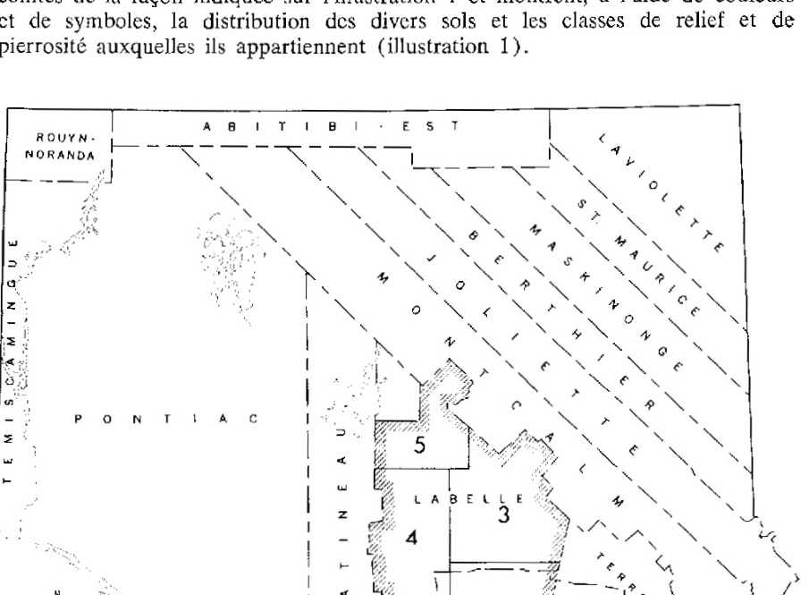
Illustration 1 — Carte du sud-ouest du Québec situant le territoire cartographié et les cinq feuillets de la carte pédologique.
DESCRIPTION GÉNÉRALE DE LA RÉGION
Situation et étendue
Le territoire à l'étude est situé dans la partie sud-ouest du Québec entre les latitudes 45° 27′ et 47° 04′, et entre les longitudes 74° 36′ et 75° 46′. La rivière Outaouais coule le long de la limite méridionale de ce territoire sur une distance ouest-est de 47 milles. Le comté de Gatineau forme la limite ouest du territoire sur une distance nord-sud de 111 milles et le comté de Montcalm en constitue la limite nord-ouest sur une longueur d'environ 105 milles. Enfin, la limite orientale de ce territoire s'étend sur une distance de 48 milles, le long des comtés de Terrebonne et d'Argenteuil (illustration 1).
La superficie du territoire est de 2,631,680 acres.* Le comté de Labelle occupe la partie septentrionale et couvre 1,530,880 acres. Le comté de Papineau, situé dans la partie méridionale, comprend 1,011,840 acres. Le comté de Hull, formé par l'unique township de Templeton et par la ville de Hull, est situé dans le coin sud-ouest du territoire et ne couvre que 88,960 acres.
Population
La population des trois comtés comprenant 113,896 habitants en 1951 est passée à 146,584 en 1961.† Durant cette décennie la population agricole est tombée de 24,277 à 16,141.
Tableau 1 — Populations dans les comtés de Hull, Labelle et Papineau en 19511 et en 19612
La densité de la population varie considérablement à travers le territoire. Les villes et les principaux centres sont surtout distribués le long de la rivière Outaouais et particulièrement dans la partie ouest (Tableau 2). Les autres centres importants sont tous situés le long des principaux cours d'eau : Buckingham, Mont-Laurier et Ferme-Neuve, le long de la Lièvre; Labelle et l'Annonciation, le long de la Rouge, et Saint-André sur la Petite-Nation. La partie centrale du territoire est montueuse et à peu près inhabitée (illustration 2).
Tableau 2 — Populations des villes, villages et municipalités des comtés de Hull, Labelle et Papineau1
PAPINEAU
32,697 hab.
Villes et villages
Buckingham
7,421
Thurso
3,310
St-André
1,066
Ripon
576
Papineauville
1,300
Montebello
1,486
Masson
1,933
Chénéville
746
Angers
575
Municipalités
Amherst
757
Bowman
354
Buckingham
696
Buckingham (part. o.)
275
Buckingham (part. s.e.)
200
Chénéville
392
Duhamel
382
Fassett
578
Lac-des-Plages
264
l'Ange-Gardien
514
Lockaber
641
Lockaber (part. n.)
429
Lockaber (part. o.)
424
Mayo
184
Montpellier
561
Mulgrave et Derry
266
N.D. du Bon Secours
295
N.D. de la Paix
729
Plaisance
816
Ponsonby
256
Portland
727
Portland (o.)
480
Ripon
646
St-André Avellin
1,159
Ste-Angélique
577
Suffolk et Addington
873
Val des Bois
591
Vinoy
218
HULL
84,803 hab.
Cité et villes
Hull
56,929
Gatineau
13,022
Pte-Gatineau
8,854
HULL (suite)
Village
Templeton
2,965
Municipalités
Perkins
947
Templeton (e.)
928
Templeton-est (e.)
215
LABELLE
29,084 hab.
Villes et villages
Mont-Laurier
5,859
Ferme-Neuve
1,974
Labelle
1,221
Lac-des-Écorces
653
l'Annonciation
1,042
Nominingue
744
Ste-Anne-du-Lac
423
Val Barette
557
Municipalités
Bellerive
Boyer
Brunet
1,273
Chute St-Philippe
390
Decarie
650
Ferme-Neuve
1,279
Joly
422
Kiamika
737
Lac-des-Écorces
699
Lac-du-Cerf
393
La Conception
541
Lac-St-Paul
384
Lac Tremblant (n.)
2
La Macaza
604
La Minerve
808
l'Ascension
600
Loranger
406
Marchand
1,026
Mont St-Michel
970
Mont-Tremblant
10
N.D. de Pontmain
516
N.D. du Laus
1,390
Robertson & Pope
1,735
St-Aimé (Lac-des-Îles)
625
Turgeon
661
Non-organisé
122
1SOURCE : Recensement du Canada, 1961.
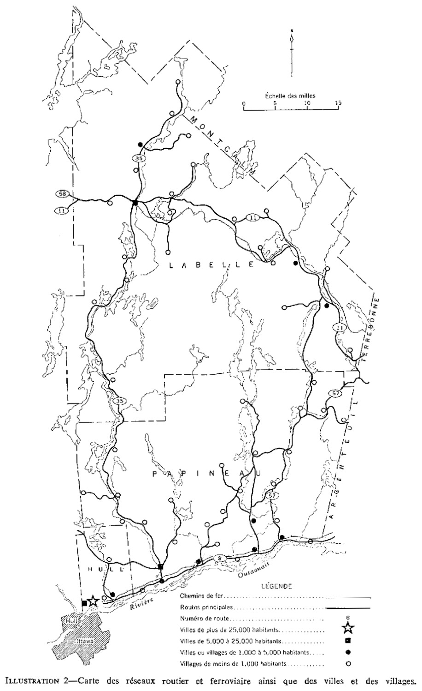
ILLUSTRATION 2 — Carte des réseaux routier et ferroviaire ainsi que des villes et des villages.
LÉGENDE
Chemins de fer : --------------------
Routes principales : ____________________
Numéro de route :
Villes de plus de 25,000 habitants : ★
Villes de 5,000 à 25,000 habitants : ■
Villes ou villages de 1,000 à 5,000 habitants : ●
Villages de moins de 1,000 habitants : ○
Une grande partie de la population rurale ne vit pas de l'agriculture mais tire ses principaux revenus du travail dans les centres urbains ou en forêt. Le commerce et le tourisme contribuent considérablement aux revenus de la population rurale, surtout durant l'été, alors que les estivants recherchent la fraîcheur et la beauté des nombreux lacs et rivières de cet immense territoire.
Communications et marchés
Les principales communications routières sont assurées par les routes 8, 11 et 58 qui, toutes les trois, originent de la Métropole (illustration 2). La route 8 longe la rivière Ouaouais et dessert les comtés de Hull et de Papineau, entre la ville de Hull et le village de Fassett. Les routes 11 et 58 suivent le même trajet et traversent le comté de Labelle. Elles se séparent aux limites ouest du comté de Labelle, la route 58 se dirigeant vers l'Abitibi et la route 11, vers Maniwaki et Hull. Les routes 8 et 11 sont principalement orientées dans l'axe est-ouest et sont reliées par les routes 35 et 57 dans l'axe nord-sud. La route 35 traverse le territoire dans sa partie ouest, le long de la rivière du Lièvre, entre Masson et Mont-Laurier et se prolonge au nord jusqu'à Ferme-Neuve et Sainte-Anne-du-Lac. La route 57 relie Montebello à La Conception, dans la partie est du territoire, ou à Labelle, par un chemin secondaire longeant la rivière Petite-Rouge et le lac Labelle. De la route 8, à Papincauville, un chemin important monte vers les lacs Simon et Gagnon et dessert Saint-André, Ripon, Chénéville et Duhamel.
La partie centrale du territoire n'est pénétrée par une voie ferrée privée et par quelques chemins maintenus par les concessionnaires de territoires forestiers (The James Maclaren Co., The Singer Co.).
Deux voies ferrées du Pacifique-Canadien ainsi que les routes 8 et 11 desservent, à peu d'exception près, les mêmes centres.
Les deux principaux marchés de Montréal et de Hull-Ottawa sont accessibles, avec une facilité variable, de tous les points habités du territoire. Les fermes situées le long de la route 8 sont les plus favorisées, puisqu'elles peuvent communiquer directement et commodément avec l'un et l'autre de ces marchés. C'est aussi le long de cette voie que se font les plus importantes expéditions de produits agricoles, tels le lait frais, les viandes et les œufs.
FORMATION DES SOLS
Les facteurs qui ont contribué à la formation et à la diversification des sols du territoire à l'étude sont le relief, le drainage, le climat, l'environnement biologique et le matériau originel. Ce dernier peut être considéré comme le facteur passif ayant subi l'action combinée de tous les autres durant une période de temps plus ou moins longue.
Le relief régit le ruissellement des eaux de surface et, à un degré plus ou moins grand, selon la porosité des matériaux, affecte l'infiltration des eaux dans le sol. Pour un type de matériau donné, le ruissellement est directement proportionnel au degré de la pente, tandis que l'infiltration des eaux dans le sol y est inversement proportionnelle. Les formes du relief influent différemment sur le sol selon qu'elles sont planes, unies, brisées, convexes ou concaves. Ainsi, les eaux de précipitation disponibles pour l'infiltration dans le sol sont plus grandes sur un terrain plat que sur un terrain en pente ou de forme convexe, mais moindre que sur un terrain en dépression, surtout si cette concavité se situe au bas d'une longue pente. Le phénomène d'éluviation dans le sol est donc partiellement dépendant du relief. Par l'érosion de surface qu'il entraîne, le relief peut aussi être
cause de rajeunissement, de renouvellement ou de destruction du sol. C'est pourquoi les sols des pentes abruptes sont généralement minces.
Le drainage naturel est un facteur déterminant dans la formation du sol. Les phénomènes d'oxydation, de réduction et d'oxydation-hydratation sont fonction du degré d'aération et d'humidité moyenne du sol. L'aération est elle-même directement proportionnelle à la rapidité du drainage naturel.
Le climat détermine le genre de pédogénèse qui régit la formation du sol à partir d'un matériau spécifique. Le climat possède deux éléments: la température et l'humidité, dont les variations individuelles ou conjointes produisent une extrême variété de conditions. Les processus pédologiques sont de plus en plus actifs à mesure que s'élèvent la température et l'humidité. Par ailleurs, le faible développement du sol peut être causé soit par un manque d'humidité, soit par une température très basse ou encore par les deux à la fois.
Depuis le début et tout au long de sa formation, le sol est soumis à un environnement biologique défini et dynamique, constitué surtout par les plantes, la micro-faune et la micro-flore. Les plantes influent sur le sol surtout par le genre de couverture, herbacée ou arborescente, dont elles enveloppent la croûte terrestre, par le type de résidu qu'elles y laissent et par l'action des racines à diverses profondeurs. La végétation naturelle des plantes est elle-même dépendante du climat, mais varie localement selon le drainage et la nature du matériau originel. L'action de la micro-faune et de la micro-flore du sol s'opère soit de façon mécanique, par le déplacement des matières minérales et organiques, soit de façon biochimique par l'ingestion, l'excrétion et la sécrétion de divers produits ou de façon symbiotique par l'action conjointe des micro-organismes et des plantes.
Les matériaux originels sont les dépôts meubles de la surface et qui peuvent être d'origines diverses: glaciaire, alluvionnaire, marine ou autres.
Le relief, le drainage, le climat, l'environnement biologique (biocénose) et les matériaux originels, tels qu'on les trouve dans le territoire à l'étude doivent faire l'objet d'examens particuliers pour permettre d'aborder le sujet de la pédogénèse ou formation des sols.
Relief
Le territoire à l'étude consiste essentiellement en une immense plaine pénéplaine au relief montueux, appelé Plateau laurentien, lequel est découpé par d'étroites vallées, au relief plat ou ondulé, orientées du nord au sud et débouchant dans la plaine outaouaise (illustration 3).
La plaine outaouaise, en pente vers le sud, entre les niveaux d'élévation de 350 et de 150 pieds, est surtout formée de terrains très plats parmi lesquels émergent des îlots de collines rocheuses. Dans sa partie ouest, la plaine s'étend jusqu'à 6 milles au nord de l'Outaouais et s'étage sur deux paliers différents, séparés par un escarpement argileux ayant constitué l'ancienne berge de la rivière Outaouais et se situant entre les niveaux d'élévation de 200 et de 250 pieds. De profonds ravins à travers l'argile ont été creusés par les cours d'eau dans la partie située au-dessus des niveaux de 250 pieds.
Dans sa partie orientale, la plaine outaouaise est très étroite, étant même de moins d'un mille entre Papineauville et Montebello et de moins de 2 milles à Fassett.
A plusieurs endroits de la plaine, au-dessous du niveau de 200 pieds, on note des formes particulières de relief dues à des glissements de terrain qui se sont produits dans les dépôts argileux. Ces glissements se sont produits tout au long
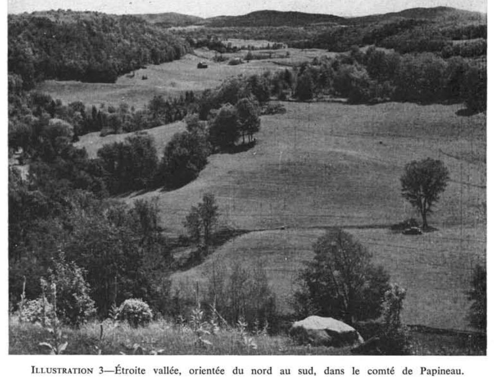
Illustration 3 — Étroite vallée, orientée du nord au sud, dans le comté de Papineau.
de la rivière Outaouais alors qu'elle occupait un lit beaucoup plus large que maintenant. La Grande Presqu'île et la Petite Presqu'île, près de Plaisance, sont les meilleurs exemples de ces reliefs particuliers d'allure bosselée. Plusieurs glissements, comme ceux de Masson, ont subi l'action nivelante des eaux de la rivière et ont l'apparence plane des dépôts argileux non bouleversés. A certains endroits, la rivière a érodé plusieurs chenaux, laissant en relief d'étroites bandes allongées d'ouest en est, comme des remblais de voies ferrées. Entre Masson et Lochaber, la route 8 suit le sommet d'un de ces faux remblais.
Parmi les vallées orientées du nord au sud, celle de la Petite-Nation (et de son affluent, la Saint-Sixte) s'étend au nord de Papineauville jusqu'au lac Simon et au lac des Plages sur une distance de 20 à 25 milles et sur une largeur de 8 à 12 milles. Cette vallée où le terrain ondulé à légèrement vallonné domine, est parsemée de nombreuses collines et de monts rocheux, aux sommets arrondis (illustration 25).
Les mêmes conditions de relief se retrouvent dans les deux courtes vallées le long des deux rivières Petite Blanche et Blanche. L'une de ces vallées est de faible superficie et s'étend entre Jeanne d'Arc et le lac McGregor. L'autre, au nord de Thurso, va jusqu'au lac Lablanche, une distance d'environ 8 milles.
La vallée de la Lièvre traverse tout le territoire du nord au sud. En plusieurs endroits, cette vallée n'a qu'un mille de largeur et elle dépasse rarement 3 milles. Elle s'ouvre toutefois sur plusieurs vallées tributaires comme celles de Poltimore et de Kiamika.
La vallée de la rivière Rouge est orientée vers le sud dans sa partie septentrionale puis dévie vers le sud-est dans le comté de Labelle entre L'Annonciation et La Conception avant de se réorienter vers le sud dans les comtés de Terrebonne et d'Argenteuil. Cette vallée est aussi très étroite sur toute sa longueur et excède rarement un mille de largeur.
Le terrain plat à ondulé domine généralement dans ces étroites vallées de la Lièvre et de la Rouge. L'élévation du terrain varie entre 400 et 700 pieds dans la partie sud et entre 700 et 900 pieds dans la partie nord. Hors les vallées, le territoire est montueux à peu près partout, avec des élévations variant de façon abrupte depuis 700 ou 900 pieds jusqu'à 1,000 ou 1,300 pieds. Les seuls endroits s'élevant au-dessus de 1,500 pieds sont le mont Sir Wilfrid (2,569 pieds) près de Ferme-Neuve et les pentes occidentales du Mont-Tremblant dont le sommet (3,150 pieds) se trouve dans le comté de Terrebonne, près des limites du comté de Labelle.
Drainage et réseau hydrographique
Le drainage naturel des sols dépend de trois facteurs principaux: de l'hydrographie, c'est-à-dire de la distribution et du genre de cours d'eau, du relief et enfin, de la composition et de la structure des matériaux meubles.
La distribution des cours d'eau et leur niveau d'eau a une influence directe sur la nappe phréatique tandis que le relief conditionne les taux de ruissellement et d'infiltration des eaux de précipitation. Toutefois, la porosité des matériaux de surface comme de ceux du substratum exerce une influence déterminante sur le drainage.
Les principaux éléments du système hydrographique du territoire à l'étude sont indiqués sur l'illustration 4. On y voit que tous les cours d'eau se déversent dans la rivière Outaouais qui elle-même coule de l'ouest vers l'est à la limite sud du territoire.
Le principal affluent de l'Outaouais est la Lièvre qui origine dans la partie septentrionale des comtés de Joliette et de Berthier, entre les sources de la rivière Gatineau et de la rivière Rouge. Du nord au sud, la Lièvre traverse le comté de Labelle à Sainte-Anne-du-Lac, Ferme-Neuve (illustration 5), Mont-Laurier et Notre-Dame-du-Laus, puis le comté de Papineau pour joindre l'Outaouais au sud de Buckingham et de Masson. Le long de son cours, elle reçoit les eaux de la Kiamika, de la Tapani et de la rivière du Sourd. Le long de son cours inférieur, la Lièvre est flanquée de deux rivières, la Petite Blanche à l'ouest et la Blanche à l'est. Le réseau hydrographique formé par ces trois cours d'eau, draine toute la moitié occidentale du territoire à l'exception de l'extrême pointe nord-ouest du comté de Labelle qui est drainée par la rivière Gatineau.
La moitié orientale du territoire est principalement drainé par les rivières Rouge et Petite-Nation. La Rouge pénètre le comté de Labelle au nord de l'Ascension, traverse l'Annonciation, Labelle et La Conception avant de passer dans le comté d'Argenteuil où elle continue sa course vers le sud à peu de distance de la limite du comté de Papineau. Un affluent de la Rouge, la rivière Maskinongé, draine une portion du territoire dans l'est des comtés de Labelle et de Papineau.
La Petite-Nation prend sa source dans le comté de Labelle, à l'ouest de Nominingue et coule à travers les lacs Gagnon et Simon, pour ensuite drainer, avec son affluent, la Petite-Rouge, toute la partie est du comté de Papineau.
Une courte rivière, la Kinonge, draine le sud-est du comté de Papineau à partir du lac Commandant (ou Papineau).
95579—2
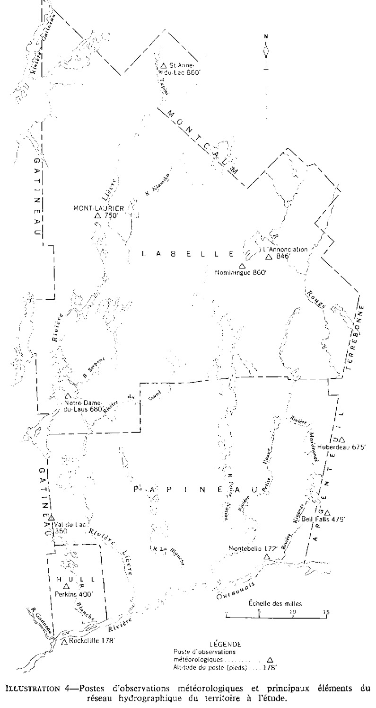
Illustration 4 — Postes d'observations météorologiques et principaux éléments du réseau hydrographique du territoire à l'étude.
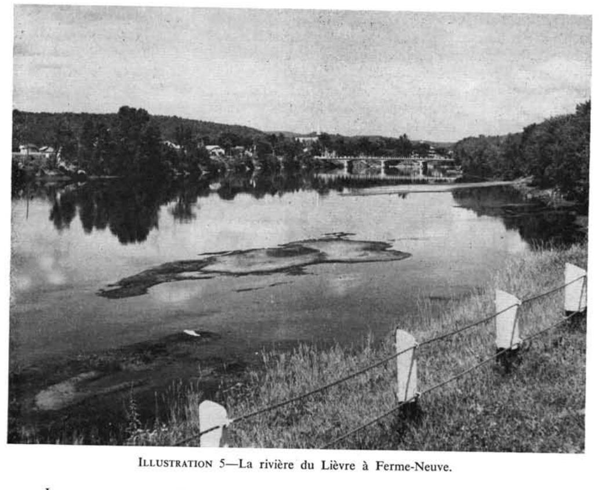
ILLUSTRATION 5 — La rivière du Lièvre à Ferme-Neuve.
Le comportement de ces cours d'eau varie considérablement aux différentes étapes de leurs longs trajets. Certaines sections de ces rivières ont atteint un stage de stabilité ou de maturité tel que leurs eaux s'écoulent à travers les méandres de plaines alluvionnaires qui sont innondées lors des crues printanières. On trouve des exemples de ces conditions le long de la Lièvre, à Ferme-Neuve, et le long de la Rouge, sur la plus grande partie de son cours dans le comté de Labelle. Ces méandres sont continuellement déplacés par l'action des eaux et parfois le cours de la rivière est considérablement modifié. Ainsi, l'auteur a noté qu'au sud de l'Ascension, la Rouge a complètement changé son cours entre le moment où ont été prises les photographies aériennes de 1951 et l'année 1958, où le relevé pédologique a été fait.
En dehors des périodes de crues les sols de ces plaines alluvionnaires sont généralement bien drainés parce qu'ils sont poreux.
Sur la plus grande partie du Plateau, les terrains présentent des pentes fortes le long des rives des nombreux lacs et cours d'eau, de sorte que les endroits sujets au drainage imparfait ou mauvais sont d'étendue restreinte.
Dans la partie sud du Plateau les cours d'eau passent brusquement du niveau des hautes terres à celui des basses terres, et les chutes d'eau y sont nombreuses. A plusieurs endroits on exploite cette énergie hydraulique pour la production de l'électricité et les grands réservoirs de Bowman et de Poisson-Blanc régularisent à cette fin le débit de la Lièvre.
Dans les vallées du Plateau, on peut observer une grande variabilité dans les conditions de drainage des sols et cela sur de courtes distances. La grande perméabilité des matériaux est responsable du drainage excessif des sables grossiers et des
95579—2½
graviers, partout où on les trouve, excepté dans les concavités du terrain. Des dépressions marécageuses sont souvent associées à ces sols grossiers, car l'incapacité de ces matériaux à retenir les eaux de drainage permet qu'elles s'infiltrent rapidement vers les endroits bas. Sur les terrains argileux on ne constate pas les différences si contrastantes de drainage qui existent sur les matériaux grossiers, mais selon que les formes du relief y sont convexes ou concaves le drainage y varie généralement d'imparfait à mauvais.
En comparaison avec les sols des vallées intérieures, les sols de la plaine outaouaise offrent des variations de drainage beaucoup moins étendues. Le drainage imparfait domine sur ces terrains plats, soit dans les argiles, soit dans les sables fins reposant sur un substratum d'argile plane. L'inclinaison générale de la plaine vers le sud ainsi que les ravins creusés par les cours d'eau dans les dépôts argileux, contribuent au drainage des terrains plats.
Climat
Le climat du territoire à l'étude est du type tempéré et se caractérise par des étés modérément chauds et des hivers froids ainsi que par des précipitations modérément abondantes et assez bien distribuées. A l'intérieur de ce territoire il y a a cependant des variations climatiques dues à des facteurs tels que la latitude, l'élévation, l'exposition aux vents et à l'insolation qui affectent localement l'évapotranspiration et la température du sol. De telles différences semblent être responsables, partiellement du moins, pour la différenciation effectuée sur un même matériau originel, entre les sols bruns acides boisés de la série Gatineau et les podzols de la série Sainte-Agathe. Les sols Gatineau occupent la position la plus méridionale où le climat est légèrement plus chaud et où l'évaporation est sensiblement plus élevée que dans la partie septentrionale.
Températures
Les six postes météorologiques situés dans les comtés à l'étude ou près des limites du territoire, tel qu'indiqué sur l'illustration 4, ont enregistré les moyennes de température mensuelle et annuelle rapportées au tableau 3. On note une différence de 4.5°F entre les températures moyennes annuelles enregistrées à Mont-Laurier dans la partie septentrionale et à Rockliffe dans la partie située juste au delà de la limite méridionale du territoire. Ces différences sont sensiblement les mêmes si l'on considère séparément la saison chaude (mai-octobre) ou la saison froide (novembre-avril).
Aucune donnée n'est disponible sur la température du sol. Nous savons cependant que la température varie dans des limites considérables selon l'exposition au soleil et aux vents, la couverture de végétation et le degré moyen d'humidité du sol.
C'est au printemps et dans les boisés qu'on peut observer les plus grandes variations locales dans la température du sol. La neige, le gel ou le froid persistent en certains endroits pendant plusieurs semaines après que la moyenne des terrains est réchauffée. Les principaux éléments contribuant au retard du réchauffement sont l'exposition septentrionale, la végétation de conifères et l'humidité excessive. L'effet de ces facteurs étant cumulatif, il existe au printemps, avant la venue des nouvelles feuilles sur les décidus, des différences marquées de température entre une pente méridionale, supportant des arbres sans feuilles et les expositions nordiques couvertes de conifères. Les dépressions tourbeuses sont aussi très lentes à se réchauffer si on les laisse gorgées d'eau stagnante.
Tableau 3 — Températures moyennes, mensuelles et annuelles (°F).1
Mont- Laurier
Nominingue
N.D. du Laus
Huberdeau
Montebello
Rockcliffe
Novembre
30.2
29.8
31.8
31.9
32.5
33.7
Décembre
13.9
13.3
15.3
17.1
16.6
18.9
Janvier
7.9
7.8
10.0
12.4
11.6
13.4
Février
9.2
10.4
9.8
12.6
12.0
14.4
Mars
22.6
23.0
22.2
24.6
24.0
26.2
Avril
37.6
38.1
37.6
38.9
39.9
41.7
Moyenne pour la saison froide
20.2
20.4
21.1
22.9
22.6
24.6
Mai
51.4
51.1
52.0
52.2
54.2
55.0
Juin
60.6
60.8
62.2
61.6
61.9
64.9
Juillet
64.6
65.1
66.4
66.2
68.0
69.8
Août
62.6
62.7
64.6
64.3
65.9
67.4
Septembre
54.6
53.9
56.5
55.8
57.2
59.4
Octobre
43.5
42.6
45.0
44.5
45.7
47.1
Moyenne pour la saison chaude
56.2
56.0
57.8
57.4
58.8
60.6
Moyenne annuelle
38.2
38.2
39.5
40.2
40.7
42.7
1SOURCE: Monthly Records of Meteorological Observations, 1957.
A défaut de données sur les températures du sol, on peut considérer les degrés-jours au-dessus de 42°F comme la meilleure indication des variations qui peuvent exister dans le territoire. Le long de la limite méridionale du territoire on enregistre une moyenne de 3500 degrés-jours, tandis que dans la partie la plus septentrionale on n'en rapporte que 2500 (illustration 1).
La terre est normalement gelée de la mi-novembre à la mi-avril. La profondeur de pénétration du gel varie selon la protection fournie par la couverture de neige. Elle peut descendre jusqu'à 24 pouces ou un peu plus si la terre demeure découverte durant les froids de décembre. Mais, le plus souvent, la neige recouvre le sol avant les grands froids et prévient le gel, si ce n'est parfois pour quelques pouces près de la surface.
SAISONS DE VÉGÉTATION ET PÉRIODES SANS GEL
La période de grande activité biologique et chimique du sol correspond avec celle où la température de l'air se maintient au-dessus de 42°F. Cette température est atteinte vers le 20 avril dans la partie sud du territoire et 5 jours plus tard dans la partie nord. Cette période prend fin vers le 26 octobre dans le sud et 10 jours plus tôt dans le nord.*
Les périodes sans gel à 32°F sont beaucoup plus courtes que les périodes de saison de végétation ou périodes au-dessus de 42°F. Le tableau 4 montre que la période moyenne sans gel de 32°F varie de 111 jours dans la partie nord du territoire à 125 jours dans la partie sud. En moyenne, la période sans gel à 32°F s'étend de la fin du mois de mai à la mi-septembre. Les postes les moins favorisés ont cependant enregistré des gels aussi tardifs que le 25 juin et aussi hâtifs que le 6 août.
*Les climats du Canada agricole, Rapport N° 3. Inventaires des terres du Canada. Ministère des Forêts et du Développement rural du Canada, 1966.
Tableau 4—Périodes sans gel 1
Postes
Montebello
N.D. du Laus
Huberdeau
Mont- Laurier
Nominingue
Années d'observation..............................
20
22
35
29
36
Période de jours sans gel de 32°F
la plus longue......................................
la plus tardive........................................
8 oct.
14 oct.
9 oct.
19 oct.
8 oct.
1SOURCE: Climatic Summaries, Vol. III. Frost Data. Dept. of Transport, Toronto 1956.
PRÉCIPITATIONS
Le tableau 5 indique que la moyenne de la précipitation annuelle varie entre 34 et 41 pouces aux différents postes météorologiques du territoire. La plus basse précipitation est enregistrée dans la partie la plus septentrionale, soit aux postes de Sainte-Anne-du-Lac, Mont-Laurier, l'Annonciation et Nominingue. Après Montebello, les plus fortes précipitations sont enregistrées dans la partie centrale, à Notre-Dame-du-Laus, Bell Falls et Huberdeau.
Il est à noter que ces différences dans l'intensité de la précipitation se produisent surtout durant la saison froide, soit de novembre à avril inclusivement. On observe en effet une différence de 8 pouces de précipitation durant la saison froide entre le poste de Sainte-Anne-du-Lac (12.2) et Notre-Dame-du-Laus (20.1), tandis que durant la saison chaude il n'existe qu'une différence de 3.5 pouces entre les précipitations extrêmes, soit celles de Val-du-Lac (18.29) et de Sainte-Anne-du-Lac (21.83). Ce dernier poste, qui enregistre la plus basse précipitation de novembre à avril, est aussi celui qui reçoit la plus haute précipitation de mai à octobre.
Il est évident que pour ce qui concerne la pédogénèse et l'utilisation des sols, la précipitation durant la saison chaude est celle dont on doit surtout tenir compte, puisqu'une grande partie de la précipitation de la saison froide ne pénètre pas les sols mais ruisselle directement vers les cours d'eau. De plus, pour apprécier correctement l'effet de la précipitation sur les sols il faut faire intervenir le facteur d'évaporation qui s'élève selon la température moyenne du sol. La précipitation moyenne de 19.4 pouces (mai-octobre) à Perkins est moins effective que la précipitation de 19.0 pouces à Mont-Laurier, pour ce qui a trait à l'éluviation produite dans les sols. Ceci est dû à ce que l'évaporation annuelle de l'eau qui est en moyenne de 23 pouces dans la partie sud du territoire n'est
que de 19 à 20 pouces dans la partie nord. Ces variations, dans les taux d'évaporation, semblent être la principale cause des différences déjà notées, sur le même matériau originel, entre les sols Gatineau de la partie méridionale et les sols Sainte-Agathe de la partie septentrionale. Il est en effet logique de concevoir une éluviation moins prononcée dans le sud à cause d'une évaporation plus forte et d'une décomposition ou d'une minéralisation plus rapide et plus complète de la matière organique, par suite d'une activité biologique plus grande, stimulée par une plus haute température.
Tableau 5 — Précipitations mensuelles et annuelles moyennes1 (en pouces)
Sainte-Anne du Lac
Mont-Laurier
l'Annonciation
Nominingue
N.D. du Laus
Val du Lac
Perkins
Huberdeau
Bell Falls
Montebello
Novembre
1.58
2.90
2.84
3.03
3.47
3.15
3.15
3.25
3.70
3.55
Décembre
2.49
2.76
2.23
2.61
3.96
3.30
3.06
2.82
3.22
3.53
Janvier
2.38
2.38
2.39
2.55
3.33
3.34
2.85
2.84
3.25
3.25
Février
2.61
2.19
2.05
2.14
3.02
2.60
2.48
2.24
2.49
2.56
Mars
1.74
2.50
1.96
2.17
3.29
3.08
2.59
2.38
3.04
3.28
Avril
1.39
2.38
2.33
2.55
3.03
2.91
3.21
2.65
3.52
3.45
Total pour la période froide
12.19
15.11
13.80
15.05
20.10
18.38
17.34
16.18
19.22
19.62
Mai
2.68
2.42
2.72
2.47
2.99
2.91
3.09
2.96
2.97
3.22
Juin
3.94
3.14
4.00
3.62
3.52
3.14
3.27
3.83
3.53
3.76
Juillet
4.77
3.81
4.16
3.60
4.06
2.87
3.23
3.74
3.58
3.90
Août
3.80
3.35
3.15
3.17
3.34
2.77
3.09
3.36
3.17
3.62
Septembre
4.34
3.59
4.17
3.76
3.60
3.53
3.52
3.96
3.99
3.88
Octobre
2.30
2.66
2.32
3.04
2.91
3.07
3.16
3.27
3.07
3.17
Total pour la période chaude
21.83
18.97
20.52
19.66
20.42
18.29
19.36
21.12
20.31
21.55
Total pour l'année
34.02
34.08
34.32
34.71
40.52
36.67
36.70
37.30
39.53
41.17
1SOURCE: Bulletin météorologique, 1958, ministère de l'Industrie et du Commerce, Québec.
Les sols ayant une bonne capacité de rétention d'humidité souffrent rarement d'un manque d'humidité dans le territoire à l'étude, à l'exception de la portion sud-ouest où des précipitations relativement faibles et une évapo-transpiration relativement élevée entraînent des déficits moyens de 2 pouces d'eau annuellement, déficits qui peuvent être assez graves en certaines années.
Milieu biologique
Le milieu biologique naturel comprend la végétation et la biocénose, c'est-à-dire la faune et la micro-flore du sol. L'état de l'humus, sa distribution, son degré d'accumulation et de minéralisation est conditionné principalement par le genre, le nombre et le degré d'activité des divers organismes vivant au-dessus comme à l'intérieur du sol.
La forêt constituait autrefois la couverture végétale naturelle de tout le territoire et en demeure encore la végétation naturelle sur la plus grande partie du terrain. La principale association d'arbres est celle que l'on trouve sur les monts et les collines de till où le drainage est bon sans être excessif. Cette association comprend l'érable à sucre (Acer saccharum) comme élément dominant et une variété d'arbres à feuilles caduques comme le bouleau jaune (Betula lutea), le hêtre (Fagus grandifolia), le frêne blanc (Fraxinus americana), le bouleau blanc (Betula papyrifera), le chêne rouge (Quercus borealis) et le tremble (Populus tremuloides). Parmi ces feuillus, on trouve également, en terrain bien drainé, quelques conifères dont : le sapin (Abies balsamea), l'épinette blanche (Picea glauca) et le pin blanc (Pinus strobus). La distribution et le nombre relatif des espèces secondaires varient considérablement avec la latitude et l'exposition. Dans le sud, le chêne rouge est largement représenté, surtout dans la région de Montebello, où, par ailleurs, le tilleul est aussi fréquent. Ces deux espèces sont moins abondantes à mesure que l'on se déplace vers le nord. D'un autre côté, la proportion des conifères, des trembles et des bouleaux blancs augmente avec la latitude. De plus, la densité des conifères est souvent plus forte sur les pentes nordiques que sur les pentes exposées au sud.
En terrain excessivement drainé, les conifères sont généralement dominants et comprennent le pin blanc, le pin rouge (Pinus resinosa), le pin gris (Pinus Banksiana), le sapin et l'épinette blanche. Les feuillus de ces sites sont surtout le bouleau blanc et le tremble.
Sur les sols imparfaitement drainés, les associations d'arbres comprennent une plus grande variété d'espèces que sur les autres sols et l'on y trouve plusieurs des feuillus et des conifères déjà mentionnés : épinette blanche, cèdre blanc (Thuja occidentalis), sapin, mélèze.
Les conifères dominent partout où la nappe phréatique est près de la surface comme dans les sols organiques et les bas-alluvions. Ils sont représentés par l'épinette noire (Picea mariana), le cèdre, le mélèze et le sapin. Les feuillus des sites mal drainés sont surtout le frêne noir (Fraxinus nigra), l'orme (Ulmus americana), les saules et les aulnes.
Les sols très minces, sur les pentes abruptes, sont généralement couverts de conifères parmi lesquels les pins sont les plus nombreux.
La végétation fournit les matières qui deviendront l'humus doux (mull) ou l'humus brut (mor) du sol et libéreront les acides actifs dans le processus de podzolisation. La transformation des produits de la végétation se fait par l'intermédiaire des micro-organismes lesquels ont une action bien spécifique selon le climat. Nous ne possédons aucune donnée locale qui puisse établir l'action particulière de ces divers organismes sur les sols du territoire. Cependant nous avons pu constater l'action bienfaisante de la symbiose micro-organismes-aulnes pour la formation d'un humus de bonne qualité dans les terrains humides de la partic nord du territoire. De façon générale, cependant, la minéralisation de l'humus est beaucoup plus avancée dans le sud que dans le nord. Aux micro-organismes du sol, s'ajoute une faune variée comprenant des micro-artropodes, des insectes, des miriapodes, des lombricidés, des enchytracidés et des nématodes. L'action individuelle de ces divers animalcules est peu connue mais nous savons que l'introduction graduelle des vers de terre peut causer des modifications importantes dans les couches supérieures des sols. Il a, en effet, été constaté, dans le nord-est du continent, que la couche éluviée (Ae) des podzols peut être détruite par l'action mécanique des lombrics.
Matériaux originels
Dans l'étude des matériaux originels, il convient de distinguer les assises géologiques et les divers matériaux meubles qui en sont dérivés.
Les assises géologiques du territoire sont d'âge précambrien, à l'exception de quelques étroites bandes, le long de la rivière Ouataouais, qui appartiennent aux assises paléozoïques.
Les assises paléozoïques sont toutes de la période Beekmantown. Près de Templeton elles sont constituées de calcaire, de calcaire dolomitique et de dolomie de la formation Oxford. Ces formations Oxford se retrouvent également près de Thurso et à la limite des comtés de Papineau et d'Argenteuil. A Thurso et à Fassett on trouve aussi de très étroites bandes de grès calcaire et de dolomie de la formation March.
Les assises précambriennes appartiennent surtout à la série Grenville qui consiste principalement en roches métamorphiques comme le calcaire cristallin, le quartzite, et diverses sortes de roches gneissiques. Ces vieilles assises ont subi des intrusions relativement peu volumineuses de granite, de syénite, de pegmatite ainsi que de quelques roches basiques comme les gabbros.
Selon le mode de déposition, on peut classer les dépôts meubles en 7 groupes principaux : les tills glaciaires, les dépôts fluvio-glaciaires, les dépôts éoliens, les dépôts lacustres, les sédiments marins, les alluvions et les dépôts organiques (illustration 6).
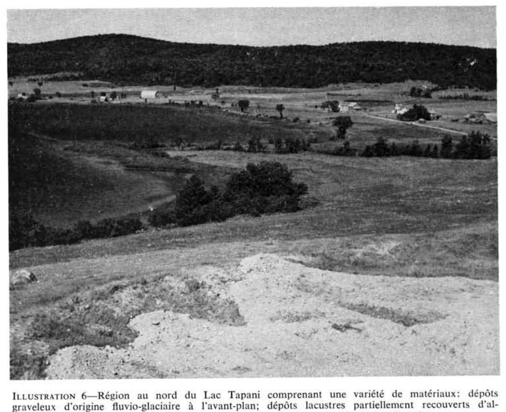
Illustration 6 — Région au nord du Lac Tapani comprenant une variété de matériaux: dépôts graveleux d'origine fluvio-glaciaire à l'avant-plan; dépôts lacustres partiellement recouverts d'alluvions, autour du lac; collines de till dans la partie boisée de l'arrière-plan.
LES TILLS GLACIAIRES
Les dépôts laissés par les glaciers du Pléistocène couvrent la plus grande partie du territoire. Ce sont les plus anciens dépôts que l'on rencontre communément dans la région, si l'on fait exception de la possibilité que l'argile brune de la vallée de l'Outaouais et un certain till brun observé près de Buckingham soient antérieurs au Pléistocène.
Les matériaux glaciaires non assortis que l'on appelle tills sont constitués d'argile fine et de limon intimement mélangés avec des particules sableuses de diverses dimensions, des fragments graveleux et des pierres ou des gros boulders.
Dans les trois comtés à l'étude, les tills sont surtout dérivés de roches dures comme le gneiss, le quartzite, le granit, le gneiss-granit, le gabbro et l'anorthosite. D'énormes blocs rocheux ou boulders se trouvent répandus partout où ces dépôts existent. Plusieurs de ces blocs rocheux sont de deux à quatre pieds de diamètre et sont souvent emprisonnés dans la matrice du till avec seulement une faible partie émergeant au-dessus de la surface du terrain.
La majorité des tills est de coloration grise, de texture sableuse ou sablo-graveleuse et très fermement tassée. Les pierres sont généralement semi-arrondies et ne portent aucun signe d'altération superficielle. Ces tills ont généralement trois pieds ou plus d'épaisseur au-dessus du roc et forment le matériau originel des sols Gatineau, Sainte-Agathe et Aumond. Là où ce genre de till est mince, c'est-à-dire de moins de trois pieds sur le roc, ce sont les terrains Lakefield qui ont été cartographiés.
Le till bordant la partie méridionale du Plateau et celui de quelques vallées diffère légèrement du till que nous venons de décrire. Il est ouvert, lâche, de couleur jaunâtre et contient une grande proportion de roches anguleuses et légèrement altérées à la surface. Ces tills appartiennent peut-être à des moraines d'ablation sont les matériaux originels des terrains St-Colomban.
Un autre genre de till résulte du mélange de matériaux glaciaires comme ceux que nous venons de décrire, avec une importante quantité de calcaire cristallin. Les terrains Larose occupent ces sites où le calcaire cristallin a une influence prépondérante.
Près de Templeton, un till très mince sur roc calcaire constitue le matériau originel des terrains Farmington.
DÉPÔTS FLUVIO-GLACIAIRES
Les dépôts fluvio-glaciaires ont été effectués par les cours d'eau émanant des glaciers. Ces dépôts consistent en sable, gravier et petites pierres dérivés des diverses roches précambriennes (illustration 6). Ils forment les matériaux originels des sols Mont-Rolland, Saint-Gabriel et Saint-Faustin. Ces derniers sont formés de matériaux mal assortis, très grossiers et parfois pierreux déposés sous forme de kames ou d'eskers. Les eskers sont particulièrement fréquents le long de la vallée de la Lièvre où ils s'allongent de façon discontinue sur plusieurs milles au sud et au nord de Mont-Laurier. Les sols Mont-Rolland et Saint-Gabriel occupent le fond des vallées étroites; ils sont presque plats et ne sont jamais pierreux.
DÉPÔTS ÉOLIENS
Des dépôts éoliens sont superposés aux tills glaciaires de certaines vallées orientées du nord au sud. Ces matériaux déposés durant la retraite vers le nord du glacier continental, ont été transportés par les vents violents soufflant à partir des champs glaciaires vers le sud ou le sud-ouest en direction des régions libérées des glaces. Le principal de ces dépôts se trouve dans la région de Montpellier—Ripon (Papineau) au sud-ouest du lac Simon qui forme un profond et large chenal ouvert du nord au sud à travers la région montueuse du centre (illustration 7).
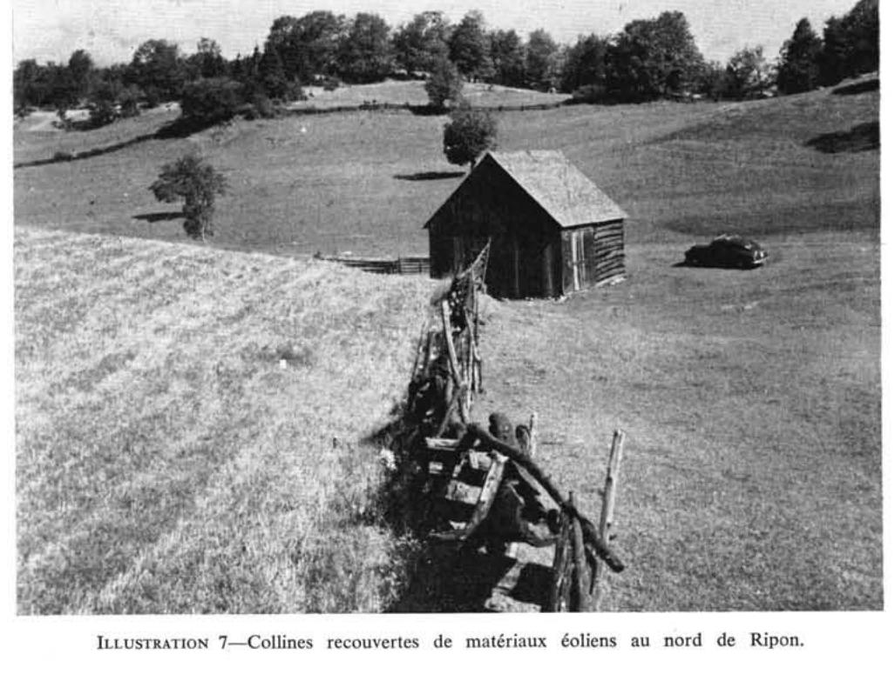
ILLUSTRATION 7—Collines recouvertes de matériaux éoliens au nord de Ripon.
DÉPÔTS LACUSTRES
Les principaux dépôts lacustres se situent dans le comté de Labelle à des élévations de 700 à 800 pieds au-dessus du niveau moyen de la mer. Les plus grandes étendues se trouvent le long de la Lièvre entre Lac-du-Cerf et Mont-Saint-Michel, le long de la Kiamika, entre Kiamika et Lac-des-Écorces, et le long de la rivière Tapani et du lac Tapani (illustration 5).
Les dépôts lacustres sont généralement laminés ou varvés (illustration 8). Leur contenu en argile dépasse rarement 40 pour cent, tandis que le limon y entre généralement dans une proportion de 50 pour cent ou plus. Selon qu'ils étaient naturellement bien drainés, imparfaitement ou mal drainés, les dépôts lacustres ont donné les sols Bouchette, Montcerf ou Maniwaki.
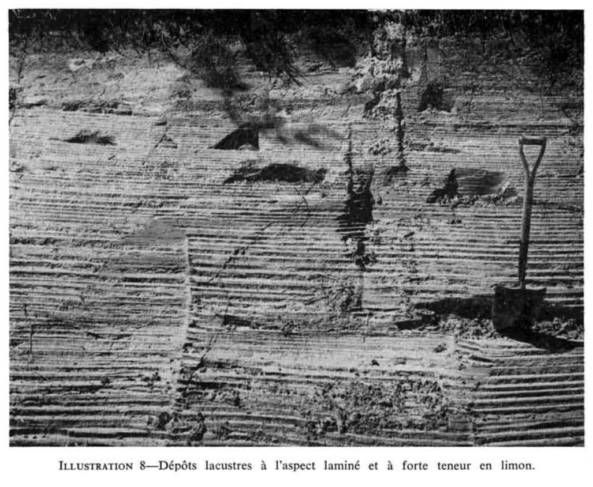
Illustration 8 — Dépôts lacustres à l'aspect laminé et à forte teneur en limon.
SÉDIMENTS MARINS
Les sediments marins couvrent la vallée de l'Outaouais et les vallées du Plateau laurentien en communication directe avec l'Outaouais et à une élévation inférieure à 650 pieds.
Dans la vallée de l'Outaouais se trouvent 2 sortes d'argiles marines, l'une de couleur grise, l'autre de couleur brune. Aux endroits non bouleversés par des glissements de terrain, l'argile brune se présente sous forme de lits relativement minces parmi la masse d'argile grise. Sur les terrasses supérieures non érodées, l'argile brune est rarement exposée à la surface. Par contre, des bandes horizontales d'argile brune peuvent souvent être observées le long des coupes profondes produites par les ravinements. Sur les terrasses inférieures l'argile brune se rencontre à plusieurs endroits. Cependant, à cause des brassages effectués par des glissements de terrain, les argiles grises et brunes se rencontrent rarement à l'état normal de bandes continues et horizontales, mais plutôt sous forme de mélanges intimes de l'une avec l'autre ou sous forme de bandes plus ou moins discontinues, souvent inclinées, et parfois même, presque à la verticale.
L'argile des vallées inférieures du Plateau laurentien est de couleur grise, mais diffère en certains endroits de l'argile grise de la vallée de l'Outaouais par un contenu plus élevé en limon, surtout dans la partie supérieure des dépôts, et par des laminations ou varves parfois intercalées entre les strates massives.
Les sols formés sur les argiles des vallées inférieures du Plateau laurentien appartiennent aux séries Chapeau, Dalhousie et Brandon. A ces séries on peut
aussi joindre le sol Pontiac, formé sur de minces dépôts loameux recouvrant ces mêmes argiles.
Sur les argiles grises de la vallée de l'Outaouais on trouve les sols Rideau, Sainte-Rosalie et Laplaine.
Les profils de sols développés exclusivement dans l'argile brune sont très rares, bien que les mélanges d'argiles brune et grise se rencontrent communément le long de l'Outaouais sur des glissements d'argiles plus ou moins applanis par l'action des eaux de la rivière. Les sols dont le profil est en grande partie constitué d'argile brune ont été classés dans les séries Wendover et Bearbrook, excepté là où les glissements ou éboulis ont créé des reliefs et des drainages si variables que les profils de sol ne peuvent entrer dans les définitions de ces séries. La plupart des glissements de terrains argileux ont été simplement groupés sous un seul type de terrain appelé: éboulis.
ALLUVIONS
Diverses alluvions recouvrent des étendues considérables de matériaux glaciaires, lacustres ou marins (illustration 9). Les alluvions sont les dépôts les plus diversifiés quant à la nature, la texture, le drainage, le relief et l'âge. En certains cas ces dépôts sont très épais et le substratum sur lequel ils reposent n'a que très peu influencé le développement du profil ou agit peu sur le présent comportement du sol. En d'autres cas, les alluvions sont relativement minces et les caractéristiques du profil du sol, particulièrement l'aération et le drainage, dépendent grandement de la porosité et du relief du substratum sur lequel elles reposent.
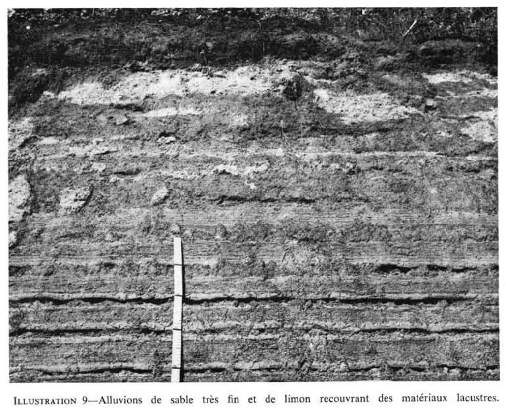
ILLUSTRATION 9 — Alluvions de sable très fin et de limon recouvrant des matériaux lacustres.
Les sols Lesage sont de texture grossière et constitués d'alluvion graveleuse d'une épaisseur de trois à sept pieds sur un substratum d'argile plane et imperméable. Les alluvions de sable moyen et grossier forment les matériaux originels des sols Morin, Péningue et Déligny que l'on trouve surtout le long des vallées supérieures du Plateau laurentien. Le Morin est un podzol à ortstein, et le Déligny est un podzol gleyifié. Ces matériaux reposent sur une variété de substrata qui ont peu d'influence sur les profils parce que ces alluvions sont très perméables et ont généralement plus de six pieds d'épaisseur.
Des alluvions, également sableuses, mais contenant un mélange de particules grossières et de particules fines forment le matériau originel des sols Ripon (illustration 10).
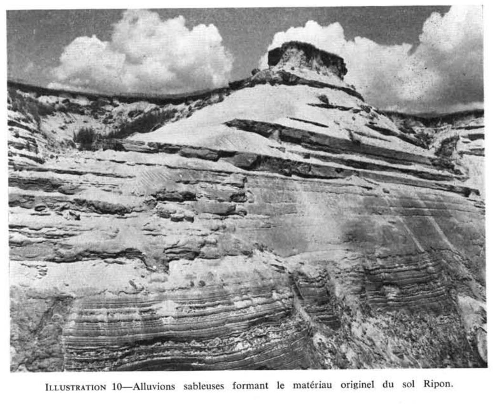
ILLUSTRATION 10—Alluvions sableuses formant le matériau originel du sol Ripon.
Les alluvions de sable moyen et fin déposées sur les argiles de la vallée de l'Outaouais sont d'épaisseur variable. Les dépôts épais et excessivement à modérément drainés donnent les sols Uplands et Sainte-Sophie, alors que les dépôts relativement minces, soit de moins de 5 pieds d'épaisseur, donnent les sols Saint-Jude et sont imparfaitement drainés. Les alluvions très minces, soit de moins de 2½ pieds, sur l'argile donnent les sols Saint-Damase et Courval.
Les dépôts de sable fin, très fin et fin loameux qui occupent les vallées du Plateau laurentien, sont les matériaux originels des sols Ivry, Guindon et Bevin. Dans la vallée de l'Outaouais, des alluvions de type semblable, recouvrant les
argiles marines, sont les matériaux originels des sols Saint-Thomas et Achigan. Les très récents alluvionnements de sable très fin et de sable loameux le long des principales rivières et notamment le long de la Rouge forment les matériaux originels des sols Diable.
Les alluvions de loam ou de loam sableux sont également très fréquentes et présentent une grande variété de conditions. Dans les vallées des hautes terres elles sont représentées dans les matériaux originels des sols Piedmont, Hull, Counge, Brébeuf, Allumette et Demers, tandis que dans la vallée outaouaise elles le sont par les matériaux des sols Coteau et Soulanges. Les alluvions récentes de loam ont formé les sols Lachute que l'on rencontre le long des principaux cours d'eau et plus particulièrement le long de la Rouge.
DÉPÔTS ORGANIQUES
Les dépôts organiques ne couvrent qu'une superficie très restreinte du territoire étudié. Les principales étendues se trouvent aux environs de l'Ascension (Labelle). Aucun sol organique bien décomposé et d'étendue appréciable n'a été cartographié.
PÉDOGÉNÈSE ET CLASSIFICATION
Depuis leur mise en place, les matériaux que nous venons de décrire ont subi des changements dans leur composition chimique et parfois dans leur composition mécanique. Ces changements ont été causés par la dissolution, l'oxydation, la réduction, la translocation, l'éluviation, la précipitation et autres interactions des divers composants minéraux entre eux et avec les composés organiques produits par les plantes ou les organismes du sol et accumulés à la surface du sol ou infiltrés parmi la matière minérale.
Sous l'influence de diverses forces physiques, chimiques et biologiques, la partie supérieure des dépôts minéraux a été différenciée en couches de composition chimique et d'aspect physique définis et que l'on appelle les horizons du sol. Le mot horizon se justifie par le fait que ces bandes de composition et d'apparence semblables s'étendent surtout horizontalement, c'est-à-dire parallèlement à la surface du terrain. La séquence de ces horizons, depuis la surface jusqu'à la profondeur où les matériaux n'ont pas été sensiblement altérés, s'appelle le profil du sol.
Selon leur pédogénèse et l'apparence de leurs profils, les sols du territoire à l'étude sont classés dans les groupes suivants: podzol, sol brun acide boisé, sol brun forestier, gleysol humique et gleysol. A ces groupes de sols dont les profils sont bien développés il convient d'ajouter les régosols qui incluent tous les sols dont le développement est peu avancé, soit parce que les matériaux originels ont été mis en place récemment (alluvions récentes) soit parce qu'ils ont été récemment bouleversés (éboulis argileux).
Podzols
Les podzols sont un groupe de sols acides, bien drainés à imparfaitement drainés, caractérisés par un horizon intensément éluvié de couleur cendrée (Ae), situé immédiatement sous la mince couche d'humus brut (L-H) de la surface et surmontant immédiatement une couche de couleur contrastante, brun rougeâtre ou jaunâtre, enrichie en sesquioxydes (B).
Les podzols du territoire à l'étude peuvent être orthiques, comme les sols Morin et Uplands, gleyifiés comme les sols Saint-Jude et Allumette, ou encore à ortstein comme le sol Péningue (illustration 11). Ils sont tous de texture sableuse.
Le podzol orthique possède sous la couche humifère (L-H) un horizon éluvié (Ae) de plus d'un pouce d'épaisseur et un horizon d'accumulation des sesquioxydes (Bf ou Bfh), friable, très coloré et de ton uniforme. L'horizon d'accumulation du podzol gleyifié est marqué de mouchetures grisâtres et brunâtres dues à une période temporaire d'humidité excessive. Le podzol à ortstein possède un horizon d'accumulation cimenté de façon continue ou discontinue.
Sols bruns boisés acides
Les sols bruns boisés acides, autrefois appelés bruns podzoliques, sont des sols acides, bien drainés à imparfaitement drainés, se différenciant des podzols par l'absence d'un horizon éluvié bien marqué et par l'absence d'une zone d'accumulation bien définie.
Les sols Gatineau, Mont-Rolland, Pontiac et Saint-Jovite appartiennent à ce groupe. Ce sont des sols dont la texture va du loam sableux ou sablo-graveleux, au loam et au loam limoneux ou argilo-limoneux (illustration 12). Parmi ce groupe on trouve les sous-groupes suivants: orthiques, dégradés et gleyifiés. Les sols orthiques sont bien drainés et ne possèdent aucune trace d'horizon éluvié (Ae). Les sols dégradés sont bien drainés et possèdent un mince horizon éluvié (Aej), souvent discontinu. Les sols gleyifiés sont imparfaitement drainés.
Sols bruns forestiers
Les sols bruns forestiers sont formés sur des matériaux calcaires et ont un pourcentage de saturation en base très élevé. Ils n'ont pas de zones d'éluviation ou d'illuviation bien définies. Certains profils du type de terrain Larose appartiennent à ce groupe de sols (illustration 13).
Sols gris boisés
Les sols gris boisés ne sont représentés dans le territoire que par une seule série, celle de Chapeau, qui occupe une très faible superficie. À l'état naturel, ces sols ont, à la surface, une couche humifère non minéralisée (L-H), reposant sur un horizon éluvié de couleur pâle, lequel surmonte un horizon enrichi en argile (Bt).
Gleysols humiques
Les gleysols humiques, appelés autrefois sols gleysoliques gris foncé, se sont formés sur des matériaux de texture fine dont le drainage naturel est lent. À l'état naturel, ils ont une épaisse surface humique, bien minéralisée (Ah), reposant sur un sous-sol (Bg ou Btjg) peu différencié du matériau originel (C) excepté par des marbrures grises et brunes plus ou moins prononcées avec parfois une légère accumulation d'argile. Le matériau originel est de réaction neutre ou alcaline (illustration 14).
Gleysols
Les gleysols sont formés sous un drainage naturel très mauvais. À l'état naturel, ces sols sont souvent couverts d'une couche tourbeuse de plusieurs pouces d'épaisseur, sous laquelle la couche humifère minéralisée (Ah) est mince et ne dépasse pas 3 pouces d'épaisseur. Le sous-sol est caractérisé par des couleurs grisâtre ou gris bleuâtre dues à l'intense gleyification (Bg). Les sols Maniwaki et Vaudreuil appartiennent à ce groupe.
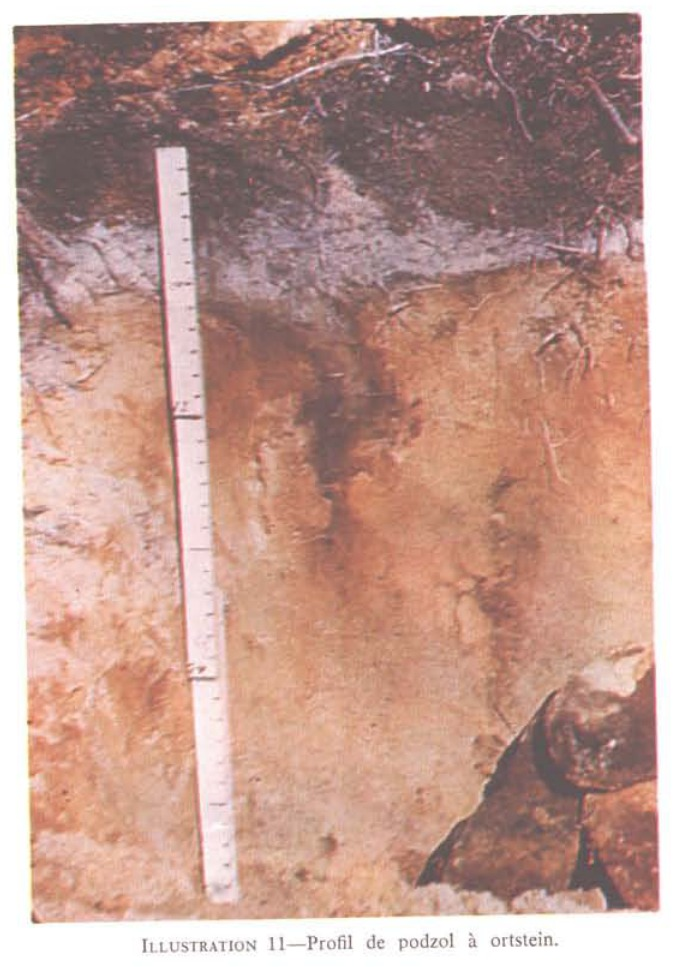
Illustration 11 — Profil de podzol à ortstein.
sableux Ripon. Les désignations texturales réfèrent à la texture de la surface cultivée du sol et comprennent douze classes: le sable (S), le sable loameux (S-L), le loam sableux (L-S), le loam (L), le loam limoneux (L-Li), le limon (Li), le loam argilo-limoneux (L-Li-A), le loam argileux (L-A), l'argile sableuse (A-S), l'argile limoneuse (A-Li), l'argile (A) et l'argile lourde (A-Lo) (illustration 15). Si nécessaire, on ajoute à ces dénominations des qualificatifs comme graveleux, caillouteux, pierreux qui décrivent les sols de façon plus complète.
Certaines unités cartographiques comprennent des sols qui n'ont pas été différenciés selon les critères de série mais auxquelles on a quand même donné un nom comme aux séries. Les noms de Larose et de Saint-Colomban réfèrent à de telles unités appelées type de terrain (land type) pour les distinguer des séries.
La clé présentée au tableau 6 résume les données de toute la classification des sols des comtés de Hull, Labelle et Papineau. Elle est basée sur les matériaux originels, le drainage naturel et le développement du profil.
Les superficies de chaque sol cartographié dans chacun des trois comtés, apparaissent au tableau 9 de l'appendice.
Tableau 6 — Clé des sols des comtés de Hull, Labelle et Papineau
A. Sols sur tills glaciaires
(a)
Till dérivé de granit, de gneiss, de quartzite et d'autres roches précambriennes
Bien drainé
Loam sableux Gatineau (BBA)1
Gt2
Loam sableux Sainte-Agathe (P)
Ag
Imparfaitement drainé
Loam sableux Aumond (P)
Ao
(b)
Till mince dérivé de gneiss, de granit, de quartzite et d'autres roches précambriennes
Bien drainé
Terrain Lakefield (BBA-P)
Lk
Excessivement drainé à bien drainé
Terrain Saint-Colomban (P)
Cb
(c)
Matériau résiduel et till mince dérivé de calcaire cristallin, de quartzite et de gneiss
Bien drainé à excessivement drainé
Terrain Larose (BF-BBA-P)
La
(d)
Matériau résiduel et till mince dérivé de calcaires paléozoïques
Excessivement à imparfaitement drainés
Terrain Farmington (BF)
F
B. Sols sur matériaux graveleux
(a)
Matériaux pierreux, mal assortis, dérivés de roches précambriennes non calcaires
Excessivement drainé
Loam sablo-graveleux Saint-Faustin (P)
Ft
(b)
Matériaux bien assortis, dérivés de roches précambriennes non calcaires
Excessivement drainé
Loam sablo-graveleux Saint-Gabriel (P)
G
Loam sableux Mont-Rolland (BBA)
Mt
(c)
Matériaux bien assortis, dérivés de roches précambriennes non calcaires et déposés sur de l'argile
Bien drainé
Loam sablo-graveleux Lesage (P)
Le
1 Symboles désignant les groupes de sols
BBA — Sols bruns boisés acides
BF — Sols bruns forestiers
G — Gleysols
GB — Sols gris boisés
GH — Gleysols humiques
O — Sols organiques
P — Podzols
R — Régosols 2 Symboles désignant les séries et les types.
Tableau 6 — Clé des sols des comtés de Hull, Labelle et Papineau (suite)
C. Sols sur dépôts argileux
(a) Loam argilo-limoneux à argile limoneuse
Bien drainé
Loam argilo-limoneux Bouchette (P).......................................................................................................... Bc
Loam à loam limoneux Bouchette................................................................................................................... Bcl
Mal drainé
Loam argilo-limoneux à loam argileux
Montcerf (G)...................................................................................................................................................... Mf
Loam argileux Dalhousie (GH)...................................................................................................................... D
Mal drainé
Argile Brandon (GH).................................................................................................................................... B
(d) Argile à argile lourde de couleur grise
Modérément bien drainé
Argile Rideau (R).......................................................................................................................................... Ri
Argile Sainte-Rosalie (GH)............................................................................................................................ R
Argile à loam argileux Laplaine (G).............................................................................................................. Lp
(e) Argile à argile lourde de couleur brune
Modérément bien drainé
Argile Wendover (R)..................................................................................................................................... W
(a) Sables moyens à grossiers dérivés de roches précambriennes
Excessivement drainé
Sable Morin (P) (sans ortstein)...................................................................................................................... Mo
Sable grossier Morin....................................................................................................................................... Moc
Sable Déligny (P)............................................................................................................................................ De
(b) Mélange de sable grossier et de sable fin ou loameux, dérivé de roches précambriennes
Sable fin à sable loameux Ivry (P)................................................................................................................. I
Sable très fin à loam sableux fin.................................................................................................................... If
Sable fin érodé par le vent, matériaux de l'Ivry (R)........................................................................................ Ic
Imparfaitement drainé
Sable fin à sable loameux Bevin (P)............................................................................................................... Be
Dans les descriptions qui suivent, la couleur du sol est suivie d'un ensemble de symboles qui réfèrent au système de couleurs Munsell.
Sols sur tills
SÉRIE GATINEAU (Gt)
Les sols Gatineau occupent la partie méridionale du Plateau laurentien et couvrent 511,010 acres du territoire cartographié. Le terrain est bien drainé, montueux ou vallonneux et très pierreux. Le matériau originel est un till de moraine de fond, dérivé de gneiss, de quartzite, de gneiss-granite et d'autres roches précambriennes.
La plupart des sols Gatineau sont en forêt. L'érable à sucre y domine avec d'autres feuillus comme le chêne rouge, l'érable rouge, le hêtre, le tilleul et le frêne blanc.
Les sols Gatineau ont une gamme de texture peu étendue; tons ont été cartographiés comme loams sableux. La description suivante est celle d'un profil à surface cultivée du loam sableux Gatineau, appartenant aux sols bruns acides boisés, orthiques.
Horizon
Profondeur en pouces
Ap
0 – 6
Loam sableux fin, brun jaunâtre foncé ou brun foncé (10YR 4/4)1; structure granuleuse fine; très friable et perméable; pH 5.6 à 5.9.
Bm 1
6 – 17
Loam sableux, fin, brun jaunâtre (10YR 5/4 à 5/6); structure granuleuse très fine et monogranulaire; très friable et perméable; pH 5.6 à 5.9.
Bm 2
17 – 24
Loam sableux olive (2.5Y 4/4); structure très fine, granuleuse à polyédrique anguleuse; friable; pH 5.6 à 5.9.
C
24+
Till non altéré de loam gris olive à gris, plusieurs fragments graveleux et pierres de différentes grosseur; structure pseudo-laminée à polyédrique ou massive; compact; pH 5.6 à 6.0.
1 Code de couleur Munsell, Munsell Color Company Inc., Baltimore 2, Maryland, U.S.A.
En forêt, le sol possède une litière superficielle d'environ un pouce d'épaisseur formée d'humus brut, de feuilles et de tiges et qui repose sur l'horizon Bm 1 décrit plus haut.
Utilisation
La majorité des sols Gatineau ont été laissés boisés à cause de leur état pierreux et de leur relief qui les rend peu aptes aux fins agricoles. Le terrain déboisé est surtout laissé en pâturages non améliorés et la partie cultivée demeure négligeable.
L'enlèvement des pierres est coûteux: il faut souvent utiliser la dynamite pour faire éclater les énormes pierres ou les affleurements de roc.
Pour bien produire, le sol doit être chaulé et fertilisé avec des engrais complets et du fumier. L'emploi du fumier est particulièrement avantageux pour améliorer en même temps la capacité de rétention d'eau et le niveau des éléments nutritifs.
Les sols Gatineau sont hâtifs et devraient être ensemencés tôt au printemps pour que les plantes puissent bénéficier de l'abondance d'humidité disponible au début de la saison de végétation.
Le danger d'érosion sur les sols Gatineau est minimisé par la grande perméabilité du solum et le peu de longueur des pentes. Cependant, l'érosion est sévère partout où le terrain est cultivé dans le sens de la pente. En général, il y a peu d'érosion nocive parce que les terrains déboisés sont surtout utilisés comme pâturages.
SÉRIE SAINTE-AGATHE (Ag)
Les sols Sainte-Agathe occupent la partie nord de la région à l'étude et couvrent 673,340 acres dans le comté de Labelle et 226,389 acres dans le comté de Papineau. Comme les sols Gatineau, ils sont bien drainés et se sont formés sur du till dérivé de roches précambriennes: gneiss, granit, gabbro, anorthosite. La série Sainte-Agathe appartient cependant aux podzols tandis que la série Gatineau fait partie des sols bruns acides boisés.
Les sols Sainte-Agathe ont un relief vallonné à montueux. Ils sont formés d'un till de loam sableux d'une épaisseur de 4 à 12 pieds sur le roc. Les grosses pierres sont nombreuses partout; les affleurements de roc sont fréquents au sommet des collines.
Le ruissellement des eaux est très rapide sur ces sols mais le drainage interne est modéré. Le solum a une excellente perméabilité mais la capacité de rétention d'eau n'est que moyenne. Le matériel originel est beaucoup moins perméable que le solum; ceci prévient une infiltration trop rapide. L'eau peut causer beaucoup d'érosion à la surface du sol non protégé par la forêt ou par une végétation herbacée. La forêt couvre encore la majeure partie de ces sols et est formée surtout d'érable à suere, de bouleau jaune (merisier) et de hêtre, avec un peu de sapin et d'épinette.
La description suivante de ce profil appartenant aux podzols orthiques représente les conditions naturelles.
Horizon
Profondeur en pouces
L-H
2 — 0
Matière organique brun très foncé et racines; structure grumeleuse fine; très friable et perméable; pH 4.0 à 4.6.
Ae
0 — 1½
Loam sableux fin à loam gris pâle, éluvié; très friable et perméable; pH 4.6 à 5.2.
Horizon
Profondeur en pouces
Bfh
1½ – 6
Loam sableux fin, brun rougeâtre à brun; structure granuleuse fine et monogranulaire; très friable et perméable; quelques fragments graveleux; pH 5.0 à 5.4.
Bf 1
6 – 20
Loam sableux brun à brun jaunâtre; un peu de gravier et quelques pierres; quelques fins agrégats granuleux et polyédriques parmi la masse monogranulaire; très friable et perinéable; pH 5.0 à 5.4.
Bf 2
20 – 28
Loam sableux à loam sablo-graveleux brun jaunâtre pâle à gris brunâtre pâle, avec taches de gris et brun jaunâtre; till très ferme à compact, se brisant en fragments irréguliers; pH 5.2 à 5.6.
C
28+
Till de loam sablo-graveleux à loam sableux, gris brunâtre à gris ou gris olive, contenant des pierres et se brisant en fragments irréguliers; ferme à compact; pH 5.4 à 6.0. Les pierres et les fragments graveleux sont plus abondants dans la partie inférieure que dans la partie supérieure du solum.
La couche cultivée de ce sol est un loam sableux ou un loam d'un brun jaunâtre foncé ou brun foncé qui repose sur le loam sableux brun à brun jaunâtre décrit plus haut comme horizon Bf 1.
Utilisation
En général, les sols Sainte-Agathe ne se prêtent pas à l'utilisation pour l'agriculture à cause de la pierrosité et des pentes raides. Bien que la quantité de pierres ne soit pas très considérable l'épierrement est rendu très difficile et coûteux parce que la plupart des blocs rocheux sont très gros et enfouis jusque dans le sous-sol. Ce n'est que sur les plus douces pentes que l'on peut cultiver sans crainte de provoquer une sérieuse érosion.
Sur les pentes faibles et dans les endroits relativement peu rocheux, les cultures sarclées peuvent donner de bons rendements à condition de chauler, d'ajouter du fumier et des engrais chimiques complets. Les cultures sarclées doivent toujours être faites en contre-pente.
Les endroits très pierreux et aux pentes très abruptes devraient rester boisés ou retourner en forêt. Quelques étendues peuvent être utilisées comme pâturage où l'on maintiendra une couverture d'herbages. Le terrain plus uni, dont le pourcentage est très faible, peut être utilisé pour les cultures sarclées, les céréales, le foin et le pâturage.
SÉRIE AUMOND (Ao)
La série Aumond représente le membre imparfaitement drainé des sols Gatineau et Sainte-Agathe. Elle se rencontre en petites étendues dans la partie ouest du comté de Labelle, près des limites de Gatineau, où elle occupe 3,453 acres. Le terrain offre des pentes assez douces et longues où peut s'accumuler l'eau d'infiltration venant des collines de till situées plus haut. La plupart des sols sont modérément pierreux mais il y en a aussi d'excessivement pierreux.
L'eau pénètre rapidement à travers le solum perméable mais ne peut traverser le matériau originel sous-jacent formé de till compact et descend plutôt la pente en s'infiltrant à travers la base du solum. Le drainage est de moins en moins bon vers le bas des pentes à cause de l'accumulation de plus en plus grande des eaux d'infiltration.
Le loam sableux est le seul type de la série Aumond, laquelle appartient aux podzols gleyifiés. La description suivante est celle d'un sol cultivé.
Horizon
Profondeur en pouces
Ap
0 – 5
Loam sableux brun grisâtre très foncé (10YR 3/2); structure granuleuse; friable et perméable; pH 5.3 à 5.6. (Des plaques de l'horizon Ae apparaissent par endroits sous la couche cultivée.)
Bfhgj
5 – 12
Loam sableux brun jaunâtre foncé, avec taches de brun rougeâtre foncé (5YR 3/4) et de brun grisâtre (2.5Y 5/2); structure granuleuse fine à polyédrique sub-anguleuse; très friable et perméable; pH 5.6 à 5.9.
Bfg
12 – 24
Loam sableux brun grisâtre, avec larges taches olive (2.5Y 4/4) ou brun grisâtre foncé (10YR 4/2); structure polyédrique sub-anguleuse; friable et perméable; pH 5.8 à 6.2.
C
24+
Till de loam sableux gris olive (5Y 4/2-4/3), avec marbrures assez distinctes de brun grisâtre et de brun jaunâtre foncé; structure massive; ferme à compact; pH 5.8 à 6.2.
En forêt, la couche de surface est une litière organique de quelques pouces d'épaisseur reposant sur un horizon minéral éluivé (Acgj) de 2 à 4 pouces d'épaisseur qui s'incurve par endroits dans l'horizon Bfhgj sous-jacent.
Utilisation
Le sol Aumond est en grande partie défriché et utilisé pour le pâturage ou la grande culture. Les rendements sont bons où le sol est bien entretenu. Afin de réprimer l'érosion, il faut éviter de cultiver de haut en bas des pentes.
Pour être efficace, le drainage doit se faire en contrepente, en ayant soin de couper l'eau d'infiltration par des drains souterrains ou des fossés en amont des endroits les plus mal drainés. Ces drains ou fossés doivent être creusés à 30 pouces de profondeur au moins et s'enfoncer jusque dans le matériau originel compact. Ceci permettra d'éliminer les eaux d'infiltration et contribuera à réprimer l'érosion.
Une fois le drainage établi, on pourra s'attendre à un bon rendement par des traitements à la chaux, au fumier et aux engrais chimiques complets.
Terrains Lakefield (Lk)
Les terrains Lakefield couvrent 111,239 acres dans le comté de Labelle et 99,064 acres dans le comté de Papineau. On les rencontre en terrain vallonné ou ondulé, à des élévations variant entre 600 et 1,300 pieds.
La plus grande partie des terrains Lakefield couvrent 93,005 acres dans la section des hautes terres. La plus grande partie des terrains est couverte d'un till dérivé des roches précambriennes et ressemblant au matériau originel des sols Sainte-Agathe et Gatineau. Le till de ces derniers sols est toutefois modérément épais, tandis que celui des terrains Lakefield est mince, au point qu'il a été modifié dans toute son épaisseur par les processus pédologiques. Le roc est exposé à plusieurs endroits et des boulders émergent à la surface ou sont encastrés dans le sol.
Les minces dépôts de till sur le roc ne peuvent emmagasiner qu'une quantité très limitée d'humidité, et l'eau qui ne peut être retenue dans le sol s'écoule ou
s'infiltre vers les dépressions pour y former des endroits marécageux. Le peu d'épaisseur des matériaux meubles sur le roc est également responsable de variations dans le drainage depuis le sommet des collines jusque dans les dépressions. Cependant, la plus grande partie des terrains appelés Lakefield est bien drainée.
Les variations admises dans les terrains Lakefield ne permettent pas de les décrire comme série. Toutefois, la description suivante donne les principales caractéristiques du sol brun boisé acide dégradé que l'on trouve aux endroits bien drainés, où le till est assez épais pour permettre un complet développement du profil.
Horizon
Profondeur en pouces
L-H
2 – 0
Feuilles en décomposition, racines et humus noir partiellement minéralisé; très friable et très perméable; pH 4.0-4.5.
Loam sableux brun rougeâtre avec plaques de brun et de brun jaunâtre; très friable et perméable; pH 5.0-5.4.
Bfj
7 – 22
Loam sableux brun jaunâtre; très friable et perméable; quelques pierres et quelques fragments graveleux; pH 5.0-5.6.
C
22 – 28
Till de loam sableux gris brunâtre pâle, très faiblement altéré; très ferme; légèrement perméable, plusieurs pierres et plusieurs fragments graveleux; pH 5.1-5.8. Cette couche de till n'a généralement que quelques pouces d'épaisseur et est souvent absente de sorte que le solum repose directement sur le roc.
Utilisation
Les terrains Lakefield sont mal adaptés à l'agriculture, soit à cause de leur relief soit à cause de leur manque d'épaisseur, de leur variabilité ou de la présence des boulders et d'affleurements. De faibles superficies ont été mises en culture, mais plusieurs d'entre elles ont par la suite été abandonnées. La superficie de ces terrains présentement vouée à l'agriculture est très faible. Les sols Lakefield affectés à la culture doivent être traités comme ceux des séries Gatineau ou Sainte-Agathe.
Terrains Saint-Colomban (Cb)
Les terrains Saint-Colomban couvrent 98,960 acres dans le comté de Labelle et 21,449 acres dans le comté de Papineau. On les rencontre surtout sur le rebord méridional du Plateau laurentien et au fond de certaines vallées glaciaires, où ils voisinent les sols Saint-Faustin à des altitudes généralement inférieures à 1,000 pieds.
Le matériau originel est un till dérivé de roches précambriennes comme le gneiss, le granit et le quartzite. Les fragments du till sont surtout anguleux et de couleur jaunâtre, ce qui semble indiquer qu'ils proviennent d'une moraine d'ablation. L'épaisseur des matériaux meubles sur le roc excède rarement 5 pieds et parfois les affleurements de roc peuvent occuper jusqu'à 50 pour cent du terrain (illustration 16).
Le relief dans son ensemble, varie de fortement ondulé à légèrement vallonné. Les eaux de pluie s'infiltrent rapidement à travers les matériaux graveleux du till et s'étalent au-dessus du substratum rocheux et imperméable pour former, dans les dépressions, des endroits marécageux contrastant fortement avec les buttes de till qui peuvent devenir très arides au cours de la saison estivale.
La description qui suit donne les principales caractéristiques du profil du podzol orthique formé sur les ondulations de till.
Horizon
Profondeur en pouces
L-H
1 - 0
Humus brut, brun très foncé.
Ae
0 - 3
Loam sableux gris brunâtre pâle, très friable et perméable.
Bfh
3 - 6
Loam sableux brun rougeâtre contenant une forte proportion de pierres et de fragments graveleux; structure particulaire; excessivement perméable.
Bf
6 - 20
Loam sableux à loam sablo-graveleux, brun jaunâtre; beaucoup de fragments rocheux, angulaires; structure particulaire; excessivement perméable.
C
20+
Till de loam sablo-graveleux, brun jaunâtre pâle à gris brunâtre pâle.
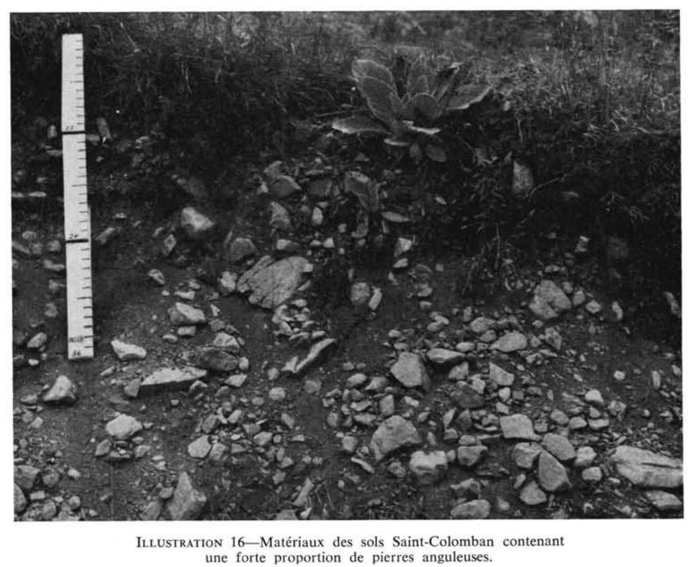
ILLUSTRATION 16 — Matériaux des sols Saint-Colomban contenant une forte proportion de pierres angulaires.
Les profils de ce podzol sont très acides et les pH varient généralement entre 4.5 et 5.0 à la surface et 5.5 et 6.0 dans le sous-sol.
Utilisation
L'excessive pierrosité des terrains Saint-Colomban les rend impropres à l'agriculture. La présence de nombreux affleurements rocheux et parfois de dépressions très humides peut aussi déprécier ces terrains quant aux diverses autres utilisations
auxquelles on voudrait les affecter. L’érable à sucre est l’arbre qui pousse le plus spontanément sur ces terrains, mais il semble que les conifères, surtout les pins, puissent aussi leur convenir.
Les terrains Larose couvrent 1,375 acres dans le comté de Labelle et 11,902 acres dans le comté de Papineau. Ils comprennent des sols formés sur un till contenant du calcaire cristallin ou formés sur place de ce même roc et exhibant des profils de sols bruns forestiers, de sols boisés bruns acides ou de podzols. Les sols bruns forestiers se rencontrent là où le calcaire a une influence prépondérante, tandis que deux autres types de profils se forment sur le matériel pauvre en calcaire. Ce terrain comprend également des affleurements de calcaire cristallin de la formation Grenville avec d’autres types de roc. Les boulders, moins abondants sur les sols Larose que sur les sols de till environnants, sont constitués surtout de gneiss, de quartz et de granit.
Les terrains Larose ont un relief général plus ou moins vallonné tandis que la présence de nombreux affleurements confère au micro-relief une allure tourmentée. Le drainage est excessif à cause d’un ruissellement externe rapide, de la grande perméabilité du sous-sol et de son faible pouvoir de rétention d’eau. Le matériau originel est aussi excessivement perméable là où il est formé de calcaire désagrégé en cristaux grossiers.
La végétation naturelle est surtout formée d’érable à sucre et de chêne rouge avec une faible proportion de thuya (cèdre). Le thuya est particulièrement abondant sur les terrains où la culture a été abandonnée. L’herbe à la puce foisonne le long des routes.
Parmi les divers types de profils observés sur le terrain Larose, les sols bruns forestiers formés sur le calcaire cristallin, présentent les principales caractéristiques suivantes :
Horizon
Profondeur en pouces
Ah
0 – 2
Loam sableux organique, brun rougeâtre très foncé (5YR 3/2-2/1); structure grumeleuse; très friable et perméable; pH 6.3 à 7.1.
Bm 1
2 – 5
Loam sableux brun rougeâtre foncé (5YR 3/4-3/3); structure granuleuse très fine parmi des grains de mica et de calcaire cristallin altéré; très friable et perméable; pH 6.6 à 7.4.
Bm 2
5 – 22
Loam sableux grossier; brun rougeâtre (5YR 4/4-5/4); avec nombreux fragments anguleux de calcaire cristallin ou cristaux de calcite; très friable et perméable; pH 7.4 à 7.6.
Bm K
22 – 30
Cristaux de calcite brun rougeâtre clair à gris rosé, partiellement altérés, et tachés de sesquioxydes; très perméable à l’air et à l’eau; pH 7.6 à 7.9.
Ck
Calcaire cristallin blanc formant l’assise rocheuse, ou grosses pierres traversées par des fissures verticales par où l’eau s’infiltre profondément.
La couleur rougeâtre qui prévaut dans les sols Larose est un caractère important qui aide à les différencier des sols de till environnants.
Utilisation
Une bonne partie des terrains Larose a été mise en culture, mais a été abandonnée par la suite. La sécheresse du terrain Larose et le bas niveau des éléments nutritifs sont responsables de la médiocrité des récoltes. Les plantes à racines profondes comme la luzerne qui sont généralement bien adaptées à de tels sols profonds, ne viennent pourtant pas bien. Il faudrait peut-être chercher la cause des échecs dans les déficiences du sol en potasse et en phosphore.
Les champs qu'on ne peut cultiver avec succès devraient être reboisés. Les spécialistes du reboisement devraient être consultés quant au choix des essences à faire.
Terrains Farmington (F)
Les terrains Farmington occupent 835 acres le long de la rivière Outaouais. Ce sont des sols de till très minces sur roc calcaire et dont la profondeur varie depuis quelques pouces jusqu'à un maximum d'environ 15 pouces. Par ailleurs, l'assise rocheuse est exposée sur une grande partie du terrain. Les profils comprennent surtout des sols bruns forestiers.
Le terrain est généralement uni et parfois ondulé. Le drainage naturel de ces sols minces varie de modérément bon aux endroits presque unis, à excessif sur les ondulations et imparfait dans les dépressions. Ces terrains ont un faible pouvoir de rétention d'eau et deviennent très secs au cours de l'été. A cause du peu de profondeur du sol, les arbres n'ont jamais poussé de façon très dense, bien qu'on observe de bons peuplements d'érable à sucre.
La plupart des sols Farmington ont une surface de loam brun grisâtre foucé, de structure granulaire et de réaction près de la neutralité, reposant sur du roc calcaire partiellement altéré ou sur un loam brun foncé contenant plusieurs fragments de roc calcaire.
Utilisation
A cause des nombreux affleurements rocheux et du peu de profondeur du sol, la plus grande partie des terrains Farmington n'est pas arable. Les pierres sont généralement peu nombreuses et petites mais on remarque à certains endroits des accumulations de pierres transportées par les glaciers.
La plus grande partie du terrain est boisée ou en pâturage non amélioré. La croissance des herbages est généralement bonne au printemps mais devient pauvre au cours des sécheresses estivales. La luzerne pousse parfois assez bien, ce qui suggère que ses racines peuvent s'enfoncer dans les fissures du roc sous-jacent et trouver une humidité qui n'est pas accessible aux plantes à racines superficielles.
Sols formés sur matériaux graveleux
Série Saint-Faustin (Ft)
Les sols Saint-Faustin couvrent respectivement 38,369 et 9,972 acres dans les comtés de Labelle et de Papineau. Ils occupent les vallées à des hauteurs s'échelonnant entre 600 et 800 pieds et offrent un relief ondulé à légèrement vallonné, souvent en forme de kame.
Le matériau originel est un dépôt fluvio-glaciaire de graviers généralement mal assortis, souvent très caillouteux. Plusieurs de ces dépôts ont une épaisseur dépassant les 30 pieds. Les matériaux sont issus de diverses roches ignées ou
métamorphiques formant l'assise précambrienne. Les cailloux arrondis se rencontrent parfois aussi bien à la surface du terrain que dans la masse du dépôt.
La très grande perméabilité des matériaux est la cause du drainage excessif des sols Saint-Faustin. La rétention d'eau est passable dans le solum mais faible dans le matériau originel et il y a peu de chance qu'un mouvement d'eau capillaire ascendant puisse s'établir à partir des profondeurs de la nappe phréatique.
La végétation forestière est de belle venue et comprend l'érable à sucre, le tremble, le hêtre, le pin blanc et le sapin.
La série Saint-Faustin appartient aux podzols orthiques. La description qui en est faite plus bas se rapporte aux conditions naturelles qui existent en forêt.
Horizon
Profondeur en pouces
L-H
2 — 0
Humus brut brun foncé et racines; pH 4.5 à 5.0.
Ae
0 — 2
Loam sableux, éluivé, gris pâle.
Bfh
2 — 8
Loam sableux brun foncé à brun, contenant un peu de gravier; structure monogranulaire; quelques pierres ou cailloux arrondis; lâche et très perméable; pH 5.2 à 5.4.
Bf 1
8 — 16
Loam sableux à loam sablo-graveleux ou à gravier loameux, brun jaunâtre; structure monogranulaire; pH 5.2 à 5.4.
Bf 2
16 — 24
Gravier et sable brun jaunâtre pâle; pH 5.4 à 5.6.
C
24+
Gravier, cailloux arrondis et pierres gris brunâtre pâle; pH 5.6 à 6.0.
Utilisation
Les sols Saint-Faustin sont partiellement en forêt et partiellement utilisés pour l'agriculture. Ils sont peu adaptés à l'agriculture, non à cause de quantités excessives de pierres mais à cause d'une faible capacité de rétention d'eau et d'une faible fertilité. En certains endroits, les accidents de terrain rendent difficile l'usage des machines agricoles. Les champs sont presque tous en pâturages dont la production herbacée est généralement maigre et de pauvre qualité.
Il faut ensemencer ces terrains le plus tôt possible au printemps, tout en évitant les dommages du gel, chauler et fertiliser avec du fumier et des engrais chimiques complets. Une fertilisation peu abondante et souvent répétée aura l'avantage de réduire la perte des éléments de fertilité dans les eaux de drainage. Plusieurs chaulages sont nécessaires pour corriger la haute acidité de ces sols. L'utilisation agricole des sols Saint-Faustin les plus loameux et les plus unis est peut-être justifiable, mais le reboisement s'impose sur les terrains en pente, car il est trop difficile d'y maintenir l'humidité nécessaire aux plantes cultivées.
SÉRIE SAINT-GABRIEL (G, Gl)
Les sols Saint-Gabriel couvrent respectivement 10,138 et 26,486 acres dans les comtés de Labelle et de Papineau. Formés sur les matériaux graveleux des plaines de délavages glaciaires, ils occupent les vallées de la région montagneuse à des élévations allant de 500 à 700 pieds. Les dépôts graveleux sont composés en grande partie de matériel quartzitique, granitique et gneissique modérément bien trié et généralement non caillouteux ou pierreux. Ces dépôts reposent sur le till ou sur le roc et varient en épaisseur de quelques pieds à plus de 10 pieds.
Bien que le terrain soit ondulé ou uni, les sols sont excessivement drainés à cause de leur faible pouvoir de rétention d'eau et de la très grande perméabilité du matériau originel. N'étant pas retenues dans le sol, les eaux de précipitation s'accumulent dans les dépressions de terrain et y produisent des conditions marécageuses. Il en résulte une juxtaposition de terrains très humides et de sols très arides.
Sur le terrain fortement ondulé, à l'écart des ruisseaux et des marécages, l'érable à sucre, le pin blanc et le bouleau blanc sont les arbres les plus communs, mais en terrain plat, surtout aux abords des ruisseaux, on rencontre plus souvent l'épinette blanche, le tremble et le thuya (cèdre).
Les sols Saint-Gabriel appartiennent aux podzols orthiques et comprennent deux types : le loam sablo-graveleux (G) et le loam sableux fin (Gl). À l'état naturel, le loam sablo-graveleux Saint-Gabriel possède les caractéristiques suivantes :
Horizon
Profondeur en pouces
L-H
2 – 0
Matière organique gris très foncé à brun très foncé; un peu de sable; pH 4.5 à 5.5.
Ae
0 – 2
Loam sableux à sable loameux éluivé, gris pâle ou gris brunâtre pâle; un peu de gravier; pH 4.5 à 5.0.
Bfh
2 – 5
Loam sableux à sable loameux, avec un peu de gravier, brun rougeâtre foncé à brun rougeâtre; structure monogranulaire; généralement lâche et excessivement perméable, parfois cimenté par la matière organique et le fer; pH 4.8 à 5.5.
Bf 1
5 – 16
Gravier loameux ou sableux brun vif à rouge jaunâtre; lâche et excessivement perméable; pH 4.9 à 5.9.
Bf 2
16 – 28
Sable graveleux ou gravier brun jaunâtre à brun jaunâtre pâle avec bandes brun foncé; structure monogranulaire; lâche et ouvert; pH 5.0 à 5.9.
C
28+
Gravier brun jaunâtre pâle avec parfois des lits de sable ou de gravier caillouteux; lâche et excessivement perméable; pH 5.6 à 6.2.
La surface du sol cultivé est un loam sableux ou un sable loameux brun foncé qui repose directement sur l'horizon Bf 1 décrit plus haut.
Utilisation
Un fort pourcentage des sols Saint-Gabriel ont été déboisés et mis en culture; l'opération a été relativement facile sur ces sols dépourvus de pierres et bien drainés. Cependant, ces terrains sont arides, de basse fertilité et de peu de valeur pour l'agriculture à moins qu'on les irrigue. La plupart des champs sont maintenant abandonnés ou utilisés pour de maigres récoltes de foin ou de pâturage.
De tels sols ne conviennent qu'aux plantes très peu exigentes en eau. D'un autre côté, la luzerne et les autres plantes à racines profondes ne peuvent qu'croître qu'une fois l'acidité corrigée et le niveau de fertilité relevé. L'exploitation profitable ne paraît être possible que dans le cas de quelques cultures spéciales comme par exemple la pomme de terre, qu'on cultive en certains endroits.
Série Mont-Rolland (Mt)
Les sols Mont-Rolland occupent une superficie de 10,832 acres dans la partie sud des hautes-terres. Ils se sont formés sur des dépôts graveleux de delta ou de délavage glaciaires qui présentent un relief uni ou ondulé. Ces dépôts graveleux sont semblables au matériau originel des sols Saint-Gabriel, mais tandis que ces derniers sont des podzols, les sols Mont-Rolland exhibent un profil brun boisé acide, dégradé.
Les sols Mont-Rolland ont un très faible pouvoir de rétention d'humidité et une grande porosité qui les rend excessivement drainés. La description suivante est celle d'un profil examiné en terrain cultivé.
Horizon
Profondeur en pouces
Ap
0 – 6
Loam sablo-graveleux brun, contenant parfois beaucoup de petits cailloux arrondis; très friable et très perméable; pH 5.2 à 5.6.
Bf 1
6 – 12
Loam sablo-graveleux brun rougeâtre; très perméable; pH 5.2 à 5.6.
Bf 2
12 – 30
Loam sablo-graveleux brun jaunâtre foncé; contenant parfois beaucoup de petits cailloux arrondis; très perméable; pH 5.2 à 5.6.
C
30+
Gravier ou gravier et sable dérivés de granit, de gneiss et de quartz; lâche et très perméable; pH 5.5 à 6.0.
Utilisation
Un large pourcentage des sols Mont-Rolland a été déboisé et utilisé pour les récoltes de grande culture et les pâturages. La culture extensive ne convient pas à ces terrains arides et de faible fertilité naturelle. Le réchauffement printanier est rapide et il est bon d'ensemencer très tôt pour obtenir des récoltes avant que le terrain ne devienne trop sec. Une fertilisation généreuse devrait aussi être utilisée pour stimuler une rapide croissance avant les sécheresses estivales.
Des applications répétées de chaux sont nécessaires pour satisfaire aux besoins des plantes cultivées sur le sol Mont-Rolland qui est acide dans le sous-sol aussi bien qu'en surface. Les plantes à racines profondes peuvent mieux utiliser la fertilité et l'humidité disponibles que les plantes à racines superficielles. Les champs qui ne sont pas productifs devraient être reboisés en utilisant les essences recommandées par les spécialistes en foresterie.
Série Lesage (Le)
Les sols Lesage comprennent 5,000 acres de terrain ondulé dans la partie méridionale du territoire, à des hauteurs de 250 à 600 pieds. Le matériau originel est un dépôt graveleux de 2 à 10 pieds d'épaisseur et reposant sur argile. La texture du dépôt, dans sa partie supérieure, varie du loam sableux au loam sablo-graveleux. On ne trouve aucune grosse pierre en surface ni dans le sous-sol mais les petits cailloux arrondis sont parfois abondants.
Les sols Lesage sont bien drainés, mais le substratum argileux ralentit l'infiltration des eaux de drainage. Ces sols sont donc moins arides que les sols Saint-Gabriel et Mont-Rolland.
La végétation arborescente se compose principalement d'érable à sucre, d'érable rouge, de chêne rouge et de hêtre.
Le sol Lesage, un podzol orthique, a les caractéristiques suivantes en terrain cultivé :
Horizon
Profondeur en pouces
Ap
0 – 6
Loam sableux brun foncé; fins granules parmi des matériaux monogranulaires; très friable et perméable; pH 5.0 à 5.4.
Bfh
6 – 10
Loam sableux brun vif, avec une quantité variable de gravier; structure principalement monogranulaire; lâche et perméable; pH 5.2 à 5.4.
Bf
10 – 20
Loam sableux à loam sablo-graveleux brun; structure monogranulaire; lâche et perméable; pH 5.2 à 5.6.
C
20+
Gravier gris brunâtre pâle; très perméable; pH 5.4 à 5.8.
Sur les pentes, on trouve parfois des endroits humides là où le substratum argileux est près de la surface ou exposé. En forêt, le sol possède une couche organique semi-décomposée (L-H), brun foncé, d'environ deux pouces d'épaisseur, reposant sur une couche de loam sableux gris pâle (Ae) et d'environ deux pouces d'épaisseur.
Utilisation
La majorité des sols Lesage a été déboisée et utilisée pour la grande culture. D'importantes étendues ont été employées comme gravières pour différentes fins.
Les sols Lesage sont acides et le choulage est nécessaire pour la plupart des cultures mais plus particulièrement pour les légumineuses. L'emploi de la chaux, du fumier et des engrais chimiques complets permet d'amener ces sols, surtout les types minces sur argile, à un assez bon niveau de fertilité. Le terrain se réchauffe vite au printemps et peut être ensemencé dès que les gels nocifs sont passés. Les sols Lesage sont assez bien adaptés à la plupart des cultures mais ils conviennent particulièrement aux plantes à racines profondes qui peuvent utiliser au mieux l'humidité du sol.
Sols sur dépôts argileux
Série Bouchette (Bc, Bcl)
Les sols Bouchette couvrent 45,218 acres dans le comté de Labelle. On les trouve surtout le long de la vallée de la Lièvre mais aussi le long d'autres étroites vallées. Leur élévation varie généralement entre 600 et 800 pieds. Le terrain est bien drainé, libre de pierres, légèrement ondulé et découpé par quelques ravins. La grande perméabilité du solum supérieur permet l'aération et une bonne distribution de l'humidité. Le sous-sol est toutefois massif et peu perméable à l'air et à l'eau.
Le contenu en limon du matériau originel est de 50 à 60 p. cent tandis que le contenu d'argile dépasse rarement 40 p. cent et est généralement de moins de 30 p. cent. Ce haut pourcentage de limon qui caractérise les dépôts lacustres des vallées supérieures les différencie nettement des dépôts argileux des basses-terres. Le matériel limoneux des sols Bouchette est varvé ou lamellé et se fracture facilement sue le plan horizontal mais s'oppose au mouvement vertical de l'eau et à la pénétration des racines profondes.
La texture dominante dans la série Bouchette est le loam argilo-limoneux (Bc) et presque tous les sols cartographiés ont été réunis sous ce type, même si
des déviations vers une texture légèrement plus grossière ou plus fine ont été admises. Cependant, là où le sol est passablement plus profond et quelque peu plus grossier que la moyenne, le type de loam (Bcl) a été cartographié. Ce type s'est apparemment formé aux endroits où les dépôts lacustres ont été couverts par une mince couche de matériel dérivé des collines de till environnants (illustration 17).
La description suivante d'un profil cultivé donne les caractéristiques de ce sol appartenant aux podzols orthiques.
Horizon
Profondeur en pouces
Ap
0 – 6
Loam argilo-limoneux à loam brun grisâtre foncé à brun (10YR4/2-4/3 ou 2.5Y4/2); structure granuleuse à grumeleuse très fine; très friable et perméable; pH 5.4 à 5.8.
Bfh
6 – 10
Loam argilo-limoneux à loam limoneux brun jaunâtre foncé à brun olive (10YR 4/4-2.5Y 4/4); fine structure granuleuse à grumeleuse; très friable et perméable; pH 5.5 à 6.0.
Bf
10 – 22
Loam argilo-limoneux olive (5Y 4/3-5/3); structure massive vésiculaire ou formée de lamelles d'environ 3 mm. d'épaisseur; faibles marbrures; ferme et beaucoup moins perméable que les couches supérieures; pH 5.6 à 6.2.
C
22+
Argile limoneuse à loam argilo-limoneux gris à gris-pâle (2.5Y 7/2 et 5Y 5/1-7/2); marbrures de jaune-olive; la couleur et la texture des lamelles est variable; en place, le matériau est très ferme et résiste à la pénétration de l'eau et des racines; une fois séparé de la masse, le matériau se brise facilement en lamelles le long du plan horizontal; pH 6.5 à 7.0.
Utilisation
Les sols Bouchette fournissent probablement les meilleurs terrains agricoles des vallées laurentiennes supérieures. Toutes les superficies accessibles de ces sols ont été déboisées et sont utilisées pour l'élevage de bovins laitiers et pour l'agriculture mixte. Sur maintes fermes, ces sols ne représentent qu'une faible étendue parmi des sols accidentés et rocheux, ce qui rend leur exploitation plus difficile et plus coûteuse.
Le matériau originel lamellé ne permet pas le libre mouvement de l'eau dans le sous-sol. Quand la terre gèle alors que les espaces interlamellaires sont gorgés d'eau, il se produit une expansion considérable qui soulève les racines des plantes, les clôtures et les chemins.
Ces conditions défavorables pourraient sans doute être corrigées par l'amélioration du drainage du sous-sol. Toutefois, des fossés ouverts assez rapprochés découperaient trop les champs, tandis que le drainage souterrain, tout en étant efficace, serait probablement trop coûteux. L'usage d'instruments spéciaux serait à conseiller pour briser ces lamelles et créer des sillons de drainage et d'aération.
Le contenu en matière organique du sol de surface est plutôt bas et gagnerait à être augmenté pour favoriser la croissance des plantes. Les sols Bouchette conviennent à la plupart des récoltes communes à la région et répondent bien
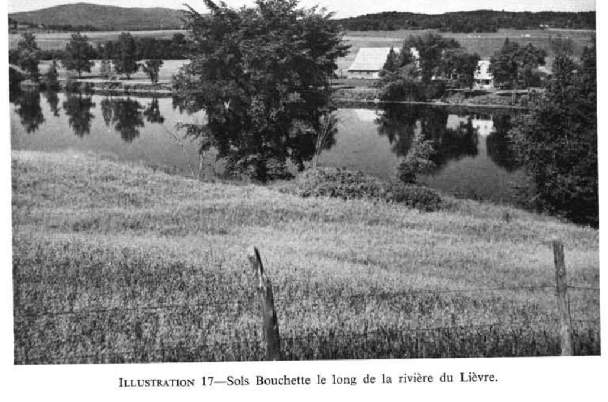
ILLUSTRATION 17—Sols Bouchette le long de la rivière du Lièvre.
aux applications de fumier, de chaux et de fertilisants complets. Il faut protéger ces sols contre l'érosion par l'eau, bien que sous le présent genre d'exploitation cette force destructrice n'agit que modérément.
SÉRIE MONTCERF (Mf)
Les sols Montcerf sont associés aux sols Bouchette et ils sont imparfaitement à quelque peu mal drainés. Dans le comté de Labelle, ces sols couvrent 8,886 acres, sur terrain plat ou légèrement déprimé, à des élévations variant entre 600 et 800 pieds. Les sols Montcerf possèdent un matériau originel laminé mais au contraire des sols Bouchette, leur solum supérieur n'est ni friable, ni perméable. Ces conditions sont défavorables à la distribution de l'eau à travers le sol; l'eau des pluies n'est absorbée que très lentement et les plantes souffrent d'asphyxie si les précipitations sont prolongées. Par ailleurs, l'emmagasinage d'eau n'est pas suffisant pour surmonter les périodes de sécheresse (illustration 18).
La végétation naturelle comprend surtout des conifères parmi lesquels domine l'épinette.
Les sols cultivés ont généralement une surface de loam argilo-limoneux et c'est sous cette classe texturale que toute la série a été cartographiée, bien que de petites étendues de loam et de loam limoneux se rencontrent également. Le sol Montcerf appartient aux gleysols orthiques et possède, à l'état cultivé, les caractéristiques suivantes:
Horizon
Profondeur en pouces
Ap
0 - 7
Loam argilo-limoneux ou parfois loam limoneux brun grisâtre à gris foncé (2.5Y 5/2–10YR 4/1); structure granuleuse instable et tendant à s’agglomérer lorsqu’humide et à se durcir en séchant; friable immédiatement après culture mais devenant ferme avec le temps; pH 5.4 à 6.2.
Bg
7 - 20
Loam argilo-limoneux à loam limoneux gris brunâtre pâle à gris-olive et olive (2.5Y 5/2–6/2 et 5Y 5/2–5/3–6/3) marbrures d’olive pâle et de gris olive pâle (2.5Y 5/4–5Y 6/2; lamelles de 3 à 5mm. d’épaisseur et agrégats polyédriques; très ferme lorsque place mais se brisant facilement sur le plan horizontal lorsque séparé de la masse; structure lamellée s’opposant à la pénétration de l’air, de l’eau et des racines; pH 5.7 à 7.1.
Cg
20+
Loam argilo-limoneux à argile limoneuse ou parfois loam argileux gris-olive (5Y 5/2) avec marbrures olive pâle (2.5Y 5/4); structure lamellée s’opposant au mouvement de l’eau et des racines; lamelles de 2 à 8mm. d’épaisseur et de couleur variable; très ferme; pH 6.6 à 7.1.
A l’état naturel, on trouve sous la couche organique de surface (L-H, Ah) une couche faiblement éluviée (Aejg) de 1 à 4 pouces formée de sol gris-olive à gris-olive pâle et tachetée de blanc (10YR 8/1).
Utilisation
Les sols Montcerf sont presque tous utilisés pour la grande culture. Ils ont une bonne fertilité mais sont difficiles à cultiver. Un drainage adéquat est nécessaire pour la production de bonnes récoltes; sur beaucoup de fermes, le système de drainage établi est inadéquat pour la plupart des cultures. A cause du manque de perméabilité du sol, presque toute l’eau de précipitation doit s’écouler en surface ou s’évaporer. Le labour en planches bombées facilite l’élimination de l’excès d’eau, mais il paraît impossible d’améliorer à la fois le drainage de surface et l’emmagasinage de l’eau sans corriger la structure du sous-sol. L’usage d’instruments capables de briser les stratifications du sous-sol jusqu’à environ 18 pouces augmenterait l’emmagasinage de l’eau utilisable et permettrait une plus profonde pénétration des racines.
Le bas pourcentage de matière organique dans les sols Montcerf est partiellement responsable de la mauvaise structure de la couche cultivée. Cette couche tend à revenir à une consistance dure et massive même après avoir été bien effritée par les travaux de culture. Les amendements organiques aident à corriger cette condition et à maintenir une structure granulaire.
Le chaulage est nécessaire pour améliorer la réaction de ce sol acide et favoriser une meilleure croissance des cultures et plus spécialement des trèfles. La luzerne ne pousse pas bien sur ce terrain dont le sous-sol manque de drainage et d’aération.
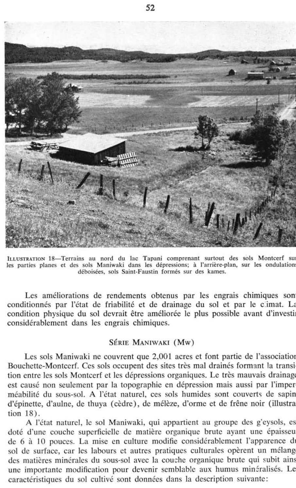
ILLUSTRATION 18 — Terrains au nord du lac Tapani comprenant surtout des sols Montcerf sur les parties planes et des sols Maniwaki dans les dépressions; à l'arrière-plan, sur les ondulations déboisées, sols Saint-Faustin formés sur des kames.
Les améliorations de rendements obtenus par les engrais chimiques sont conditionnés par l'état de friabilité et de drainage du sol et par le climat. La condition physique du sol devrait être améliorée le plus possible avant d'investir considérablement dans les engrais chimiques.
SÉRIE MANIWAKI (Mw)
Les sols Maniwaki ne couvrent que 2,001 acres et font partie de l'association Bouchette-Montcerf. Ces sols occupent des sites très mal drainés formant la transition entre les sols Montcerf et les dépressions organiques. Le très mauvais drainage est causé non seulement par la topographie en dépression mais aussi par l'imperméabilité du sous-sol. A l'état naturel, ces sols humides sont couverts de sapin, d'épinette, d'aulne, de thuya (cèdre), de mélèze, d'orme et de frêne noir (illustration 18).
A l'état naturel, le sol Maniwaki, qui appartient au groupe des g'eysols, est doté d'une couche superficielle de matière organique brute ayant une épaisseur de 6 à 10 pouces. La mise en culture modifie considérablement l'apparence du sol de surface, car les labours et autres pratiques culturales opèrent un mélange des matières minérales du sous-sol avec la couche organique brute qui subit ainsi une importante modification pour devenir semblable aux humus minéralisés. Les caractéristiques du sol cultivé sont données dans la description suivante:
Horizon
Profondeur en pouces
Ap
0 – 7
Loam argilo-limoneux brun grisâtre très foncé (2.5Y 3/2); moyenne structure granuleuse; friable; légèrement plastique lorsqu'humide; pH 6.0 à 6.3.
Aejg
7 – 9
Loam argilo-limoneux gris à gris foncé (5Y 5/1–4/1); agrégats polyédriques subanguleux parmi des matériaux lamellés et massifs; légèrement plastiques et collant lorsqu'humide; ferme lorsque sec; pH 6.4 à 6.8.
Bg
9 – 20
Loam argilo-limoneux à argile limoneuse gris à gris-olive pâle (5Y 6/1–6/2); quelques marbrures de brun vif (7.5YR 5/5–5/8); structure et consistance comme dans Aejg; pH 6.6 à 6.9.
Cg
20+
Loam argilo-limoneux à argile limoneuse gris-olive à olive pâle (5Y 5/2–2.5Y 5/4); matériaux massifs et lamellés; légèrement plastique et collant; imperméable; pH 6.8 à 7.2.
Utilisation
Près de la moitié des sols Maniwaki sont utilisés pour la grande culture, plus particulièrement le foin et le pâturage. A cause du réchauffement lent et du mauvais drainage, le terrain est peu utilisé pour les grains. Les prairies et les pâturages sont souvent infestés de mauvaises herbes hydrophiles qui ne peuvent être éliminées que par un meilleur drainage. L'alpiste roseau est le fourrage le mieux adapté aux conditions naturelles de drainage.
L'effet du chaulage et de l'application des engrais chimiques n'est pas connu. Le contenu en matière organique est apparemment adéquat mais la décomposition est lente à cause du manque de drainage et d'aération. Conséquemment, le fumier ne peut profiter autant au sol Maniwaki qu'aux sols bien drainés.
SÉRIE PONTIAC (Pc, Pch, PcI)
Les sols Pontiac occupent respectivement 40,182 acres et 3,655 acres dans les comtés de Papineau et de Hull. On les rencontre principalement à des élévations variant entre 350 et 550 pieds, le long des petites vallées qui débouchent dans la plaine outaouaise (illustration 19). Ces sols se sont formés à même de minces dépôts loameux recouvrant les argiles. Les matériaux loameux de surface donnent aux sols Pontiac une variation de texture allant du loam au loam limoneux et au loam argilo-limoneux. La gradation continuelle dans la texture depuis l'argile jusqu'au loam superficiel indique une continuité de sédimentation mais sous des conditions très différentes. Les matériaux loameux de surface ont vraisemblablement été déposés dans des eaux peu profondes et agitées tandis que l'argile s'est sédimentée dans des eaux profondes et calmes. Une plus grande épaisseur de matériaux loameux à proximité des collines suggère qu'une partie du loam de surface a été tiré des collines de till environnantes.
Les sols Pontiac sont bien drainés, exempts de pierres et se trouvent sur pentes douces, unies ou convexes. Leur solum est très perméable et peut absorber rapidement la précipitation normale de la saison de végétation. Lorsque le sol est gelé et imperméable, le ruissellement augmente et peut être cause d'érosion considérable durant les pluies abondantes et lors de la fonte des neiges. La bonne distribution de l'eau dans le sol est favorisée par la gradation de texture entre la surface loameuse et le sous-sol argileux.
Les sols Pontiac et Dalhousie sont souvent réunis dans une même unité cartographique. De façon générale, les sols Pontiac ont une texture plus grossière que
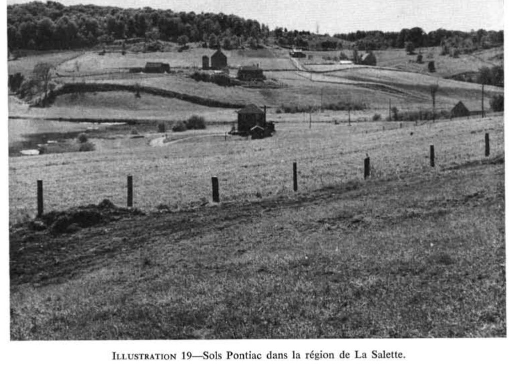
ILLUSTRATION 19 — Sols Pontiac dans la région de La Salette.
les sols Dalhousie. Les quelques boisés qui se rencontrent encore sur les sols Pontiac sont constitués d'érable rouge, d'érable à sucre, de bouleau blanc, de pin blanc, de sapin, de pruche, d'orme et de hêtre.
La série Pontiac comprend trois types dont le loam (Pcl), le loam argileux (Pch) et le loam limoneux à argilo-limoneux (Pc). Ces deux dernières classes texturales réunies sous une même unité (Pc) couvrent la très grande majorité des sols de la série. La couche cultivée des sols Pontiac se compose de 20 à 30 p. cent de sable, de 40 à 60 p. cent de limon et d'environ 20 p. cent d'argile.
Les quelques sites naturels encore existants indiquent qu'il convient de classer les sols Pontiac parmi les sols bruns boisés acides dégradés. La description suivante donne les caractéristiques du loam limoneux cultivé :
Horizon
Profondeur en pouces
Ap
0 — 8
Loam limoneux à argilo-limoneux brun grisâtre foncé à brun foncé; fine structure granuleuse; très friable et perméable; pH 5.1 à 6.0.
Bf
8 — 12
Loam limoneux à argilo-limoneux brun à brun jaunâtre foncé (10YR 4/4–5/3 ou 7.5YR 4/4); fine structure granuleuse; très friable et perméable; couleur plus foncé dans la partie supérieure de l'horizon et gradation en couleur, texture et structure vers l'horizon sous-jacent; couleur olive (2.5Y-5Y 4/4) et faibles marbrures brunes souvent observées dans la zone de transition vers l'horizon inférieur; pH 5.1 à 6.2.
Horizon
Profondeur en pouces
II C 1
12 – 24
Loam argileux à argile brun grisâtre (2.5Y 5/2); structure polyédrique sub-anguleuse, modérément fine à moyenne; ferme et modérément perméable; pH 5.6 à 6.8.
II C 2
24+
Argile gris-olive (5Y 5/2); structure polyédrique grossière à massive ou lamellée; légèrement perméable; pH 6.8 à 7.2.
Utilisation
Presque tous les sols Pontiac sont en culture et supportent des récoltes de grande culture et des fourrages pour les animaux laitiers. Le terrain est adapté à une grande variété d'usages. La fertilité naturelle qui est passable à bonne, peut encore être relevée. Le chulage est nécessaire pour la plupart des cultures mais spécialement pour les légumineuses. De bonnes récoltes de luzerne et d'autres légumineuses sont possibles sur ce sol modérément bien aéré.
La forte teneur en limon dans le sol de surface rend le terrain très mou et inapte à supporter la machinerie très lourde ou le piétinement des animaux, durant la période humide du printemps. La surface du sol devient susceptible à l'érosion par l'eau lorsqu'elle est gelée ou pleinement saturée d'eau. Durant la saison de végétation, le danger d'érosion est faible si l'on a soin de ne pas disposer les cultures sarclées de haut en bas des pentes.
Le rendement des récoltes varie dans de grandes limites selon le mode d'exploitation et l'usage de la chaux, du fumier et des engrais chimiques.
Série Chapeau (Cp)
Les sols Chapeau couvrent 1,304 acres. On les trouve presque exclusivement dans la région de La Salette, le long de la Lièvre. Ces sols se sont formés sur des argiles de nature généralement lamellée, ont une topographie ondulée favorisant un rapide ruissellement des eaux.
Presque tout le terrain est en culture. Dans les petites étendues encore à l'état naturel, le profil est coiffé de 1 à 2 pouces d'humus assez brut d'un gris ou d'un brun très foncé. Sous l'humus se trouve un horizon éluvié (Ae) gris brunâtre de 2 à 5 pouces d'épaisseur qui à son tour repose sur une argile légèrement plus colorée et de texture légèrement plus lourde que dans l'horizon supérieur ou inférieur. Ces caractéristiques qui suggèrent une évolution vers les sols boisés gris sont cependant peu apparentes en certains endroits. A l'état cultivé, le sol Chapeau possède les caractéristiques suivantes:
Horizon
Profondeur en pouces
Ap
0 – 7
Argile limoneuse à argile, grise à brun grisâtre foncé (2.5Y 4/2–5/1); structure granuleuse et polyédrique sub-anguleuse; très ferme à l'état sec et collante à l'état mouillé; pH 5.3 à 5.5.
AB
7 – 13
Argile à argile limoneuse, brun grisâtre (2.5Y 5/2); structure polyédrique sub-anguleuse, moyenne à grossière; dure à l'état sec et plastique à l'état humide; pH 5.5 à 5.7.
Bt
13 – 17
Argile brun grisâtre ou brun grisâtre foncé (10YR 4/2-5/2); moyenne structure polyédrique, très dur à l'état sec et plastique à l'état humide; pH 5.5 à 5.8.
Horizon
Profondeur en pouces
BC
17 – 24
Argile brun grisâtre à brun grisâtre foncé (2.5Y 5/2-4/2); parfois lamellée; pH 5.8 à 6.2.
C
24+
Argile brun grisâtre à brun grisâtre pâle (2.5Y 5/2-6/2); parfois massive et de couleur uniforme et parfois lamellée avec des tons de pâle et de foncé parmi les lamelles; pH 6.8 à 7.2.
Utilisation
Les sols Chapcau servent à la grande culture et produisent des rendements passables lorsque les pluies sont modérées et bien distribuées, mais parfois les sécheresses limitent les récoltes.
La couche de sol cultivée est pauvre en matière organique et difficile à travailler. Il n'y a qu'une très étroite marge d'humidité du sol permettant à la fois de cultiver avec assez de facilité et de maintenir une bonne structure. Le taux d'augmentation des rendements dû à l'application de chaux et d'engrais chimiques ne nous est pas connu.
SÉRIE DALHOUSIE (D)
Les sols Dalhousie couvrent 10,650 acres dans le comté de Papineau et 1,589 acres dans le comté de Hull. Ces sols se rencontrent dans la vallée de l'Outaouais ou le long des petites vallées qui débouchent sur l'Outaouais. Le terrain est généralement en pente très douce, à partir des collines bordant les vallées jusqu'à un cours d'eau, ou un ravin, généralement situé à mi-chemin entre les collines.
Parce que le terrain est uni et en pente douce, le ruissellement des eaux de précipitation s'y produit sans causer d'érosion sérieuse. Par ailleurs, ces conditions permettent au sol d'absorber la préciptation et de la retenir efficacement sans permettre d'accumulation excessive d'humidité. La bonne structure du sol permet également une aération passable.
Les sols Dalhousie ont une texture de loam argileux en surface (D) et appartiennent aux gleysols humiques, orthiques. La description suivante est celle du loam argileux cultivé.
Horizon
Profondeur en pouces
Ap
0 – 8
Loam argileux brun grisâtre très foncé (10YR 3/2); structure granuleuse; ferme, modérément plastique et collante à l'état humide; pH 5.3 à 6.3.
Bg
8 – 30
Argile limoneuse à argile, brun grisâtre foncé à gris-olive ou gris-olive foncé (2.5Y–5Y 4/2–5/2); structure polyédrique sub-anguleuse fine et moyenne; fines marbrures à l'intérieur des agrégats, marbrures faibles ou absentes à l'extérieur des agrégats (les coupes apparaissent marbrées); fermes agrégats; plastique et collante à l'état humide; pH 6.2 à 7.0.
Cg
30+
Argile gris-olive à gris foncé (5Y 5/2–4/1); structure polyédrique assez bien développée ou parfois lamellée; plastique et collante à l'état humide; pH 6.4 à 7.4.
Utilisation
Presque tous les sols Dalhousie sont cultivés et produisent des récoltes de grande culture: grain, foin maïs, racines fourragères et pâturage. Exempts de
pierres et généralement faciles à drainer, ils sont excellents pour l'agriculture. Une forte capacité de rétention d'eau et une structure granuleuse favorisent un excellent système radiculaire et leur permettent de résister aux sécheresses mieux que tous les autres sols de la région.
Les sols Dalhousie sont parmi les plus productifs pour les céréales, le foin et le pâturage. La luzerne pousse assez bien, mais il y aurait lieu d'en augmenter la longévité par le choulage et le drainage. Le sol possède une bonne fertilité naturelle qu'il est facile de maintenir ou d'augmenter par des doses modérées d'engrais chimiques complets, de fumier et de chaux. L'effet des fertilisants et des amendements est de longue durée car le sol retient bien les éléments qui lui sont ajoutés.
Série Brandon (B)
Les sols Brandon occupent 2,684 acres, surtout dans le comté de Papineau, et se sont formés sur des dépôts argileux souvent lamellés. Leur drainage naturel est mauvais à cause d'un relief uni ou légèrement déprimé et d'une percolation très lente des eaux à travers les matériaux de fine texture.
La série ne comprend qu'un seul type, l'argile, et appartient aux gleysols humiques, orthiques. La description suivante donne les caractéristiques du profil de sol cultivé.
Horizon
Profondeur en pouces
Ap
0 – 7
Argile à argile limoneuse brun grisâtre très foncé (2.5Y–10YR 3/2); structure polyédrique et granulaire, agrégats moyens et fermes; pH 5.4 à 6.4.
Bg 1
7 – 12
Argile à argile limoneuse gris brunâtre pâle (2.5Y 6/2) quelque peu marbrée; structure polyédrique ou en pseudo-plaques; pH 5.4 à 6.4.
Bg 2
12 – 30
Argile grise à gris-olive (5Y 4/2–5/1); marbrures brun jaunâtre foncé (10YR 4/4); parfois lamellée et parfois dotée d'une structure polyédrique sub-anguleuse assez bien formée; plastique et collante à l'état humide; pH 5.6 à 6.6.
Cg
30+
Argile grise (5Y 5/1) généralement lamellée; lamelles d'environ 4 mm d'épaisseur et souvent séparées par du limon; pH 6.8 à 7.2.
Utilisation
Tous les sols Brandon sont cultivés et servent aux pâturages et aux récoltes de grande culture. Ils ont une bonne fertilité; ils sont plats et exempts de pierres.
Le choulage apporte généralement une importante amélioration. Le succès des cultures dépend largement de l'efficacité du drainage artificiel. L'élimination des eaux de surplus est difficile à cause de la basse position du terrain qui reçoit tout le drainage des hautes terres environnantes.
Les sols Brandon ne conviennent pas bien aux plantes à racines profondes; la luzerne n'est cultivée qu'en mélange avec le trèfle; elle a tendance à disparaître graduellement et doit être souvent réensemencée.
Série Rideau (Ri, Ril)
Les sols Rideau occupent 13,822 acres dans les comtés de Hull et de Papineau, en bordure de la rivière Outaouais. Ces sols sont légèrement ondulés et
souvent découpés par des ravins. Ils se sont formés sur d'épais dépôts marins d'argile généralement uniforme et dépourvue de varves ou lamelles (illustration 20).
Dans les sols Rideau, les conditions d'humidité sont plutôt complexes à cause de la haute capacité de rétention d'eau du sol, de la lenteur des échanges et des phénomènes d'expansion et de contradiction qui affectent le taux d'infiltration. Après la fonte des neiges, il y a généralement excès d'humidité, l'expansion de l'argile est à son maximum et l'aération est réduite au minimum. Dans cet état, le sol ne peut plus absorber d'eau et presque toute la pluie qui y tombe doit ruisseler à la surface et peut causer de l'érosion. Une fois mouillé, le sol ne perd son humidité que très lentement à cause de la mauvaise structure et du manque d'aération interne. Cette perte d'humidité se fait surtout par évaporation. En séchant, le sol se contracte, se fendille et se durcit. Le sol séché n'absorbe l'eau que très lentement et souvent la pluie des brèves averses d'été s'évapore et ruisselle au loin sans atteindre les racines des plantes. Ceci explique pourquoi les sols Rideau souffrent de sécheresse alors que d'autres sols environnants sont adéquatement pourvus d'humidité. Sur les sols Rideau on constate fréquemment de l'érosion en plaques, en rigolets et en ravins.
Les sols Rideau ont un profil peu développé qui peut être classé parmi les régosols déorciques. La série comprend deux types: l'argile (Ri) et le loam ar-
ILLUSTRATION 20 — Sols Rideau dans la région de Masson.
gileux (Ril). L'argile est le type principal et offre, à l'état cultivé, les caractéristiques suivantes:
Horizon
Profondeur en pouces
Ap
0 - 7
Argile brun grisâtre (10YR–2.5Y 5/2); structure granuleuse et polyédrique sub-anguleuse; ferme à dure sous les conditions moyennes d'humidité; plastique et collante lorsque très humide; tendant à se former en mottes dures; modérément perméable et aérée sous les conditions d'humidité moyennes; pH 5.5 à 6.2.
Cgj 1
7 - 9
Argile gris-olive à gris brunâtre pâle (5Y 5/2–2.5Y 6/2); faibles marbrures; pH 5.5 à 6.0.
Argile gris-olive à gris brunâtre (5Y–2.5Y 5/2); faibles marbrures; très mal aérée, peu perméable, plastique et collante à l'état humide; modérément aérée et perméable à l'état sec ou peu humide; structure polyédrique; pH 5,8 à 6.4.
Cgj 2
9 - 24
C
24+
Argile gris-olive à grise (5Y 4/2–5/1); structure massive à l'état humide; rétrécissement important au séchage et formation de larges cubes; pH 6.6 à 7.3.
Utilisation
Les sols Rideau sont tous en culture. Ils conviennent bien aux foins, aux grains et aux pâturages, mais non aux vergers, aux pommes de terre et au jardinage. Le sol de surface contient peu d'humus et pour cette raison il est plus difficile à cultiver que le sol Sainte-Rosalie ou le sol Laplaine.
Bien que difficile à établir, la luzerne rend bien lorsque le sol a été chaulé, aéré et fertilisé. Une fois établie cette plante résiste aux sécheresses de l'été, se nourrit des réserves minérales inutilisées du sous-sol argileux et demande peu de fertilisation additionnelle.
Pour la plupart des récoltes, c'est la chaux, le fumier et le phosphore qui donnent les meilleures augmentations de rendement. Lorsque le fumier n'est pas disponible il faut appliquer de l'azote pour la plupart des cultures à l'exception des luzernières bien établies.
La bonne préparation du terrain pour les semis demande un soin particulier. Lorsque le terrain est travaillé à l'état trop humide, il se forme des grosses mottes dures. D'autre part, quand le terrain est trop sec les mottes résistent à la fragmentation et les travaux de culture demandent une traction considérable.
Il faut prévenir le ravinement qui tend à se produire le long des rigoles et des fossés. Si on tolère un début d'érosion le long des berges où les sols Rideau sont situés, il sera très difficile de l'arrêter. Pour prévenir le ravinement, il faut maintenir engazonnés les rebords des champs surplombant des escarpements et éviter d'utiliser les pentes raides pour les récoltes cultivées, ou d'y faire déboucher directement les rigoles d'égouttement.
SÉRIE SAINTE-ROSALIE (R, Rl, Rh)
Les sols Sainte-Rosalie couvrent 13,742 acres et 9,568 acres dans les comtés de Papineau et de Hull respectivement. Ils se rencontrent le long de la rivière Outaouais à des élévations allant de 150 à 350 pieds. Le terrain est plat et
dépourvu de pierres (illustration 21). Le profil s'est formé sur d'épais dépôts marins d'argile grise. A cause du manque de pente, le ruissellement est très lent. L'argile massive ne permet qu'une percolation interne excessivement lente. Il en résulte un drainage lent. Par ailleurs, la topographie plane favorise la pénétration de la pluie dans le sol et contribue ainsi à une excellente utilisation de l'humidité durant les périodes de sécheresse. Au point de vue de l'économie de l'eau du sol, les sols Sainte-Rosalie ont donc un grand avantage sur les sols Rideau.
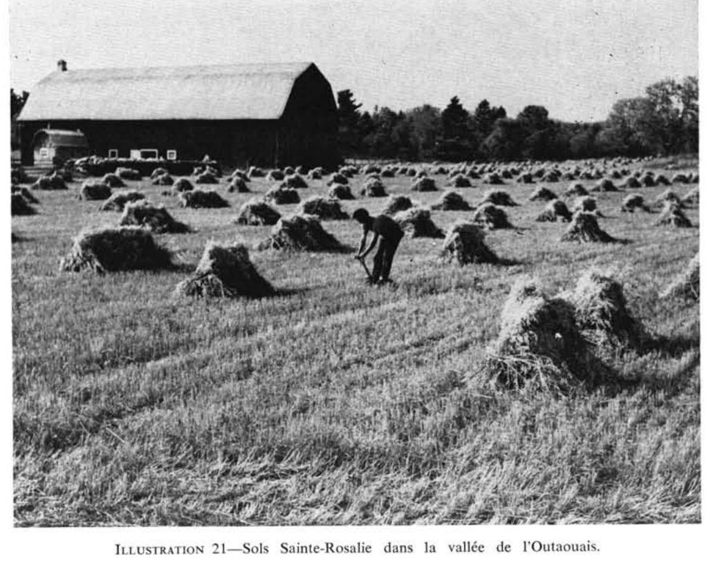
ILLUSTRATION 21 — Sols Sainte-Rosalie dans la vallée de l'Outaouais.
La série Sainte-Rosalie appartient aux gleysols humiques, orthiques et comprend trois types: l'argile (R), l'argile lourde (Rh) et le loam argileux (Rl). L'argile est le type dominant et les deux autres types n'occupent que de petites étendues. La seule différence entre ces trois types réside dans la texture de la couche arable. Cependant, il convient de noter que les marbrures où la couleur rouille du sous-sol sont plus intenses dans le loam argileux que dans l'argile, et dans l'argile plus que dans l'argile lourde. La description suivante est celle de l'argile (R) à l'état cultivé.
Horizon
Profondeur en pouces
Description
Ap
0 – 8
Argile brun grisâtre très foncé (10YR 3/2); structure moyenne, granuleuse; ferme à l'état sec, modérément plastique et collante à l'état humide; perméable et aérée; pH 5.5 à 6.0.
Horizon
Profondeur en pouces
Btg
8 – 18
Argile brune (rouillée) (7.5YR 4/4); marbrures moyennes et distinctes de brun grisâtre (2.5Y 5/2); fins agrégats polyédriques difficiles à séparer; plastique et collante à l'état humide; normalement mal aérée; pH 5.5 à 6.3.
Cg 1
18 – 24
Argile grise (5Y 5/1); larges marbrures distinctes de brun jaunâtre foncé (10YR 4/4); agrégats polyédriques fins à moyens se séparant assez aisément; très plastique et très collante à l'état humide; pH 6.5 à 6.8.
Cg 2
24+
Argile grise, marbrée de brun grisâtre foncé (2.5Y 4/2); structure massive ou polyédrique grossière; très plastique et très collante; pH 6.7 à 7.3.
Utilisation
Les sols Sainte-Rosalie sont tous en culture et employés pour les grandes cultures et les pâturages. Les caractéristiques les plus désirables de ce terrain sont la topographie plane, l'absence de toute pierre, la présence d'un horizon superficiel humifère et bien granulé, la facilité de cultiver et de maintenir une bonne structure et enfin la haute fertilité naturelle. Cependant, la couche rouillée en-dessous de la surface organique, possède une structure massive qui empêche le libre passage de l'eau, de l'air et des racines.
C'est le sol Sainte-Rosalie qui, dans le passé, a largement servi aux récoltes de grain et de foin. Tout en résistant à maints abus, le sol a parfois perdu de sa fertilité au point de réduire les rendements à un niveau non-profitable. Heureusement, la fertilité du sous-sol a été à peine attaquée par les plantes à racines superficielles cultivées dans le passé. Cette richesse pourra être rendue accessible aux plantes à racines profondes par un meilleur drainage artificiel, par le chaulage et au besoin par le défoncement du sous-sol en vue de faciliter l'aération.
Cette abondance d'éléments nutritifs dans le sous-sol permet d'augmenter les rendements des récoltes simplement en approfondissant la zone où les plantes s'alimentent. Le moyen le plus efficace pour atteindre cet objectif est le drainage souterrain. Comme solution de rechange, le labour en planches bombées a amélioré les drainages externe et interne au point de permettre la culture de la luzerne.
La chaux aide à corriger les conditions physiques, à neutraliser l'acidité de la couche arable et contribue à l'augmentation des rendements. Après le drainage, l'aération du sous-sol et le chaulage, le phosphore constitue le plus avantageux apport aux sols Sainte-Rosalie. Le faible contenu en phosphore assimilable du sol Sainte-Rosalie est dû, comme dans les autres sols de la région, au prélèvement continu fait par les récoltes et à une fertilisation inadéquate.
SÉRIE LAPLAINE (Lp)
Le sol Laplaine forme le membre mal drainé de l'association Rideau et Sainte-Rosalie. Il couvre 898 acres.
Le profil formé d'argile marine grise, s'est constitué dans des conditions de drainage stagnant sur un terrain légèrement déprimé et complètement dépourvu de pierres. La végétation naturelle se compose surtout de thuyas (cèdres), de frênes et d'ormes.
La série Laplaine appartient aux gleysols humiques, orthiques. A l'état naturel, le sol est généralement recouvert d'une couche tourbeuse de plusieurs pouces d'épaisseur. Cette couche est graduellement incorporée au sol minéral lorsque le terrain est mis en culture. Dans les conditions moyennes, le sol cultivé a les caractéristiques suivantes:
Horizon
Profondeur en pouces
Ap
0 - 8
Argile noire (5YR 2/1) de haute teneur organique; agrégats granuleux et polyédriques sub-anguleux; un peu ferme sous humidité moyenne; légèrement plastique et collante à l'état très humide; perméable; pH 5.8 à 6.7.
Bg
8 - 12
Argile lourde, grise (5Y 5/1); fines marbrures brun jaunâtre (2.5Y 5/4); faible structure polyédrique grossière; très dure à l'état sec, très plastique et collante à l'état très humide; mal aérée et peu perméable; pH 6.2 à 6.8.
Cg
12+
Argile grise et gris olive (5Y 5/1-5/2); faibles marbrures olive (5Y 5/3); structure polyédrique grossière à la partie supérieure passant à une structure massive en profondeur; non aérée; collante et plastique; présence occasionnelle de carbonates libres; pH 7.0 à 7.6.
Utilisation
Parmi les sols argileux de la vallée de l'Outaouais, les sols Laplaine furent les plus récents à être exploités, car leur mise en culture a nécessité d'importants travaux de drainage. Leur grande réserve de fertilité est due à leur haute teneur en matière organique et à la faible éluviation subie. Cependant, cette fertilité ne peut se traduire en bons rendements que si l'on réalise un bon drainage et une bonne aération du sous-sol. Il est bon d'amener le sous-sol minéral à se mélanger à la matière organique de surface. Cette opération améliore les propriétés physiques et chimiques de la surface. A l'état naturel, la surface est riche en azote total mais pauvre en phosphore et en potassium. Ce déséquilibre cause la maturité tardive et la verse des céréales. Le fumier, même à doses massives, ne peut rétablir l'équilibre entre ces trois principaux éléments nutritifs; il faut recourir aux fertilisants chimiques riches en phosphore et en potassium. Le chalandage peut ou non être nécessaire selon la réaction de la surface cultivée.
Les sols Laplaine sont utilisés pour les pâturages et les récoltes de grande culture. Le maïs à ensilage y est rarement cultivé et la fléole (mil) et autres herbes conviennent mieux que les céréales et les légumineuses.
SÉRIE WENDOVER (W)
Les sols Wendover se rencontrent exclusivement le long de la vallée de l'Outaouais et occupent 1,684 acres dans le comté de Papineau. Ils se sont formés sur une argile brune qui apparaît sous forme de couches plus ou moins épaisses parmi l'argile marine grise. L'argile brune se rencontre normalement aux niveaux inférieurs de la vallée, où l'argile grise a été érodée par les eaux de la rivière. Des bandes d'argile grise peuvent se rencontrer dans le matériau originel des sols Wendover, mais les mélanges intimes d'argiles grise et brune, dus à des glissements de terrain, ne sont pas inclus dans cette série.
Les sols Wendover ont un relief ondulé où le ruissellement des eaux de précipitation est assez rapide, alors que l'infiltration à travers le sol est très lente.
à cause de la nature massive de l'argile. La série appartient aux régosols déor-ciques et ne comprend qu'un type: l'argile (W) qui, à l'état cultivé, possède les caractéristiques suivantes:
Horizon
Profondeur en pouces
Ap
0–8
Argile brun foncé (7.5YR 4/2); structure polyédrique anguleuse ou sub-anguleuse (parfois en mottes très dures); très dure à l'état sec et très collante et très plastique à l'état humide; pH 5.5 à 6.3.
C 1
8–14
Argile brune à brun rougeâtre (5YR 5/3); faibles mouchetures de gris rougeâtre (5YR 5/2); structure polyédrique anguleuse, fine et faiblement développée; très dure à l'état sec, très collante et très plastique à l'état humide; pH 6.0 à 6.4.
C 2
14+
Argile lourde, brun rougeâtre ou couches d'argile brune et d'argile grise; pH 6.8 à 7.3.
Utilisation
Les sols Wendover sont entièrement en culture. L'agriculture qu'on y pratique est surtout basée sur l'élevage des bovins laitiers et de boucherie. Le terrain est très difficile à travailler et doit être cultivé lorsque ni trop sec ni trop humide. La bonne préparation du sol pour l'ensemencement et les rendements des récoltes dépend considérablement des conditions climatiques. Cependant, en dépit de conditions physiques défavorables, ces sols produisent de bonnes récoltes.
SÉRIE BEARBROOK (Bb)
Les sols Bearbrook sont associés aux sols Wendover et couvrent 1,378 acres dans le sud du comté de Papineau. Le terrain est plat et très imparfaitement drainé, à cause de l'absence de ruissellement et du faible mouvement d'infiltration des eaux à travers l'argile massive.
La série Bearbrook appartient aux gleysols humiques orthiques et ne comprend qu'un seul type, l'argile (Bb). En terrain cultivé, ce sol offre les caractéristiques suivantes:
Horizon
Profondeur en pouces
Ap
0–8
Argile brun grisâtre foncé (10YR 4/2); structure granuleuse; très ferme à l'état sec et très plastique à l'état humide; pH 5.5 à 6.5.
Btjg
8–26
Argile à argile lourde mouchetée de brun rougeâtre et de brun grisâtre (5 YR 4/3–10YR 5/2); fine structure polyédrique anguleuse, faiblement développée; dure à l'état sec, collante et plastique à l'état humide; pH 6.0 à 7.0.
C
26+
Argile à argile lourde, brun rougeâtre (5YR 5/3); structure massive ou polyédrique anguleuse peu développée et grossière; très plastique et collante à l'état humide; pH 7.0 à 7.6.
Utilisation
Les sols Bearbrook sont utilisés pour l'élevage des bovins laitiers et de boucherie et pour les récoltes de grande culture comme le trèfle, la fléole (mil), l'avoine et le maïs (illustration 22). Comme les sols Wendover, ils possèdent des qualités physiques indésirables, quoiqu'à un degré moindre, à cause d'une plus forte teneur en humus. Par ailleurs, le manque de relief rend difficile l'écoulement
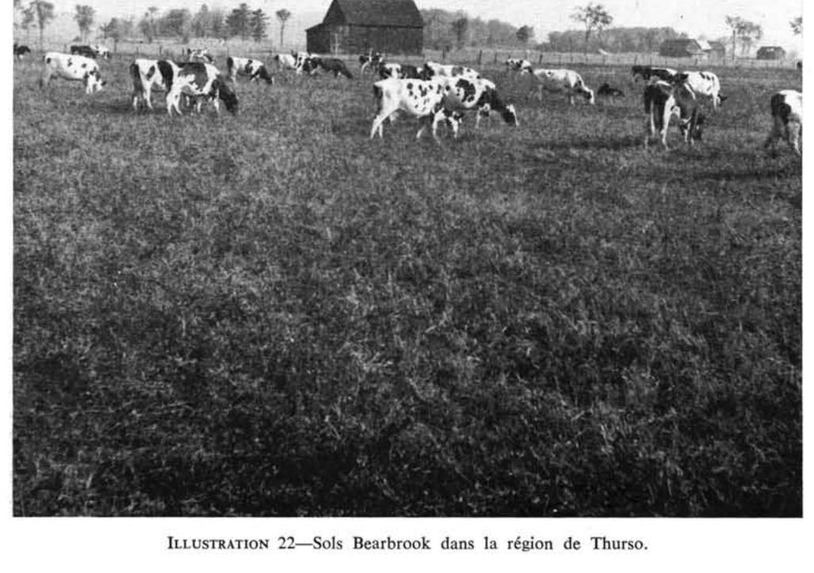
Illustration 22 — Sols Bearbrook dans la région de Thurso.
des eaux de surplus. Aux périodes pluvieuses, l'excès d'humidité peut retarder l'exécution des travaux d'ensemencement et de récolte, ou réduire le rendement des cultures.
Sols sur des sédiments sableux
SÉRIE MORIN (Mo, Moc, MOL)
Les sols Morin occupent 42,863 acres dans le comté de Labelle et 48,654 acres dans Papineau. On les rencontre à des élévations de 400 à 900 pieds, sur du terrain uni ou légèrement ondulé. Leur matériau originel est le sable moyen ou grossier du fond des vallées des Laurentides ou de la bordure de la vallée de l'Outaouais. Ce sable est dérivé des assises précambriennes de nature quartzitique, gneissique et granitique. On y trouve ni cailloux ni grosses pierres, mais parfois une faible proportion de gravier. La fraction sable comprend généralement 50 à 70 pour cent de particules grossières et moyennes. Le drainage excessif du sol résulte de la perméabilité de ce matériau originel sableux et de son épaisseur qui dépasse souvent 10 pieds.
Les sites boisés sont couverts surtout de pin blanc, de pin rouge, d'épinette blanche, de sapin et de pruche, mais on y voit aussi le bouleau blanc, le bouleau jaune et l'érable à sucre.
Les trois types cartographiés dans la série Morin sont le sable (Mo), le sable grossier (Moc) et le sable loameux (Mol). Ces différences de texture du sol
de surface n'affectent en rien l'apparence du profil. La série Morin appartient aux podzols orthiques. Les caractéristiques du profil sont indiquées dans la description suivante du sable loameux, à l'état cultivé.
Horizon
Profondeur en pouces
Ap
0 – 6
Sable loameux brun à brun foncé (10YR 4/3 7.5YR 3/2); structure monogranulaire et fins granules; lâche; très perméable; pH 5.0 à 5.3.
Ae
6 – 8
Couche grise, éluviée.
Bfh
8 – 18
Sable brun vif à rouge jaunâtre (7.5YR 5/8–5YR 4/8); avec parfois un peu de gravier distribué à travers tout l'horizon; structure monogranulaire; très lâche, très ouvert et très perméable; pH 5.2 à 5.5.
Bf 1
18 – 30
Sable brun jaunâtre (10YR 5/5–5/8), avec parfois un peu de gravier dispersé à travers l'horizon; structure monogranulaire; très lâche, très ouvert et très perméable; pH 5.4 à 5.6.
Bf 2
30 – 45
Sable jaune brunâtre (10YR 5/6–5/8); autres caractéristiques comme dans l'horizon Bf 1.
C
45+
Sable moyen à grossier jaune pâle (10YR 7/4–8/4) avec ou sans lits de gravier; très perméable; pH 5.6 à 6.0.
En forêt, l'horizon Ae est généralement de 1½ à 3 pouces d'épaisseur et est coiffé d'une couche organique (L-H) de 1 à 3 pouces d'épaisseur.
Utilisation
Sur les fermes où de meilleurs sols étaient disponibles, les sables Morin sont généralement demeurés boisés. Là où ils constituaient les seuls terrains dépourvus de pierres, bien drainés et unis, des étendues considérables ont été déboisées. Certaines de ces étendues ont été utilisées pour la culture de la pomme de terre. Cette culture exige un chulage judicieux, basé sur l'analyse du sol, des applications de fumier et d'engrais commerciaux et préférablement aussi l'irrigation. En général, ce n'est qu'en culture intensive qu'on peut maintenir les sols Morin dans un état convenable de productivité. A cause de l'aridité du terrain, les céréales, les fourrages et les pâturages ne peuvent produire convenablement.
SÉRIE DÉLIGNY (DE)
Les sols Déligny couvrent 1,263 acres dans les comtés de Labelle et de Papineau. Leur matériau originel est le même que celui des sols Morin, mais leur drainage est imparfait. Les sols Déligny sont excessivement perméables et sont composés de sable moyen à grossier, contenant parfois une faible proportion de gravier. Le drainage imparfait est dû à une nappe phréatique élevée, laquelle résulte de la faible épaisseur de sable sur des matériaux imperméables comme l'argile et le roc. Le terrain est presque plat. Les sols Déligny ont surtout été cartographiés en complexe avec les sols Morin. Dans l'association naturelle formée par les deux sols, le sol Déligny occupe d'étroites bandes légèrement en dépression parmi le sol Morin qui se situe sur les ondulations bien drainées.
Les sols Déligny appartiennent au groupe de podzols gleyifiés. En forêt, le profil comprend une couche organique (L-H) d'environ 3 pouces d'épaisseur.
surmontant un horizon éluivé (Ae) de couleur grisâtre, de 2 à 4 pouces d'épaisseur qui repose sur l'horizon Bfg. La description suivante est celle du sol à l'état cultivé:
Horizon
Profondeur en pouces
Ap
0 – 6
Sable à sable loameux noir (2.5Y 2/0), riche en matière organique; structure monogranulaire; très perméable; pH 5.0 à 5.4.
Aegj
6 – 8
Sable éluivé brun grisâtre (10YR 5/2), formant des plaques parmi du matériel de même nature que celui décrit plus bas (en Bfg); pH 5.0 à 5.4.
Bfg
8 – 24
Sable grossier et sable moyen brun jaunâtre (10YR 5/4), contenant une faible proportion de gravier; marbrures gris brunâtre; structure monogranulaire; très perméable; pH 5.4 à 5.8.
C
24+
Sable grossier et sable moyen olive pâle (2.5Y 5/4), avec un peu de gravier; structure monogranulaire; très perméable mais manquant d'aération parce que saturé d'eau presque continuellement; pH 5.4 à 5.8.
Utilisation
Les sols Déligny sont partiellement en culture et partiellement boisés. Ils ont une faible fertilité naturelle et doivent être chaulés et fertilisés avec des engrais complets. Ce sont des sols froids contenant un excès d'eau durant une partie de la saison de végétation, surtout durant le printemps. Conséquemment, ils ne peuvent être ensemencés tôt et la pousse printanière débute lentement.
La nappe d'eau peut être abaissée par le drainage artificiel mais cette opération comporte le risque de mettre l'eau hors d'atteinte des plantes.
SÉRIE RIPON (Rn, Rnl)
Les sols Ripon occupent 11,207 acres et 21,853 acres dans les comtés de Labelle et de Papineau respectivement. On les trouve généralement dans les vallées, le long des ruisseaux, sur un terrain plat ou légèrement ondulé (illustration 23). Le matériau originel est un sable loameux, le plus souvent de 4 à 8 pieds d'épaisseur, reposant sur des matériaux de faible porosité comme le limon, l'argile ou des stratifications de sable fin, d'argile et de limon. La fraction sable comprend des proportions à peu près égales de sable fin à très fin et de sable moyen à grossier. Ces matériaux sont poreux, aérés et bien drainés.
La série Ripon appartient aux podzols orthiques et comporte deux types: le sable loameux (Rn) et le loam sableux (Rnl). A l'état cultivé, le sable loameux offre les caractéristiques suivantes:
Horizon
Profondeur en pouces
Ap
0 – 8
Sable loameux brun grisâtre foncé à brun foncé (10YR 4/2-5/3); très fine structure granuleuse parmi les grains de sable; très friable et très perméable; pH 5.4 à 5.6.
Bfh
8 – 14
Sable loameux et sable brun jaunâtre foncé à brun; structure monogranulaire; lâche, ouvert et aéré; pH 5.4 à 5.8.
Bf 1
14 – 24
Sable grossier à très fin, brun jaunâtre pâle à brun pâle ou olive pâle (2.5Y 6/4-5/4); lâche, ouvert et aéré; pH 5.4 à 5.8.
Horizon
Profondeur en pouces
Description morphologique
Bf 2
24 – 38
Sable et sable loameux olive pâle à olive (2.5Y–4/4); avec plaques et bandes de matériel fin; consistance variant de lâche à très ferme; faibles marbrures; modérément perméable; pH 5.6 à 5.8.
C
38+
Stratifications sableuses, limoneuses ou argileuses, grises à gris pâle (10YR 4/1–7/2); l'argile est parfois assez continue et massive au lieu d'être stratifiée; faible perméabilité; pH 5.6 à 6.2.
En forêt, la surface du sol est formée d'une couche organique (L-H) de 2 à 3 pouces d'épaisseur sous laquelle se trouve un horizon minéral grisâtre et éluivé (Ae) mesurant 1½ à 3 pouces et reposant sur l'horizon Bfh décrit plus haut.
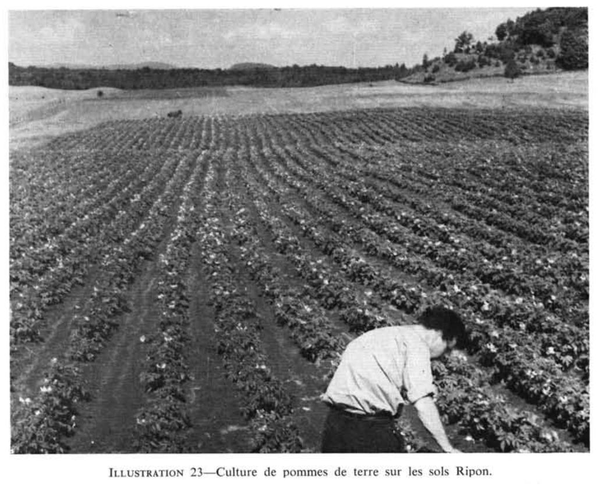
ILLUSTRATION 23 — Culture de pommes de terre sur les sols Ripon.
Utilisation
La plupart des sols Ripon ont été déboisés et sont maintenant utilisés pour la culture générale et certaines cultures spéciales comme les pommes de terre. Parmi les sols très sableux, ils sont les plus productifs. Ceci paraît être dû au bon drainage comme à la profonde aération qui permettent le développement des racines en profondeur, et à un faible mouvement d'eau capillaire qui s'élève jusqu'au sous-sol pour y maintenir une légère humidité.
Horizon
Profondeur en pouces
C 1
18 – 30
Sable fin gris brunâtre pâle (2.5Y 6/2); bien tassé; perméable; pH 5.4 à 5.8.
C 2
30+
Sable fin et sable très fin, olive pâle à gris brunâtre pâle (2.5Y 5/4–6/2); parfois avec minces couches horizontales de texture loameuse ou limoneuse; ferme- ment tassé; perméable; pH 5.6 à 6.2 dans la partie supérieure du matériau originel.
Cette description s’applique aussi au sable loameux lequel cependant possède une texture plus fine dans les 6 à 10 premiers pouces de la surface.
Utilisation
Une grande proportion des sols Ivry ont été mis en culture et sont maintenant utilisés pour la culture générale. Cependant, le peu de fertilité et l'aridité du terrain n'ont permis que de faibles rendements. Une culture intensive, faisant usage d'irrigation et d'assez larges quantités d'engrais, aurait plus de chances de succès.
Les sols Ivry se réchauffent rapidement au printemps et pourraient être préparés et semés beaucoup plus tôt qu'ils ne le sont généralement. Ceci permettrait aux plantes d'utiliser l'humidité disponible au début de la saison de végétation. En certains endroits, des cultures spéciales comme la pomme de terre ont été réussies. Le terrain a besoin d'être chaulé pour corriger l'acidité naturelle et pour fournir le calcium nécessaire aux plantes. Dans une rotation incluant les pommes de terre, le chaulage se fait après la récolte des tubercules. En plus du chaulage et de la fertilisation, le sol doit recevoir une protection adéquate contre l'érosion éolienne, particulièrement dans les champs de grande étendue. Pour réduire la vitesse du vent il faut planter des brise-vent le long des champs. Les superficies les plus susceptibles à l'érosion ne doivent pas être mises en culture ou doivent être reboisées; la forêt qui couvre une grande partie des sols Ivry constitue probablement la meilleure récolte qu'on puisse tirer de ces sols à moins d'y faire une bonne culture intensive.
Série Bevin (Be, Bel)
Les sols Bevin occupent 5,707 acres dans le comté de Labelle et 4,198 acres dans le comté de Papineau, sur terrain plat ou en dépression. Comme les sols Ivry, ils se sont formés sur du sable fin. Le mauvais drainage des sols Bevin est causé par le haut niveau de la nappe d'eau souterraine qui se maintient à quelques pieds de la surface. Ce haut niveau d'eau est maintenu soit par le voisinage immédiat d'un cours d'eau ou d'un lac, soit par une couche imperméable de roc ou de matériel non consolidé à quelques pieds sous la surface du sol.
La végétation forestière se compose surtout d'épinette, de sapin, de thuya (cèdre), de mélèze et de quelques feuillus dont l'érable rouge et l'orme.
La série appartient aux podzols gleyifiés et comprend le loam sableux (Bel) et le sable à sable loameux (Be). À l'état cultivé, ce dernier type possède les caractéristiques suivantes:
Horizon
Profondeur en pouces
Ap
0 – 6
Sable loameux ou sable gris très foncé (5YR 3/1); fins granules parmi les grains de sable; très perméable; pH 5.0 à 5.4.
Horizon
Profondeur en pouces
Ac
6 – 7
Sable fin loameux, gris; à l'état naturel cette couche a 2 à 4 pouces d'épaisseur.
Bfg 1
7 – 16
Sable ou sable loameux brun vif à brun rougeâtre (7.5YR 5/6 – 5YR 5/4); marbrures brun jaunâtre (10YR 5/8) et brun grisâtre (10YR 5/2); très perméable, mais imparfaitement aéré lorsque saturé d'eau; pH 5.3 à 5.8.
Bfg 2
16 – 20
Sable et sable loameux avec marbrures de brun grisâtre, brun jaunâtre foncé et rouge jaunâtre (10YR 6/2-4/4, 2.5YR 5/2, 5YR 4/8); perméable; non aéré la plupart du temps; pH 5.4 à 5.8.
C
20+
Matériaux marbrés, gris olive et olive (5Y 5/2 – 5/3) formés de sable uniforme ou de stratifications de sable de limon et d'argile; faiblement perméable; saturé d'eau de façon presque permanente; pH 5.6 à 6.0.
Utilisation
La plupart des sols Bevin ont été laissés à l'état boisé, mais certaines superficies sont utilisées pour la grande culture. Les rendements, passables à pauvres, peuvent être améliorés par un drainage artificiel adéquat, par le chulage et l'usage du fumier et des engrais chimiques complets.
Les sols Bevin sont tardifs et ne conviennent pas aux cultures qui exigent une longue saison de végétation. Les légumineuses ne poussent pas bien si l'on ne diminue pas l'acidité et n'améliore pas de beaucoup le drainage. La maturité des grains peut être compromise si le drainage n'est pas amélioré. Le rendement et la qualité des récoltes de cultures sarclées et de grande culture dépendent beaucoup de l'efficacité du drainage artificiel, d'une fertilisation et d'un chaulage adéquats. En général, les meilleurs rendements sont obtenus durant les années sèches et les moins bons durant les années humides.
SÉRIE GUINDON (Gu, Guf)
Les sols Guindon couvrent 135, 7,898 et 10,107 acres respectivement dans les comtés de Hull, Labelle et Papineau, à des élévations variant entre 500 et 900 pieds. Ces sols se trouvent sur des terrains en pente ou légèrement vallonnés. Le profil s'est formé dans des matériaux sableux recouvrant le till ou le roc des collines des Laurentides sur une épaisseur de 2 à 5 pieds. La superposition de ces matériaux sableux sur les matériaux glaciaires a adouci le micro-relief mais n'a pas fait disparaître complètement les pierres et les affleurements rocheux. En conséquence, les sols Guindon ne sont sont pas complètement exempts de pierres comme le sont les sols Ivry, mais ils sont beaucoup moins rocheux que les sols de till, Gatineau ou Sainte-Agathe. On ne voit généralement pas de pierres libres à la surface des sols Guindon, cependant les grosses pierres du till sous-jacent émergent à travers le mince dépôt sableux.
Le drainage naturel est bon et le solum est très perméable. Toutefois, le mouvement vertical de l'eau est retardé par le till ou le roc; c'est pourquoi le sous-sol est marqué de marbrures de gley le long des pentes recevant les eaux d'infiltration de terrains plus élevés.
La série Guindon appartient aux podzols orthiques et comprend le sable loameux (Gu) et le loam sableux (Guf). En terrain cultivé, la surface est de
couleur brun foncé. À l'état naturel, le sable loameux possède les caractéristiques suivantes :
Horizon
Profondeur en pouces
L-H
4 – 0
Matière organique noire (10YR 2/1), humus du type brut; très absorbant et très perméable; pH 3.8 à 4.2.
Sable rouge jaunâtre (5YR 4/6 – 5/6); structure monogranulaire; très perméable; pH 4.8 à 5.2.
Bf
26 – 36
Sable loameux ou sable brun vif à brun jaunâtre (7.5YR 5/6, 10YR 5/4 – 5/6), avec faibles marbrures.
IIC
36+
Till rocheux, gris brunâtre pâle.
Utilisation
Étant moins pierreux que les sols de till environnants, les sols Guindon ont dans une large proportion subi le déboisement, pour être voués au pâturage et à la culture.
Les rendements sont généralement faibles car la fertilité naturelle est basse. Des rendements passables pourraient être obtenus en chaulant, en fertilisant et en faisant une gestion judicieuse. Étant donné que la couche arable est généralement sèche tandis que le sous-sol retient l'eau, il conviendrait de cultiver des plantes à racines profondes.
Sur les longues pentes, il faut prévenir l'érosion par l'eau. Le terrain qui ne peut être cultivé convenablement devrait être reboisé. Le reboisement, surtout sur les pentes supérieures, devrait aider quelque peu à régulariser l'humidité du sol des pentes inférieures.
SÉRIE UPLANDS (Up)
Les deux comtés de Hull et de Papineau comptent un total de 2,720 acres de sol Upland, à des élévations variant entre 150 et 450 pieds. Le matériau originel est un sable moyen à fin, déposé sur l'argile marine en épaisseurs dépassant souvent 10 pieds. À cause de la grande porosité du sable, la plus grande partie des pluies s'infiltre très rapidement à travers le profil pour se perdre hors de l'atteinte de la plupart des plantes cultivées. Les conditions d'aridité qui en résultent favorisent l'érosion éolienne partout où la végétation manque de densité.
La végétation forestière est principalement composée de pin blanc, de pin rouge et de bouleau blanc.
La série appartient aux podzols orthiques. Le seul type de la série, le sable (Up), est décrit tel qu'il apparaît à l'état cultivé.
Horizon
Profondeur en pouces
Ap
0 – 8
Sable moyen et sable fin brun foncé (10YR 4/3); très perméable; pH 5.2 à 5.8.
Bfh
8 – 12
Sable moyen et sable fin brun jaunâtre foncé (10YR 4/4); très perméable; pH 5.4 à 6.2.
Bf 1
12 – 18
Sable moyen brun jaunâtre (10YR 5/6); structure monogranulaire; très perméable; 5.4 à 6.2.
Bf 2
18 – 36
Sable moyen brun jaunâtre à jaune brunâtre (10YR 5/8–6/6); structure monogranulaire; très perméable; pH 5.4 à 6.4.
C
36+
Sable moyen brun jaunâtre (10YR 6/4); structure monogranulaire; très perméable; pH 5.4 à 6.4.
En forêt, on trouve sous la mince litière de surface (L-H), une couche gris pâle, éluivée (Ae), de 1 à 4 pouces d'épaisseur.
Utilisation
Une faible proportion du sol Uplands est utilisé pour la grande culture. La plus grande partie du terrain est boisé ou retourne à la forêt après d'infructueux essais de culture. Cette faillite est due à la basse fertilité naturelle et à l'aridité du sol. Les éléments nutritifs et l'humidité fournis par les engrais et l'irrigation sont souvent d'un coût prohibitif dans une exploitation à base de grande culture. Certaines cultures spéciales pourraient cependant défrayer le coût de la fertilisation et de l'irrigation.
Là où les rendements sont faibles et non profitables, le terrain gagneraient à être reboisé. Les arbres protègent le sol contre l'érosion éolienne et utilisent l'humidité de façon effective.
SÉRIE SAINTE-SOPHIE (Sp)
Les sols Sainte-Sophie occupent 233 acres dans la région des basses terres. Le matériau originel est un sable moyen à fin sur argile et ayant une épaisseur moyenne de 4 à 5 pieds et dépassant rarement 8 pieds. Le terrain est généralement ondulé, bien drainé et perméable jusqu'à une profondeur d'environ trois pieds. Les eaux de pluie s'infiltrent rapidement à la partie supérieure du sol, mais plus bas leur mouvement est réprimé par la faible perméabilité de l'argile sous-jacente.
La série Sainte-Sophie appartient aux podzols orthiques et ne comprend qu'un seul type, le sable (Sp), dont voici la description, à l'état naturel:
Horizon
Profondeur en pouces
L-H
0 – 2
Humus brut, brun très foncé, avec des racines et un peu de sable; fine structure granuleuse; très friable et très perméable; pH 4.5 à 5.0.
Ae
0 – 1
Sable ou sable loameux. éluivé, gris brunâtre pâle; lâche et très perméable; pH 5.0 à 5.5.
Bfh
1 – 8
Sable ou sable loameux brun rougeâtre; structure mono-granulaire; perméable; pH 5.0 à 5.5.
Bf
8 – 18
Sable ou sable loameux brun jaunâtre; structure mono-granulaire, perméable; pH 5.0 à 5.8.
C
18 +
Sable aux couleurs marbrées de brun jaunâtre pâle à brun pâle ou brun vif; structure monogranulaire; pH 5.0 à 6.0.
En terrain cultivé, la surface du sol est un sable brun foncé reposant directement sur la couche de sable brun rougeâtre (Bfh) décrite plus haut.
Utilisation
La plupart des sols Sainte-Sophie sont en pâturage ou utilisés pour les diverses cultures communes à la région. Ces sols sont acides et peu fertiles naturellement. Cependant à la suite de chaxlage et de fertilisation au fumier et aux engrais chimiques ils constituent une terre agricole passable. Le terrain convient aux cultures maraîchères et aux plantes à racines profondes. Même si le sol n'est pas excessivement aride, l'irrigation y serait d'un grand profit, surtout pour les plantes à racines superficielles.
SÉRIE SAINT-JUDE (J)
Les sols Saint-Jude couvrent 512 acres dans les comtés de Hull et de Papineau. Leur matériau originel est un sable moyen à fin sur argile, comme celui des sols Uplands et Sainte-Sophie.
Le terrain est plat et libre de toute pierre. Le drainage imparfait de ces sols se fait sentir particulièrement au printemps et durant les périodes de fortes pluies. La pluie est absorbée rapidement par le sol sableux et poreux, mais, à quelques pieds sous la surface, le substratum argileux arrête le mouvement vertical de l'eau. Comme le sol n'a qu'une faible capacité de rétention, le sable se déplace latéralement à travers le sable ou s'immobilise au-dessus de la surface plane de l'argile imperméable. Il est possible d'éliminer rapidement l'excès d'eau en creusant de profonds fossés.
Les terrains boisés ont une végétation composée surtout d'érable rouge, de pruche, de bouleau blanc, de tremble, de sapin et d'épinette.
La série Saint-Jude appartient aux podzols gleyifiés. La description suivante du sable fin (J) représente les conditions naturelles du sol.
Horizon
Profondeur en pouces
L-H
2 – 0
Matière organique brute avec un peu de sable; pH 5.0 à 5.4.
Ae
0 – 2
Sable fin ou sable loameux, éluivé, gris pâle; pH 5.0 à 5.4.
Bfhgj
2 – 8
Sable fin à moyen ou sable loameux brun rougeâtre; quelques marbrures; généralement friable; pH 5.6 à 6.0.
Bfg
8 – 18
Sable moyen à sable fin, marbré de brun jaunâtre et de brun jaunâtre pâle; pH 5.8 à 6.2.
C
18+
Sable fin à moyen gris brunâtre pâle; quelques marbrures grises et brun vif; structure monogranulaire; pH 6.0 à 6.8.
Utilisation
Les sols Saint-Jude sont en partie boisés et en partie utilisés pour la grande culture et le pâturage. Ordinairement, ces sols ne sont utilisés que lorsque les meilleurs terrains ne sont pas disponibles sur la ferme ou lorsque le drainage artificiel est facile à exécuter, dû à la proximité de décharges profondes. La plupart des champs n'offrent que de bas rendements. Les pâturages mal administrés sont couverts de mauvaises herbes de toutes sortes, de spirée et de petits bouleaux qui prennent la place des bons herbages. Laissés sans soins, ces champs se couvrent d'arbustes mais régénèrent rarement des arbres de valeur commerciale. Le reboisement devrait être fait avec des essences recommandées par les forestiers.
Les pratiques agricoles à appliquer sur ce terrain sont un drainage efficace, une fertilisation et un chaulage adéquats. Les sols Saint-Jude sont lents à se réchauffer au printemps, à cause de la stagnation de l'eau dans le sous-sol. Quand le sous-sol est saturé d'eau, le terrain est mou et ne peut supporter la machinerie lourde ou le piétinement des animaux. Un bon drainage artificiel est nécessaire pour permettre les travaux hâtifs du printemps, pour faciliter la germination et contribuer au départ rapide de la végétation.
SÉRIE JOLIETTE (Jo)
Le sol Joliette occupe 230 acres dans le comté de Labelle. Le terrain est exempt de pierres, plat et imparfaitement drainé. Le matériau originel est un sable moyen à fin.
Le sol Joliette est un podzol exhibant dans son sous-sol des couches dures que les pédologues appellent « ortstein » et que les cultivateurs nomment « tuf ». Ces couches dures ne sont pas continues mais couvrent horizontalement environ 50 pour cent du terrain. Cet ortstein, très dur dans les conditions normales d'humidité du sol, peut devenir assez tendre lorsque l'humidité demeure très élevée pour une longue période.
Le sable (Jo) est le seul membre de la série Joliette et il appartient aux podzols à ortstein. À l'état naturel, le sol Joliette offre les caractéristiques suivantes :
Horizon
Profondeur en pouces
L-H
2 - 0
Humus noir (10YR 2/1), brut; pH 3.6 à 4.6.
Ae
0 - 6
Sable à sable loameux gris pâle (2.5Y 7/2), éluvié; structure monogranulaire; pH 4.0 à 4.5.
Bfhc
6 - 18
Sable à sable loameux noir rougeâtre (10YR 2/1); très dur; se brisant en plaques de 5 à 6 mm. (¼″) d'épaisseur et de 2.5 cm. (1″) de diamètre; ces plaques se fragmentent à nouveau en minces lamelles d'environ 2 mm. (1/12″) d'épaisseur et de 1 cm. (2/5″) de diamètre; rayures ou taches plus pâles que la masse; peu perméable; impénétré par les racines; pH 4.6 à 5.4.
Bfgj
18 - 30
Sable à sable loameux brun jaunâtre (10YR 5/8); marbrures grossières et contrastantes rouge foncé à brun rougeâtre (2.5 YR 3/6-4/4) et de gris brunâtre pâle ou de brun jaunâtre pâle (2.5Y 6/2-6/4); pH 4.9 à 5.6.
C
30+
Sable gris olive et olive, saturé d'eau de façon presque permanente; très tassé, massif et ferme en place; pH 5.6 à 6.0.
À l'état cultivé, les deux couches de surface (L-H et Ae) sont mélangées pour produire un sable loameux brun grisâtre. Parfois, les labours profonds remontent à la surface une partie de l'horizon humifère du sous-sol (Bfhc).
Utilisation
Le sol Joliette est peu utilisé pour l'agriculture. Pour produire des rendements convenables ce terrain demande un drainage adéquat, le chaulage et l'application d'engrais complets.
L'influence de la couche dure du sous-sol sur les diverses plantes n'est pas bien connue de même que la gestion spécifique à donner à ce sol en comparaison avec les autres sols sableux de la région.
SÉRIE SAINT-THOMAS (Th)
Les sols Saint-Thomas occupent 391 acres de terrain légèrement ondulé dans la partie méridionale du comté de Papineau.
Le matériau originel est un sable fin à très fin recouvrant l'argile marine sur une épaisseur dépassant 8 pieds; les fractions fine et très fine du sable dépassent 80 pour cent. Les matériaux sont de composition très uniforme et en cela ils diffèrent des matériaux des sols Ivry.
Les fins matériaux des sols Saint-Thomas sont très perméables et absorbent rapidement la pluie. Cette eau s'infiltre en profondeur et échappe vite au rayon d'atteinte des racines des plantes. Il en résulte un sol excessivement drainé. Les eaux de drainage s'accumulent au-dessus du substratum argileux et imperméable d'où elles migrent latéralement vers les dépressions de terrain.
Les sols Saint-Thomas peuvent retenir un peu plus d'humidité que les sols Uplands, tout en souffrant aussi d'aridité. Les sables Saint-Thomas étant très fins sont encore plus exposés à l'érosion éolienne que ne le sont les sols Uplands.
Les terrains boisés supportent une végétation composée surtout de pin blanc, de pin rouge et de chêne rouge. A l'état naturel, le sol Saint-Thomas exhibe une couche minérale gris pâle (Ae), éluviée, de 1 à 4 pouces d'épaisseur, sous la mince litière organique de surface (L-H). La série appartient aux podzols orthiques et ne comprend qu'un seul type, le sable fin à très fin (Th), qui, à l'état cultivé, possède les caractéristiques suivantes:
Horizon
Profondeur en pouces
Ap
0 — 8
Sable fin à très fin, brun rougeâtre foncé (5YR 3/3); structure monosgranulaire; très friable et très perméable; pH 5.0 à 5.8.
Bfh
8 — 9
Sable loameux ou sable fin à très fin, brun rougeâtre (5YR 4/3); structure monosgranulaire; très perméable; pH 5.0 à 5.8.
Bf 1
9 — 24
Sable loameux ou sable fin à très fin, brun vif (7.5YR 5/8); structure monosgranulaire très perméable; pH 5.2 à 5.8.
Bf 2
24 — 30
Sable fin ou sable très fin, brun jaunâtre (10YR 5/8); structure monosgranulaire; très perméable.
Sable fin et très fin, brun pâle (10YR 6/3); structure monosgranulaire; matériel sur place un peu ferme, mais très perméable; pH 5.7 à 6.7.
Utilisation
A cause de leur basse fertilité naturelle et de leur aridité, les sols Saint-Thomas ne sont cultivés que dans une faible proportion. L'absence de fertilité et d'humidité maintient généralement les rendements à un bas niveau. Le terrain ne convient pas à la culture extensive, mais pourrait avantageusement servir à des cultures spéciales dont les revenus permettraient de payer les fréquentes fertilisations.
La plupart des récoltes bénéficient grandement de l'irrigation. Si l'on ne fait pas d'irrigation, il faut semer ou planter le plus tôt possible pour profiter des excellentes conditions d'humidité du début de la saison de végétation.
La bonne gestion des sols Saint-Thomas comprend le chaulage, l'usage des engrais chimiques et du fumier, l'irrigation et la conservation de l'humidité.
SÉRIE ACHIGAN (Ac, Acf)
Les sols imparfaitement drainés de la série Achigan occupent 588 acres dans le comté de Papineau et forment une association avec les sols excessivement drainés de la série Saint-Thomas, à des élévations de 275 à 400 pieds. Le terrain est plat ou en légère dépression et exempt de pierres. Le matériau originel est un sable fin à très fin, formant une épaisseur de 3 à 8 pieds sur de l'argile.
Presque toutes les eaux de pluie s'infiltrent à travers le solum très perméable et s'accumulent au-dessus du substratum formé d'argile imperméable. En comparaison avec le sol Saint-Jude, l'Achigan possède de meilleures conditions d'humidité à cause d'une texture plus fine et d'une plus grande épaisseur du sable sur l'argile.
La végétation forestière des sols Achigan se compose surtout d'érable rouge, de pruche, de sapin, d'épinette blanche et de pin blanc.
La série appartient aux podzols gleyifiés. À l'état naturel, le sable fin loameux (Ac) possède les caractéristiques suivantes:
Horizon
Profondeur en pouces
L-H
2 — 0
Humus noir à brun très foncé; pH 4.5 à 5.0.
Ae
0 — 2
Fin sable loameux, éluvié, gris pâle; pH 5.0 à 5.5.
Bfhgj
2 — 5
Sable fin, brun rougeâtre; faibles marbrures de brun jaunâtre; structure monogranulaire; friable et perméable; pH 5.4 à 6.0.
Bfg 1
5 — 15
Sable fin à très fin, brun jaunâtre; marbrures de brun vif et de gris jaunâtre pâle; texture uniforme avec quantité variable de mica déposé horizontalement et formant des bandes foncées; pH 5.6 à 6.2.
Bfg 2
15 — 30
Sable fin ou très fin, brun jaunâtre ou jaune brunâtre; taches et raies brun vif; le matériel en est ferme mais il se brise facilement en grains de sable individuels une fois séparé de la masse; nombreuses particules de mica; changement très graduel des couleurs dans la partie inférieure du profil; pH 5.8 à 6.2.
C
30+
Sable fin à très fin, gris brunâtre pâle; légèrement marbré; beaucoup de mica déposé en lits horizontaux, de 1 à 2 millimètres d'épaisseur, alternativement de couleur pâle et foncée; pH 6.0 à 6.5.
Le profil du sable très fin loameux à loam sableux est comme décrit plus haut à l'exception d'un plus fort contenu de sable très fin et de limon dans la partie supérieure du sol. En terrain cultivé, le sol de surface est de couleur brune à brun foncé (7.5YR 4/2) à l'état humide et possède une réaction allant de pH 4.9 à pH 5.9. L'horizon Ae n'apparaît que sous forme de quelques plaques isolées dans les terrains cultivés.
Utilisation
La productivité naturelle des sols Achigan n'est pas très élevée mais peut être considérablement améliorée par un meilleur drainage, le chaulage et des applications de fumier et d'engrais chimiques complets. Le drainage artificiel doit se limiter à retirer rapidement le surplus d'eau du solum et non du matériau originel; la profondeur et la distance des fossés doivent être réglées pour atteindre
ce résultat. Le sous-sol tend à conserver une bonne humidité même durant les périodes sèches de l'été. Les cultures rendent mieux durant les années plus sèches que la moyenne.
SÉRIE VAUDREUIL (Vf)
Les sols Vaudreuil n'occupent que 109 acres dans le comté de Papineau. On les trouve associés aux sols Saint-Thomas et Achigan, aux endroits formant des dépressions et où la nappe phréatique se maintient élevée durant de longues périodes. L'infiltration de l'eau est empêchée par l'argile imperméable qui se trouve à quelques pieds sous la surface du sol. La végétation forestière est formée principalement de mélèze, de thuya (cèdre), d'épinette blanche, d'érable rouge et d'orme.
La texture de la série varie du sable très fin au sable fin loameux. Le sol Vaudreuil appartient aux gleysols orthiques et à l'état naturel possède une surface organique, noire (L-H, Ah) de 4 à 6 pouces d'épaisseur, sur du sable très fin loameux gris et mal aéré. A la couleur grise qui est prédominante dans le sous-sol s'ajoutent des marbrures de brun jaunâtre (Bg). La réaction du sol est d'environ pH 5.5 à la surface et de pH 6.5 à deux pieds de profondeur. La structure, la consistance et la perméabilité sont les mêmes que dans les sols Achigan.
Utilisation
La plupart des sols Vaudreuil sont boisés. D'importants travaux de drainage sont nécessaires pour aménager ces sols pour l'agriculture. Ces sols sont froids et tardifs; souvent, durant les printemps pluvieux, les semis ne peuvent être faits à temps.
La grande culture ne convient pas bien à ces sols tardifs, trop froids pour le maïs, trop mal drainés pour les légumineuses ou occasionnant la verse et la maturité tardive des céréales. Les pâturages et les prairies sont souvent envahis par les laîches (carex) et les joncs. Le terrain convient mieux aux cultures maraîchères comme la laitue, les choux, les fèves vertes, les fraises et les carottes. Même artificiellement drainée, la surface organique du sol retient beaucoup d'humidité disponible aux plantes à racines superficielles.
Une fois bien drainé, le sol doit recevoir des doses convenables de chaux et d'engrais chimiques complets. Le fumier appliqué seul ne peut corriger le manque d'équilibre des éléments nutritifs dans le sol de surface.
SÉRIE SAINT-DAMASE (Dm)
Les sols Saint-Damase couvrent 1,948 acres distribuées sur de petites superficies à travers les terres basses. Ce sont d'étroites bandes de matériel alluvionnaire formé de sable moyen à fin, recouvrant l'argile sur une épaisseur de moins de quatre pieds. Le terrain n'a pas de pierres, exhibe un relief légèrement convexe ou presque plat et est imparfaitement drainé.
Les eaux de précipitation sont rapidement absorbées dans le sol et s'infiltrent librement à travers la partie supérieure du solum, jusqu'à ce que leur mouvement subisse une halte au-dessus de l'argile peu perméable du substratum. Un excès d'eau tend ainsi à s'accumuler dans le sous-sol s'il n'y a pas de drainage artificiel. Le sol ne possède qu'une faible capacité de rétention, mais à cause du substratum imperméable, l'eau a peu de possibilité de se perdre.
La série Saint-Damase appartient aux podzols gleyifiés. La seule unité cartographique (Dm) varie du loam sableux au sable loameux. À l'état cultivé, le sol Saint-Damase possède les caractéristiques suivantes :
Horizon
Profondeur en pouces
Ap
0 – 8
Loam sableux à sable loameux brun rougeâtre foncé (5YR 2/2); faible structure granuleuse; très friable et très perméable; pH 4.8 à 5.6.
Bfg
8 – 30
Loam sableux à sable loameux, rouge jaunâtre (7.5YR 4/8) dans le haut de l'horizon et passant au brun jaunâtre (10YR 5/4) dans le bas; marbrures de brun grisâtre (10YR 5/2-5/3) et de rouge jaunâtre (5YR 4/8); structure monogranulaire dominante avec un peu de structure grumeleuse; pH 5.2 à 5.8; changement abrupt pour l'horizon sous-jacent.
11 C
30-+
Argile massive et imperméable.
En forêt, la litire organique de surface (L–H) a 1 à 2 pouces d'épaisseur et repose sur une couche grise, éluivée (Ae) ayant ½ à 1½ pouce d'épaisseur, qui à son tour repose sur le loam sableux rouge jaunâtre de l'horizon Bfg.
Utilisation
Les sols Saint-Damase sont partiellement cultivés et partiellement boisés. Les champs sont voués à la grande culture et aux cultures sarclées ou maraîchères. La fertilité naturelle est basse, mais la fertilisation au fumier et aux engrais chimiques complets donne de bons résultats. Le terrain doit être chaulé pour fournir le calcium nécessaire aux plantes et pour neutraliser l'acidité du sol.
Le sol demande de fréquentes doses de fertilisants pour maintenir une production convenable et la culture intensive convient bien dans de telles conditions. Les sols Saint-Damase se présentent souvent en bandes étroites au milieu des sols argileux et les deux genres de terrains font souvent partie d'un même assolement.
Série Courval (Cv)
Les sols Courval occupent 655 acres sur les basses terres où ils forment de petites étendues dispersées. Le terrain est plat et exempt de pierres. Le sol s'est formé sur un dépôt sableux de 8 à 14 pouces d'épaisseur, reposant sur l'argile.
L'eau des pluies pénètre rapidement le sol et souvent s'y accumule en excès à cause de la topographie plane et de l'imperméabilité du substratum argileux. Le mauvais drainage naturel occasionne la mauvaise aération du sol.
La série appartient aux gleysols humiques orthiques. Le sol cultivé possède les caractéristiques suivantes :
Horizon
Profondeur en pouces
Ap
0 – 10
Loam sableux brun grisâtre; fine structure granuleuse parmi les grains de sable; très friable et très perméable; pH 5.6 à 6.2.
Bg
10 – 16
Argile grise; marbrures de brun vif; structure polyédrique que faiblement développée à structure massive; plastique et collante à l'état humide; lentement perméable; pH 5.8 à 6.4.
Cg
16-+
Argile grise; structure massive à polyédrique; collante et plastique; lentement perméable; pH 6.8 à 7.3.
Utilisation
Les sols Courval sont utilisés pour les pâturages et les récoltes de grande culture tout comme les terrains argileux environnants. L'exploitation profitable de ces sols pour la production agricole repose d'abord et surtout sur l'efficacité du drainage artificiel mais nécessite aussi l'usage de la chaux et des engrais chimiques complets. La basse fertilité naturelle peut être relevée simplement par des labours profonds qui mêlent l'argile riche en éléments nutritifs au sable de surface. Le mélange de l'argile au sable augmente aussi la capacité d'absorption d'humidité du sol de surface, améliore la structure comme l'aération et permet une meilleure distribution de l'humidité entre la surface et le sous-sol.
SÉRIE DIABLE (Di)
Dans le comté de Labelle, les sols Diable occupent 2,889 acres et se rencontrent surtout le long de la Rivière Rouge dans la région de l'Ascension.
Les sols Diable se sont formés sur des dépôts de sables fins et très fins, apparemment dérivés des sables Ivry, qui forment des plaines d'alluvionnement, de déposition récente, le long des principaux cours d'eau. Le terrain, qui à distance apparaît plat, est en fait marqué de plusieurs micro-ondulations formées par d'anciennes levées. Le terrain est aussi parsemé de dépressions et d'étangs en forme d'arc qui ont fait temporairement partie des méandres des cours d'eau et avec lesquels ils sont encore reliés ou dont ils sont séparés par des dépôts d'alluvion.
A la crue des eaux du printemps, le terrain est inondé. Toutefois, les eaux ne couvrent la terre que durant quelques jours ou une semaine, à l'exception des dépressions où elles séjournent parfois longtemps. Dès que la rivière revient à son niveau normal, l'excès d'eau se retire rapidement. Le sol étant très perméable, les conditions naturelles de drainage et d'aération du sol sont bonnes partout, excepté dans quelques dépressions très fortes. Bien que le sol n'ait qu'un assez faible pouvoir de rétention d'eau, les plantes ne souffrent pas de manque d'humidité car le niveau du plan d'eau s'établit à quelques pieds seulement sous la surface du sol.
La série appartient aux régosols orthiques. La texture de surface des sols Diable varie du sable loameux fin au sable loameux. Ces deux types sont intimement mêlés et ont été cartographiés dans une seule et même unité (Di). A l'état cultivé, le sol Diable possède les caractéristiques de profil suivantes :
Horizon
Profondeur en pouces
Ap
0 - 8
Loam sableux fin à sable loameux fin, brun; fine structure granuleuse et structure monogranulaire; très friable et très perméable; pH 5.2 à 5.4.
C 1
8 - 14
Sable loameux à loam sableux brun vif; structure monogranulaire; lâche; très perméable; pH 5.4 à 5.6.
C 2
14 - 26
Sable loameux fin, brun jaunâtre; structure monogranulaire; lâche; très perméable; pH 5.4 à 5.6.
C 3
Sable fin à sable fin loameux, brun jaunâtre pâle; structure monogranulaire; modérément poreux et perméable; parfois marbré; pH 5.4 à 5.8.
Utilisation
Les sols Diable sont généralement utilisés pour l'agriculture. Ils n'ont pas de pierres, sont unis, perméables, faciles à travailler et conviennent à beaucoup
de cultures maraîchères et à certaines grandes cultures. Ils rendent assez bien lorsqu'on les chaule et les fertilise au fumier et aux engrais chimiques complets. Toutefois, l'inondation du terrain peut parfois retarder les semailles et détruire les légumineuses. Le terrain est à proximité de l'eau et bien adapté au pâturage. Les pâturages et les prairies devraient surtout comprendre des plantes non-légumineuses à cause du danger de destruction des légumineuses durant les périodes d'inondation prolongées.
Le fumier est le seul fertilisant communément utilisé et les rendements pourraient être augmentés considérablement si l'on faisait un usage assez généreux des engrais chimiques complets. Le choulage est nécessaire pour corriger l'acidité du sol et pour fournir du calcium aux plantes.
L'irrigation serait particulièrement facile et économique puisque l'eau est disponible partout à quelques pieds sous la surface du sol aussi bien que dans les nombreux étangs et cours d'eau adjacents. Avec l'irrigation, le choulage et la fertilisation, il devrait être possible de maintenir la terre à un degré convenable de productivité.
Sols sur dépôts éoliens
Série Saint-Jovite (Jv)
Les sols Saint-Jovite occupent 413 acres dans le comté de Labelle et 11,028 acres dans le comté de Papineau. On les trouve surtout dans la région de Montpellier-Ripon, à des élévations de 750 à 1,100 pieds (illustration 24). Le matériau originel est un dépôt éolien de loam sableux très fin à loam limoneux. Dans ce dépôt, la fraction limon forme généralement de 30 à 60 pour cent du sol, tandis que le sable très fin forme 60 à 90 pour cent de la fraction sableuse. Le matériel éolien a de 2 à 4 pieds d'épaisseur et repose directement sur le till rocheux ou sur la roche précambrienne. A maints endroits, le dépôt n'est pas assez épais pour couvrir les pierres et les affleurements de roc, et le terrain apparaît modérément pierreux.
En dépit des pentes raides, les conditions d'humidité sont généralement bonnes et les sols modérément bien drainés. Le sol est perméable et retient assez bien l'humidité. Les risques d'érosion par l'eau sont faibles sur les pentes modérées, mais sur les pentes raides, ils sont sérieux.
Les sols Saint-Jovite appartiennent aux sols bruns boisés acides, orthiques. Ils sont représentés sur la carte par un seul type, le loam sableux très fin (Jv), bien que, occasionnellement, la texture du sol de surface soit un loam limoneux. Le sol cultivé possède les caractéristiques de profil suivantes:
Horizon
Profondeur en pouces
Ap
0 – 6
Loam sableux très fin, brun grisâtre très foncé (10YR 3/2); fine structure grumeleuse; très friable et très perméable; pH 5.4 à 5.6.
Bm 1
6 – 16
Loam sableux très fin ou parfois loam limoneux brun jaunâtre foncé à brun jaunâtre (10YR 4/4-5/4); très fine structure grumeleuse; très friable et très perméable; pH 5.6 à 5.9.
Bm 2
16 – 28
Loam sableux très fin, olive (2.5Y 4/4) à brun jaunâtre; très friable et très perméable; pH 5.6 à 5.9.
Horizon
Profondeur en pouces
Description
C
28 – 38
Loam sableux très fin, olive (5Y 4/3-2.5Y 4/4) ; pH 5.6 à 5.9.
II C
38+
Till dense, pierreux et de réaction acide, ou roc précambrien.
Dans tout le profil, il n'y a aucun changement brusque de couleur, la séparation des horizons est difficile et plutôt arbitraire. Les pierres et les fragments graveleux sont généralement absents dans le solum, mais les grosses pierres du till sous-jacent s'élèvent souvent jusqu'au niveau du sous-sol et même parfois pointent au-dessus de la surface du sol.
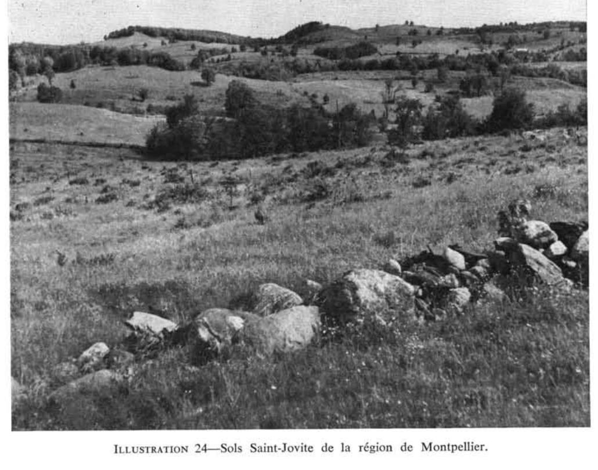
ILLUSTRATION 24 — Sols Saint-Jovite de la région de Montpellier.
Utilisation
Presque tous les sols Saint-Jovite ont été mis en culture et sont utilisés pour les prairies, les pâturages et les diverses récoltes de grande culture. Cependant certaines pentes raides et quelques énormes pierres émergeant à la surface du sol peuvent rendre difficile l'utilisation des machines agricoles. Certaines pentes sont trop fortes pour y faire la culture sans risques graves d'érosion. Il convient de maintenir ces pentes en pâturage. Par ailleurs, le sol est profond, perméable, d'une texture très désirable et possède une bonne capacité de rétention d'eau et aussi une assez bonne à bonne fertilité naturelle. Ces qualités rendent le sol susceptible de réagir très favorablement aux applications de chaux et d'engrais.
Sols sur sédiments loameux
SÉRIE COULONGE (Cl)
Les sols Coulonge occupent 9,736 acres dans le comté de Labelle, 4,997 acres dans le comté de Papineau. Le matériau originel est une alluvion loameuse de 1 à 3 pieds d'épaisseur déposée sur le gravier des larges plaines de délavage. Le terrain est presque plat ou légèrement ondulé, libre de pierres et de drainage bon à excessif. Le pin blanc, le pin rouge, le sapin et le bouleau blanc sont les principaux arbres des terrains boisés.
La série appartient aux podzols orthiques et ne comprend qu'un seul type : le loam sableux (Cl) dont voici la description du profil à l'état cultivé.
Horizon
Profondeur en pouces
Ap
0 - 6
Loam sableux très fin, brun à brun foncé ou brun grisâtre foncé (7.5YR-10YR 4/2); structure grumeleuse; très friable et très perméable; pH 5.6 à 5.8.
Bfh
6 - 9
Loam sableux très fin, brun-vif (7.5YR 5/6); structure grumeleuse; très friable et très perméable; pH 5.8 à 6.2.
Bf
9 - 18
Loam sableux très fin, brun jaunâtre (10YR 4/4-6/4); quelques fins fragments de gravier; structure grumeleuse parmi les grains de sable; très friable et très perméable; pH 5.8 à 6.2.
II C
18 +
Gravier avec ou sans stratifications de sable grossier ou sable grossier avec ou sans stratifications de gravier, brun jaunâtre (10YR 4/4); lâche; très perméable; pH 5.8 à 6.2.
Une couche éluviée (Ae), gris brunâtre pâle, d'une épaisseur d'environ 2 pouces est généralement présente dans les sites vierges, mais absente dans les champs cultivés.
Utilisation
La plupart des sols Coulonge sont en culture et voués à la grande culture et aux cultures sarclées. Ils sont faciles à cultiver. En moyenne, les rendements des récoltes sont bas, apparemment à cause du manque de fertilisation et de chaulage. Ces deux pratiques agricoles doivent être répétées fréquemment car le sol est très perméable et les éléments ajoutés qui ne sont pas absorbés par les plantes sont rapidement entraînés dans les eaux de drainage. Le terrain est aussi quelque peu sujet à l'aridité et est mieux adapté aux cultures intensives qu'à la grande culture.
L'humidité est généralement disponible pendant le printemps et le début de l'été, mais à la mid-été ou à la fin de l'été, le terrain devient souvent excessivement sec. Conséquemment, les cultures semées tôt ou faites avec des variétés hâtives produisent de meilleurs rendements.
SÉRIE PIEDMONT (Pm)
Les sols Piedmont couvrent un total de 18,933 acres et se rencontrent surtout dans le comté de Papineau, le long des vallées de la Lièvre, de la Blanche et de la Petite Nation à des élévations variant entre 450 à 750 pieds (illustration 25). Le matériau originel est une alluvion de loam sableux, d'une épaisseur de 2 à 6 pieds et reposant sur des matériaux à fine texture. Le sol est bien drainé, perméable et possède une assez bonne capacité de rétention d'humidité. Le terrain est généralement ondulé et souvent découpé par des ravins.
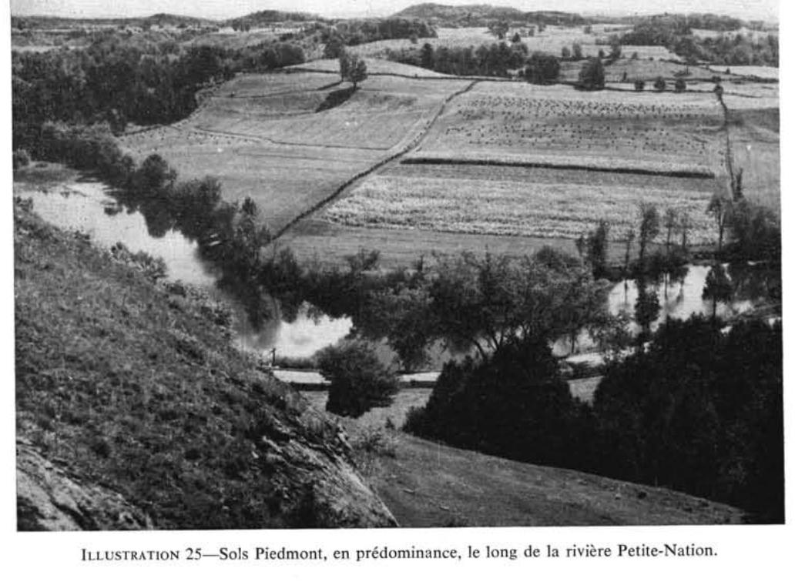
ILLUSTRATION 25 — Sols Piedmont, en prédominance, le long de la rivière Petite-Nation.
La série appartient aux podzols orthiques et ne comprend qu'un seul type : le loam sableux (Pm). Voici la description du profil à l'état cultivé :
Horizon
Profondeur en pouces
Ap
0 — 8
Loam sableux à loam sableux fin, brun foncé (10YR 4/3-3/2); faible structure granuleuse; très friable et très perméable; pH 5.4 à 5.7.
Bfh
8 — 24
Loam sableux fin, brun jaunâtre à brun-vif; (10YR 5/6-7.5YR 5/8); faible structure granuleuse; très friable; perméable; pH 5.6 à 5.9.
Bf
24 — 32
Sable loameux fin ou loam sableux, brun jaunâtre (10YR 5/4 4/4); parfois marbré de brun-vif et d'olive-pâle; ferme; modérément perméable; pH 5.6 à 5.9.
C
32 — 53
Stratifications de loam argileux et de sable fin, brun jaunâtre à brun jaunâtre pâle; quelques marbrures; très ferme; peu perméable; pH 5.6 à 5.9.
II C
53+
Argile à loam argileux brun grisâtre, souvent lamellé ou stratifié.
Utilisation
Les sols Piedmont sont tous en culture. On y fait surtout la grande culture, mais aussi un peu de cultures sarclées. La fertilité naturelle qui n'est pas très élevée peut être améliorée, car le sol retient assez bien l'eau et les éléments nutritifs. En général, les récoltes ne sont que passables. Le fumier est souvent le seul engrais.
utilisé alors qu'il faudrait aussi chauler et fertiliser avec des engrais chimiques complets. Les trèfles et la luzerne poussent assez bien sur le terrain bien chaulé et fertilisé. La chaux est appliquée après la récolte des pommes de terre lorsque celles-ci font partie de la rotation.
Les sols Piedmont conviennent à une grande variété de cultures et leur productivité dépend largement de la fertilisation. Le terrain est exempt de pierres, hâtif, facile à travailler et naturellement bien drainé. Il faut prendre soin de prévenir l'érosion par l'eau le long des pentes les plus raides.
SÉRIE HULL (H)
Les sols Hull sont associés aux sols Piedmont et couvrent 938 acres, le long des pentes où beaucoup d'eau d'infiltration provient des sols situés plus haut, principalement des sols Piedmont et Gatineau. Ces eaux d'infiltration, plus ou moins abondantes selon la saison et l'intensité de la précipitation, sont la cause du drainage imparfait des sols Hull. Le matériau originel des sols Hull est, comme celui des sols Piedmont, formé de 2 à 6 pieds de matériel sableux sur argile.
La série appartient aux podzols gleyifiés et ne comprend qu'un seul type: le loam sableux (H). Le profil de ce type, à l'état cultivé, possède les caractéristiques suivantes:
Horizon
Profondeur en pouces
Ap
0 - 8
Loam sableux, brun à brun foncé; structure granuleuse; très friable et très perméable; pH 5.4 à 5.6.
Bfhgj
8 - 28
Loam sableux, brun jaunâtre foncé; marbrures brun-vif et brun pâle; très friable et très perméable; temporairement saturé d'eau au printemps et aux périodes de fortes précipitations; pH 5.4 à 5.6.
Bfg
28 - 40
Loam sableux, brun jaunâtre; marbrures brun grisâtre; friable; modérément perméable; saturé d'eau aux périodes de pluie; pH 5.6 à 5.8.
II C
40+
Matériel argileux, massif ou stratifié de matériaux loameux ou sableux; très peu perméable verticalement; perméable le long des stratifications horizontales, lorsque celles-ci sont présentes.
Utilisation
Les sols Hull ont, presque partout, été mis en culture et servent à la grande culture et aux pâturages. Ils n'ont pas de pierres, sont assez fertiles et faciles à cultiver, bien que l'infiltration des eaux le long des pentes crée quelques problèmes. Pour éviter l'érosion par l'eau, les plantes sarclées doivent être cultivées à contre-pente, mais les prairies et les pâturages résistent assez bien à ce dégât. Il est difficile de se débarrasser des eaux d'infiltration sans avoir recours au drainage souterrain au travers des pentes. Des fossés profonds creusés à contre-pente enlèveraient cependant une quantité considérable d'eau et pourraient satisfaire aux exigences des plantes de grande culture. Généralement le sol demeure très humide et frais pour une longue période au début de la saison de végétation. Le terrain est alors très mou et ne peut supporter la machinerie lourde.
Avec un drainage amélioré, le chaulage et l'application d'engrais chimiques complets en plus du fumier, les sols Hull produisent les herbes et les fourrages de façon continue tout au long de l'été. Les céréales et les cultures sarclées peuvent aussi donner des rendements satisfaisants quand le drainage est amélioré.
SÉRIE BRÉBEUF ($\text{Bf, Bfs}$)
Les sols Brébeuf couvrent 19,325 acres dans le comté de Labelle et 3,861 acres dans le comté de Papineau. Ces sols alluvionnaires occupent le fond des principales vallées comme celles de la Lièvre et de la Rouge. On les rencontre surtout dans la partie septentrionale du territoire à des élévations de 650 à 900 pieds. Ils se trouvent également, en étendues plus restreintes, à des élévations de 450 à 700 pieds le long du cours inférieur des principales rivières.
Le matériau originel, exempt de pierres, est formé d'une alluvion de loam sableux très fin, de loam ou de loam limoneux reposant sur des matériaux lacustres lamellés. L'alluvion est très perméable et permet une libre infiltration de l'eau à travers le sous-sol dont la capacité de rétention est bonne à passable. Le substratum lamellé est peu perméable et permet de ralentir le mouvement vertical des eaux de drainage qui autrement serait trop rapide. Sur les pentes convexes des sols Brébeuf, ces diverses influences produisent un bon drainage naturel. Sous les présentes conditions de culture, les dangers d'érosion nocive par l'eau sont faibles si ce n'est lorsque le sous-sol est gelé ou saturé d'eau alors que le danger devient beaucoup plus grand.
La série appartient aux podzols orthiques et comprend deux types: le loam à loam limoneux ($\text{Bf}$) et le loam sableux très fin ($\text{Bfs}$). Ce dernier type, qui est le plus important de la série à l'état cultivé, possède les caractéristiques suivantes :
Horizon
Profondeur en pouces
Ap
$0-6$
Loam sableux très fin, brun jaunâtre à brun vif ($4/3-5/3$); fine structure granuleuse très friable; très perméable; $\text{pH } 5.3 \text{ à } 6.0$.
Bfh
$6-14$
Loam sableux très fin, brun jaunâtre à brun vif ($\text{10YR à } 7.5\text{YR } 5/6-5/8$); fine structure granuleuse; très friable; perméable et bien aéré; $\text{pH } 5.4 \text{ à } 6.0$.
Bf
$14-24$
Loam sableux très fin, brun jaunâtre pâle à olive pâle ($\text{10YR à } 2.5\text{ 6/6-5/4}$); structure granuleuse parmi les grains de sable; très friable; très perméable; $\text{pH } 5.6 \text{ à } 6.2$.
C
$24+$
Loam limoneux à loam sableux ou loam argilo-limoneux, lamellé, gris olive à gris brunâtre pâle ($\text{5Y } 5/2 \text{ à } 2.5\text{Y } 6/2-7/2$); très ferme; peu perméable dans le sens vertical; quelques marbrures; $\text{pH } 5.6 \text{ à } 6.4$.
Les sols Brébeuf ont presque tous été mis en culture. Ils servent surtout aux grandes cultures mais conviendraient plutôt aux cultures spéciales. Le terrain ne possède qu'une fertilité naturelle passable, mais le chaulage, le fumier et les engrais chimiques complets produisent une augmentation considérable des rendements. Les conditions d'humidité des sols cultivés sont généralement bonnes.
Jusqu'à maintenant, peu de chaux et de fertilisants ont été utilisés; ceci explique partiellement la médiocrité des champs de légumineuses. Les plantes à racines profondes conviennent mieux à ces sols que celles à racines superficielles. Le terrain convient plutôt aux cultures intensives quoique la culture extensive puisse aussi réussir.
La plupart des sols Brébeuf ont un relief peu accentué, qui permet la pratique de diverses cultures sans sérieux danger d'érosion. Cependant, les plus fortes pentes doivent demeurer engazonnées ou être protégées en travers par des bandes de gazon.
Les rendements varient beaucoup selon les modes d'administration. Le terrain, étant bien drainé et aéré, se réchauffe rapidement au printemps et peut être travaillé et semé tôt. Négliger de prendre avantage de ce départ hâtif et des excellentes conditions d'humidité du printemps c'est risquer de réduire considérablement le rendement des récoltes.
Série Allumette (At, Atl)
Les sols Allumette occupent une superficie totale de 5,729 acres et se rencontrent surtout dans le comté de Labelle, avec les sols Brébeuf. Le terrain est plat ou en légère dépression et présente parfois des inégalités. Le matériau originel est une alluvion de loam sableux très fin, de loam ou de loam limoneux reposant sur des matériaux lacustres, lamellés et généralement de texture plus fine que l'alluvion de surface.
Les eaux de pluie s'infiltrent dans le sous-sol, qui est très perméable, mais elles s'accumulent au-dessus du substratum qui est peu perméable, causant ainsi une aération et un drainage imparfaits, surtout au printemps et aux périodes pluvieuses.
La série appartient aux podzols gleyifiés et comprend deux types : le loam sableux très fin (At) et le loam à loam limoneux (Atl.). Le type de loam sableux très fin est le plus important de la série. À l'état cultivé, il possède les caractéristiques suivantes :
Horizon
Profondeur en pouces
Description
Ap
0 – 6
Loam sableux très fin, brun grisâtre foncé (10YR 4/2); fine structure granuleuse; très friable; très perméable; pH 5.0 à 5.5.
Ae
6 – 8
Loam sableux gris brunâtre pâle (10YR 6/2), mêlé avec le matériel de l'horizon sous-jacent.
Bfg
8 – 24
Loam sableux fin, brun jaunâtre (10YR 5/4-5/6); marbrures olive pâle (2.5Y 5/4) et brun rougeâtre (5YR 5/4); structure monogranulaire; parfois lamellé dans la partie inférieure de l'horizon; friable et perméable; pH 5.0 à 5.6.
C
24+
Matériel gris brunâtre pâle (2.5Y 6/2); bandes brun jaunâtre (10YR 4/4-5/8); lamelles de loam sableux fin, de loam limoneux ou de loam argilo-limoneux; ferme; peu perméable; pH 5.4 à 6.0.
À l'état naturel, le sol possède une litière organique (L-H) de 2 à 3 pouces d'épaisseur à la surface, laquelle repose sur 2 à 5 pouces de matériel éluvié (Ae) gris brunâtre pâle.
Utilisation
Une partie importante des sols Allumette a été mis en culture et est vouée à la grande culture. Le drainage artificiel doit être effectué pour éliminer rapidement la sursaturation des eaux; autrement, la croissance est retardée par l'excès d'eau et le manque d'aération du terrain. La chaux et les engrais chimiques complets doivent être utilisés pour obtenir des rendements convenables.
Le terrain convient mieux aux fourrages qu'aux céréales. La luzerne ne peut croître que si le drainage et la réaction du sol ont été considérablement améliorés. Le trèfle pousse bien sur le terrain bien drainé, chaulé, et fertilisé avec du phosphore et du potassium. Les rendements des cultures, généralement bas, augmentent
rapidement sous une bonne gestion. Les meilleurs rendements s'obtiennent durant les années de précipitation relativement faible. Un printemps sec favorise les semailles hâtives.
SÉRIE DEMERS (Dr)
Les sols Demers couvrent un total de 1,377 acres dans les comtés de Labelle et de Papineau. Ils se sont formés sur les mêmes matériaux que les sols Brébeuf et Allumette. Les sols Demers occupent des terrains bas, mal drainés. Le sous-sol souffre d'un manque d'aération résultant de l'imperméabilité des matériaux lamellés qui s'y trouvent à faible profondeur.
La série appartient aux gleysols orthiques et ne comprend qu'un seul type : le loam limoneux (Dr). Voici une description de ce sol à l'état cultivé.
Horizon
Profondeur en pouces
Ap
0 – 6
Loam limoneux grisâtre; structure granuleuse et fragments irréguliers; modérément friable et perméable; pH 4.7 à 5.7.
Aejg
6 – 12
Loam limoneux gris pâle; structure en plaques ou lamellée; perméable; pH 5.4 à 6.0.
Bg
12 – 24
Lamelles brun grisâtre ou olive, de loam sableux très fin, de loam limoneux ou de loam argilo-limoneux; marbrures brun jaunâtre et gris pâle; lamelles fermes en place; friables lorsque séparées de la masse; peu perméable au mouvement vertical de l'eau; pH 5.5 à 6.3.
Cg
24+
Varves ou lamelles brun grisâtre, de loam limoneux, de loam argilo-limoneux ou de loam sableux fin; marbrures brun jaunâtre et olive; fermes à friables; se brisent facilement sur le plan horizontal; résistent au mouvement vertical de l'eau; pH 5.0 à 6.8.
À l'état naturel, le sol est couvert d'une couche organique (L-H) de 3 à 5 pouces d'épaisseur, reposant sur un horizon organo-minéral (Ah) brun grisâtre foncé, de 3 pouces ou moins d'épaisseur. Quand le sol est mis en culture, les horizons L-H et Ah sont mêlés à une partie de l'horizon Aejg.
Utilisation
La plupart des sols Demers ont été défrichés et servent surtout à la production des fourrages. Les carex et les joncs croissent naturellement dans les prairies et les pâturages, excepté là où le drainage a été amélioré considérablement. Le sol est froid, mal drainé et se classe parmi les derniers à être prêts pour les semailles du printemps. Les céréales ne sont cultivées que sur les champs dont le drainage a été amélioré. Une fois améliorés par le drainage et le chaulage, les sols Demers ont une assez bonne capacité de production, surtout pour les fourrages. Le creusage des fossés et l'usage des charrues à défoncer pour briser les lamelles imperméables du sous-sol peuvent aider considérablement à améliorer le drainage et l'aération.
SÉRIE COTEA[U] (Ct)
Les sols Coteau couvrent 1,073 acres près des limites des comtés de Hull et de Papineau, sur terrain ondulé, à des élévations de 300 à 400 pieds. Le matériau originel est une alluvion de loam sableux fin, d'une épaisseur de 4 à 6 pieds, sur
argile. Le drainage est bon, dû partiellement au relief et partiellement à la perméabilité des matériaux, permettant une infiltration modérément rapide de l'eau.
La série appartient aux podzols orthiques et ne comprend qu'un seul type, le loam sableux fin. À l'état cultivé, ce sol a les caractéristiques suivantes :
Horizon
Profondeur en pouces
Ap
0 – 7
Loam sableux fin, brun (10YR 4/3); structure granuleuse fine parmi les grains de sable; très friable; très perméable; pH 5.3 à 5.8.
Bfh
7 – 14
Loam sableux fin, brun jaunâtre (10YR 5/8); structure granuleuse; et monogranulaire; très friable; très perméable; pH 5.3 à 6.0.
Bf
14 – 30
Loam sableux fin, olive pâle (2.5YR 5/6); structure monogranulaire; très perméable; pH 5.3 à 6.3.
C
30 – 48
Loam sableux fin à sable loameux fin, gris brunâtre pâle à olive (2.5Y 6/2-5Y 5/3); pH 6.2 à 6.7.
II C
48+
Argile.
Utilisation
Les sols Coteau sont tous cultivés et utilisés pour diverses récoltes de la ferme. La fertilisation naturelle n'est que modérée, mais le chaulage, le fumier et les engrais complets permettent d'obtenir de bons rendements. Le terrain convient à une variété de cultures mais plus particulièrement aux produits maraîchers hâtifs. En grande culture comme en culture maraîchère, les rendements varient considérablement selon la gestion et l'intensité de la fertilisation. L'irrigation pourrait élever les rendements à des niveaux supérieurs.
SÉRIE SOULANGES (S)
Les sols Soulanges couvrent 934 acres, se rencontrent en association avec les sols Coteau et sont formés sur le même genre de matériau originel. Le terrain est plat ou presque plat et imparfaitement à quelqu peu mal drainé. Le matériau originel est une alluvion de loam sableux très fin, d'une épaisseur de 18 à 48 pouces sur de l'argile plane.
La série appartient aux podzols gleyifiés et ne comprend qu'un seul type, le loam sableux fin à très fin (S). La description suivante du sol cultivé représente la phase la plus mince de cette série.
Horizon
Profondeur en pouces
Ap
0 – 8
Loam sableux fin à très fin, brun grisâtre très foncé (2.5Y 3/2); fine structure granuleuse; très friable; très perméable; pH 5.2 à 5.9.
Bfhgj
8 – 12
Loam à loam sableux fin, brun grisâtre (2.5Y 5/2); larges marbrures brun jaunâtre foncé, (10YR 4/3); pH 5.8 à 6.2.
Bfg
12 – 24
Loam sableux brun à brun jaunâtre (10YR 5/3-5/4); moyennes marbrures brun-vif et grises; mal aéré; pH 6.0 à 6.4.
II C
24+
Argile grise à gris brunâtre (10YR 6/2-2.5Y 5/2); fines marbrures rouge jaunâtre ou jaune rougeâtre (5.YR 5/6-7.5YR 6/6); très peu perméable; pH 6.5 à 7.0.
À l'état naturel, le profil comprend une litière organique (L-H) de 3 à 4 pouces d'épaisseur, sur 3 à 5 pouces de loam sableux fin, éluivé et de couleur grise
(Ae). Lorsque le substratum argileux (II C) est situé plus profondément que 24 pouces, une couche de sable fin gris brunâtre (C) s'interpose entre les horizons Bfg et II C.
Utilisation
Les sols Soulanges sont utilisés surtout pour la grande culture. La fertilité naturelle, qui n'est que passable, peut être grandement améliorée par le drainage, le chaulage et la fertilisation au fumier et aux engrais chimiques complets. Le labour en planches larges et bombées est généralement la méthode employée pour améliorer le drainage et l'aération du sol.
Le terrain convient bien aux pâturages et aux récoltes de grande culture. Les trèfles poussent bien dans les champs chaulés et dont le drainage a été amélioré. Toutefois, l'aération du sol est rarement suffisante pour assurer le succès des luzernières. Au printemps, le terrain est mou et plutôt lent à se réchauffer. Par ailleurs, les plantes souffrent rarement de sécheresse durant l'été.
SÉRIE LACHUTE (Lc, Lcs)
Les sols Lachute couvrent un total de 4,942 acres, dont 4,264 situés dans le comté de Labelle, principalement sur les rives de la rivière Rouge (illustration 26).
Le matériau originel, déposé récemment, le long des principaux cours d'eau, sous forme de plaine de débordement, est une alluvion de loam limoneux à loam sableux très fin. L'alluvionnement ou le remaniement des dépôts existants se produit encore lors du débordement annuel des eaux, aux endroits où le courant a
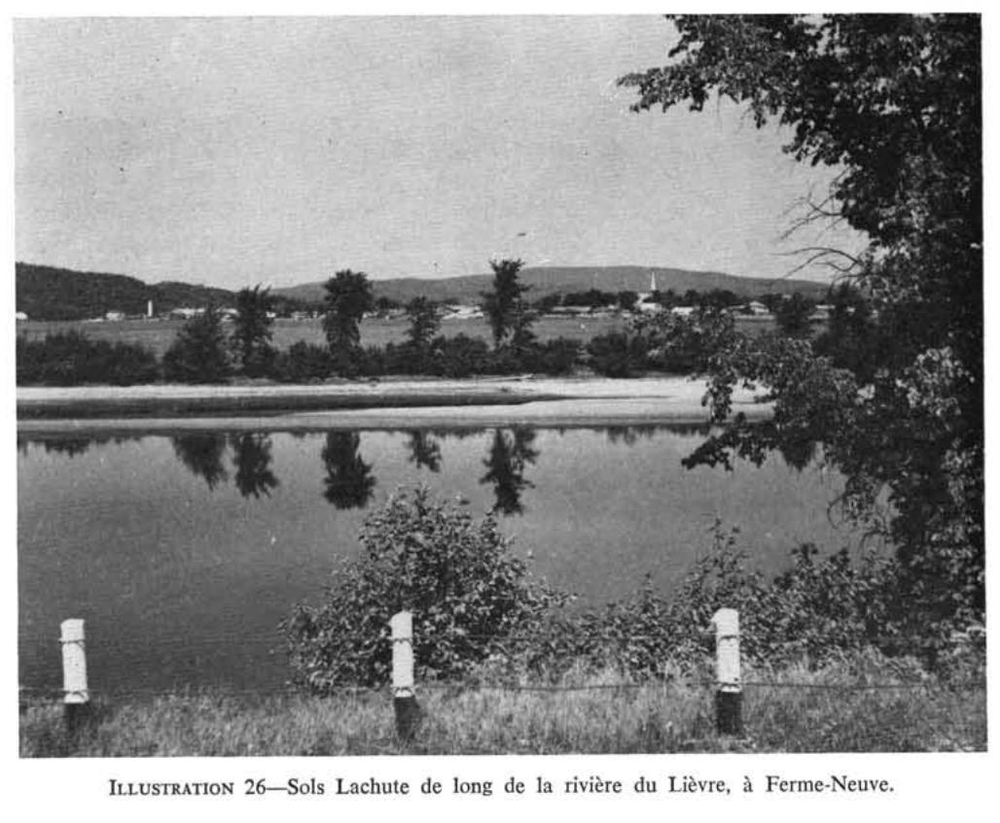
ILLUSTRATION 26 — Sols Lachute de long de la rivière du Lièvre, à Ferme-Neuve.
peu de vélocité et traverse des méandres bordés de terrains plats. Durant la période d'inondation, la rivière change souvent son cours, détruit des levées déjà existantes pour en reconstruire d'autres à peu près parallèlement au nouveau chenal.
A l'exemple de la plupart des alluvions, le matériau originel des sols Lachute est très perméable et permet d'excellentes conditions pour l'infiltration des eaux et pour l'aération. Après l'inondation printanière, l'excès d'eau se retire rapidement du sol et par la suite l'humidité du sol est quelque peu reliée au niveau de l'eau dans la rivière. La bonne capacité de rétention de l'eau, la libre infiltration et la capillarité, créent d'excellentes conditions d'humidité durant presque toute la saison de croissance et font que le terrain est peu affecté par les sécheresses.
La série appartient aux régosols orthiques et comprend deux types: le loam limoneux (Lc) et loam sableux très fin (Lcs). Ce dernier type contient une plus grande proportion de sable très fin que de limon, non seulement à la surface mais à travers tout le profil. Les deux types sont souvent entremêlés. A l'état cultivé, le loam limoneux (Lc) a les caractéristiques suivantes:
Horizon
Profondeur en pouces
Ap
0 – 7
Loam limoneux brun grisâtre très foncé à brun foncé (10YR 3/2-4/3); fine structure granuleuse; très friable; très perméable; pH 5.5 à 6.2.
C 1
7 – 27
Loam limoneux olive à olive pâle (2.5Y 4/4-5/4); fine structure granuleuse; très friable; très perméable; pH 5.6 à 6.2.
C 2
27+
Loam limoneux olive pâle à gris brunâtre pâle (2.5Y 5/4-6/2); sans structure; faibles marbrures; très friable et très perméable; pH 5.0 à 6.2.
Utilisation
Les sols Lachute sont tous cultivés et conviennent à une variété de cultures. Les inondations qui se produisent généralement une fois l'an, à la fin d'avril ou au début de mai, ne causent pas de retard sérieux des semailles. Le terrain peut être travaillé dès que les eaux se sont retirées.
Ces sols possèdent une assez bonne fertilité naturelle et rendent bien lorsque chaulés et fertilisés au fumier et aux engrais chimiques. Le sous-sol est poreux, perméable et adapté aux plantes à racines profondes, mais la luzerne peut périr lorsque le terrain demeure sous l'eau durant une période de temps prolongée.
Le terrain sert surtout aux récoltes communes de grande culture, comme le foin, les céréales, le maïs à ensilage et les plantes-racines. Les pommes de terre sont la principale culture spéciale. Une bonne production d'herbages peut être obtenue sur ces sols tout au long de la saison. L'accès à l'eau tout au long de la rivière rend ces terrains particulièrement adaptés au pâturage.
Types divers de terrains
ÉBOULIS, BERGES ET RAVINS (X, Xl, Xs)
Les éboulis, ou glissements de terrains, les berges et les ravins profonds ont tous été cartographiés dans un même groupe de terrains différenciés exclusivement d'après la texture de la surface du sol et indiqués comme argileux (X), limoneux (Xl) ou sableux à graveleux (Xs). Ces trois types couvrent respectivement 27,591, 833 et 4,459 acres dans tout le territoire cartographié.
Les glissements d'argile se sont produits à différentes périodes; quelques-uns sont probablement préhistoriques, d'autres sont très récents, comme celui de La
Salette qui, en 1908, a coûté la vie à 33 personnes. Les plus importants en étendue sont ceux de Grande Presqu'île et de Petite Presqu'île, près de Plaisance.
Les glissements de terrain se sont produits à divers endroits le long des berges de rivières. Selon que ces berges étaient originellement recouvertes ou non de dépôts de nature loameuse, sableuse ou graveleuse, les glissements de terrain offrent une plus ou moins grande variété de conditions quant à la texture.
Là où l'argile formait l'unique matériel du glissement, il y a peu de différence de texture entre les sols primitifs et les sols des éboulis. Mais comme souvent, la surface primitive était composée de matériaux sableux ou graveleux superposés à l'argile, les mélanges effectués durant le glissement ont causé un changement drastique dans la texture des sols de l'éboulis par rapport à la condition originelle, car les matériaux sablo-graveleux, relativement minces, ont été emprisonnés et dispersés dans l'épaisse masse de l'argile.
Lorsque les matériaux sableux étaient à l'origine de moins de 5 pieds d'épaisseur sur l'argile, la texture de la surface des éboulis est argileuse. Quand, à l'origine, les dépôts sableux avaient de 5 à 15 pieds d'épaisseur, la texture de l'éboulis est sableuse et argileuse en parties à peu près égales. Enfin, les éboulis sont entièrement sableux ou graveleux là où les matériaux grossiers avaient à l'origine une épaisseur de plus de 15 pieds au-dessus de l'argile.
Les glissements de terrain présentent des reliefs particuliers et très variables selon les divers matériaux présents à l'origine, la teneur en humidité de l'argile et l'intensité de l'érosion subie après le glissement (illustration 27). On peut se représenter un glissement argileux récent comme un site bouleversé par un gigan-
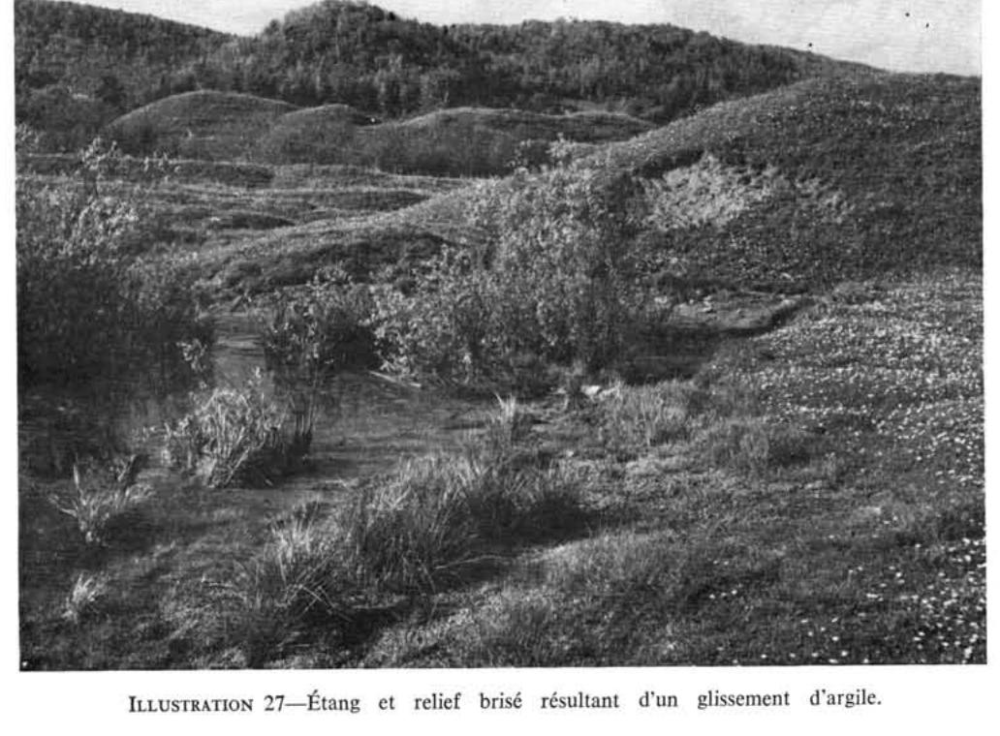
ILLUSTRATION 27 — Étang et relief brisé résultant d'un glissement d'argile.
tesque labour dont les tranches varient en épaisseur de quelques pieds à plus de 30 pieds. Quelques-unes de ces tranches, peu éloignées de leur point d'origine, se sont conservées sous forme d'énormes masses anguleuses et présentent maintenant un relief accentué (illustration 28, droite). D'autres tranches, emportées sur de longues distances, parfois même à travers et au-delà d'une rivière, se sont désintégrées pour former un relief peu accentué (illustration 28, gauche). De façon générale, le relief apparaît de plus en plus accentué lorsqu'on se déplace depuis la limite extrême du glissement jusqu'à son point d'origine.
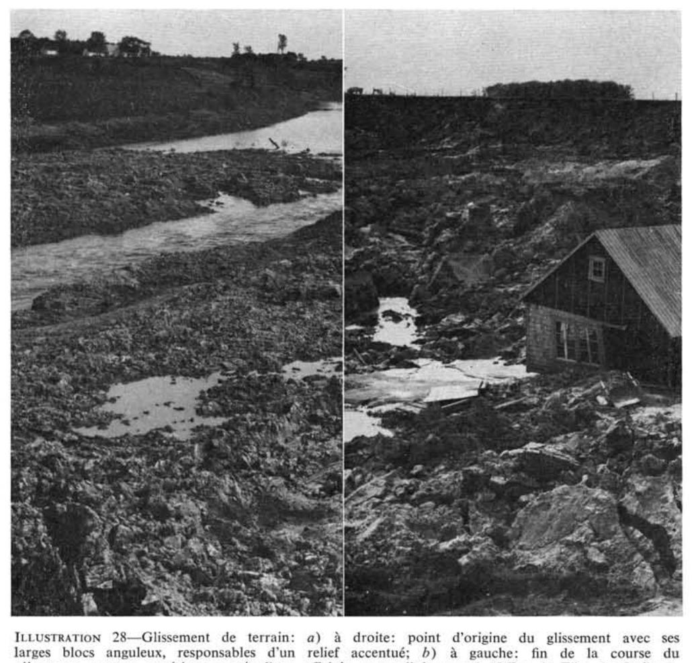
ILLUSTRATION 28 — Glissement de terrain: a) à droite: point d'origine du glissement avec ses larges blocs anguleux, responsables d'un relief accentué; b) à gauche: fin de la course du glissement avec ses matériaux gorgés d'eau, affaissés, sans relief marqué (Office du Film du Québec).
Le relief en bosses-et-cuvettes (illustration 27), résultant des éboulis, produit des conditions de drainage très contrastantes qui se répètent sur de courtes distances. Les dépressions ne sont reliées par aucun système de drainage naturel et sont parfois très difficiles à drainer artificiellement; d'autres cas, la perméabilité du sous-sol assure une drainage adéquat. Les masses de sable ou de gravier emprisonnées dans l'argile facilitent parfois l'infiltration des eaux, mais de façon générale, les dépressions forment des marécages ou des étangs.
Les différences dans les matériaux, le drainage et l'âge créent des variations importantes de réaction et de développement génétique sur ces glissements de terrain. Les glissements relativement récents ont des profils régosoliques. Certains des plus anciens glissements argileux semblent évoluer vers le groupe génétique des sols boisés gris foncé. La réaction du sol de surface des éboulis est générale-ment plus élevée que celle des sols normaux, parce que des matériaux non altérés ont été ramenés à la surface.
Utilisation
La texture et le relief des éboulis déterminent l'usage que l'on en fait. Les terrains sableux ou graveleux ont généralement été laissés boisés, tandis que les terrains argileux ou limoneux ont été mis en culture, excepté là où le relief est extrêmement accentué. Dans ce dernier cas, le terrain est surtout utilisé pour le pâturage. Les éboulis argileux les plus unis sont utilisés pour les principales récoltes de grande culture et fournissent des rendements aussi élevés que les meilleurs sols à texture fine de la région, bien que les variations de drainage et de texture soient parfois responsables du manque d'uniformité des récoltes (illustration 29). Les plus luxuriantes pousses de luzerne de la région se rencontrent sur les ondulations, bien drainées et de fine texture, créées par les glissements d'argile.
La plupart des berges et des ravins ayant une surface argileuse ou limoneuse ont été déboisés et sont utilisés comme pâturages. Une telle pratique peut être tolérée si les pentes sont très stables, mais comme la quantité d'herbes produite y apparaît plutôt faible, il semblerait plus sage d'y laisser croître des arbres capa-
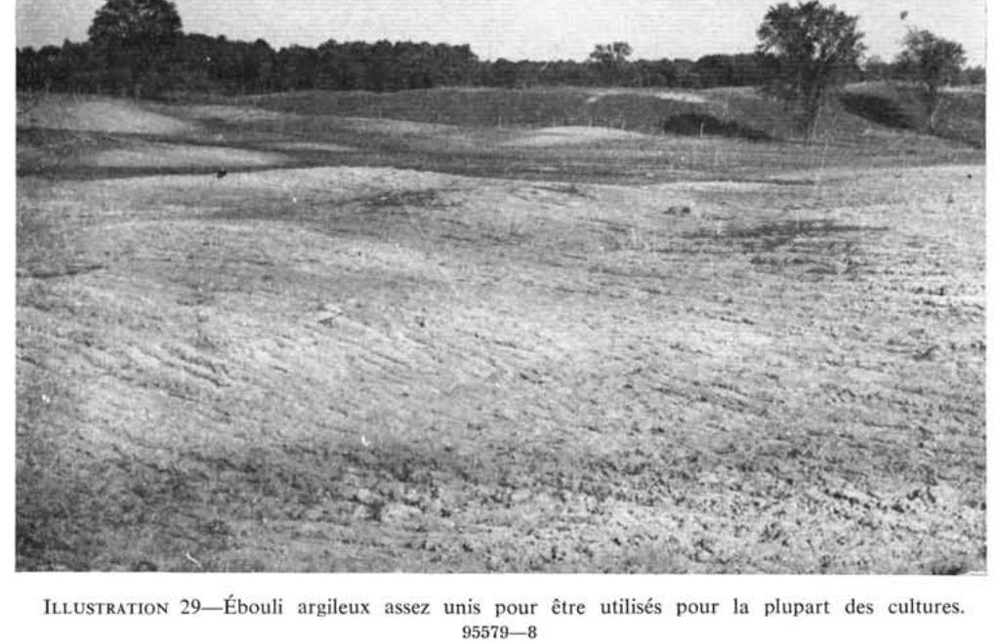
ILLUSTRATION 29 — Éboulis argileux assez unis pour être utilisés pour la plupart des cultures.
95579—8
bles de protéger les pentes contre l'érosion. Certaines pentes font face au sud et fournissent une végétation herbacée très hâtive. Les ravins et les berges de nature sableuse ou graveleuse doivent demeurer boisés parce que la pousse des herbes y est très faible tandis que les arbres peuvent empêcher l'érosion éolienne susceptible de se former en haut des pentes.
Sols alluvionnaires non différenciés (Au, Aul, Auh)
Les sols alluvionnaires dont les profils très variables ne peuvent être inclus dans les séries précédentes, ont été classés selon la texture de surface dans un des trois groupes suivants: alluvion sableuse à graveleuse (Au), alluvion loameuse (Aul) et alluvion argileuse (Auh). Les superficies respectives de ces trois groupes, pour tout le territoire cartographié, ont été évaluées à 45,227, 16,398 et 11,978 acres. De ces superficies il faudra cependant soustraire les étendues inondées depuis la construction du barrage hydro-électrique de Carillon. Une partie de ces étendues cartographiées comme alluvions non différenciés en séries devront désormais être considérées comme des terrains inondés ou comme des marécages.
Le matériau originel de sols alluvionnaires non différenciés est de nature variable et souvent la texture du sous-sol diffère beaucoup de celle de la surface. Dans la plupart des cas, le drainage naturel varie d'imparfait à mauvais. Ces sols se trouvent généralement le long des cours d'eau et au creux des dépressions de terrain.
Utilisation
La plupart de ces sols ont été laissés dans leur état naturel, couverts d'arbres, d'aunes et d'arbustes. Certaines alluvions seraient utilisables pour l'agriculture si elles occupaient des étendues assez considérables, mais souvent elles ne forment que d'étroites bandes au milieu de terrains non arables. En d'autres cas, les frais de drainage sont prohibitifs à cause des obstacles naturels ou de la superficie restreinte. Les terrains déboisés sont surtout utilisés pour les pâturages et les fourrages. Les céréales sont rarement cultivées, soit parce que le terrain est tardif, soit parce qu'il est difficilement accessible.
Terrains rocheux non différenciés (√)
Les petites superficies de terrain pierreux et d'affleurements rocheux parmi des sols minces ont été cartographiées comme terrains rocheux non différenciés et indiqués simplement par le symbole (√). La superficie de ces terrains a été incluse avec celle des sols de till avoisinants.
Utilisation
Les terrains rocheux non différenciés sont utilisés de la même façon que les sols pierreux environnants; la plupart sont boisés.
Sols organiques (Mk, Tt, Pt)
Les sols organiques cartographiés appartiennent à trois types différents: les terres noires (Mk), les terres noires tourbeuses (Tt) et les tourbes (Pt). Les superficies respectives de ces types pour tout le territoire, sont de 2,068, 2,674 et 14,906 acres.
La terre noire est formée de matériel organique noir et bien décomposé ayant une épaisseur d'environ 1½ à 4 pieds sur un substrat minéral.
La terre noire tourbeuse contient des résidus ligneux semi-décomposés et de couleur brune parmi du matériel organique noir et bien décomposé. Le dépôt a généralement 2 pieds d'épaisseur mais peut parfois atteindre 3 ou 4 pieds.
La tourbe est formée de résidus de plantes peu décomposés et retenant encore leur nature fibreuse. Les dépôts de tourbe ont généralement plus de 4 pieds d'épaisseur et parfois dépassent 10 pieds. A la surface, le matériel est généralement brun mais devient brun jaunâtre pâle en profondeur.
Le substrat minéral des sols organiques est mal drainé, fortement marqué de gley et formé de till, d'argile, de sable ou même de roc.
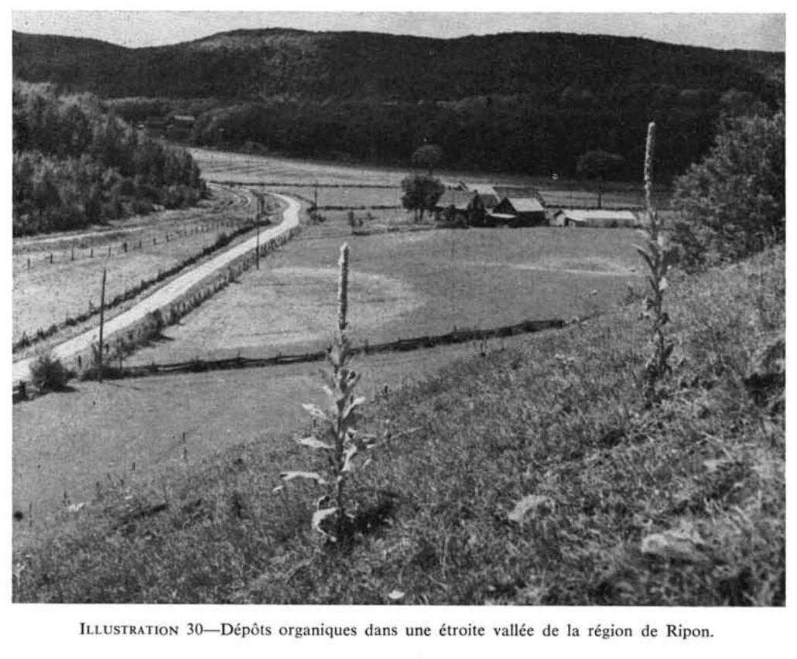
Illustration 30—Dépôts organiques dans une étroite vallée de la région de Ripon.
Utilisation
Les tourbes sont généralement très humides et rarement cultivées. Certaines portions des terres noires et des terres noires tourbeuses ont été mises en culture et sont utilisées pour les principales récoltes de grande culture.
La productivité naturelle des sols organiques est basse, car ils sont déficients en phosphore, en potassium et parfois en éléments mineurs. Sans fertilisation, les récoltes mûrissent lentement, produisent peu et les céréales sont sujettes à la verse. Le fumier employé seul, même à larges doses, ne peut corriger le manque d'équilibre.
bre dans la proportion des éléments nutritifs. Les meilleurs rendements sont obtenus lorsqu'on utilise les engrais chimiques spécialement désignés pour les sols organiques. Ces engrais contiennent beaucoup de potassium et de phosphore mais peu ou pas d'azote. La plupart des sols organiques sont acides et doivent être chaulés pour obtenir les meilleurs rendements. Les sols organiques adéquatement fertilisés conviennent à une grande variété de cultures mais plus particulièrement aux cultures maraîchères.
Les sols organiques sont extrêmement poreux et doivent être tassés pour assurer un bon contact entre la plante et le sol. Il convient donc d'utiliser des rouleaux et d'autres instruments de compaction au bon moment et d'éviter les travaux qui tendent à accentuer la porosité du sol.
TERRAINS MARÉCAGEUX (⍙)
Les terrains marécageux couvrent 1,392 acres dans le comté de Hull, 9,995 acres dans le comté de Labelle et 14,602 acres dans le comté de Papineau. Les superficies estimées dans le comté de Papineau ont été considérablement modifiées depuis que d'importantes étendues de terrain le long de la rivière Outaouais ont été recouvertes par les eaux du bassin créé par le barrage de Carillon.
Les terrains marécageux comprennent tous les sols qui, durant la saison de végétation, sont couverts d'eau pendant une période assez longue pour les rendre inexploitables comme terre agricole. Ces terrains se trouvent communément dans des endroits où le drainage naturel est stagnant, au fond des dépressions ou le long de cours d'eau paresseux. Plusieurs petits marécages sont inclus avec les sols de till Lakefield. Le symbole de marécage (⍙) ajouté sur la carte aux symboles des séries, indique la présence de petites étendues marécageuses qui n'ont pu être cartographiées séparément.
Le matériel des terrains marécageux est de nature variable: sableux, loameux ou argileux, pierreux ou non pierreux. La matière organique à la surface du sol est souvent mal décomposée et en quantité qui n'excède que légèrement celle des sols minéraux environnants. Les terrains marécageux ne peuvent servir à l'agriculture à moins de subir d'importants et coûteux travaux de drainage. Ils diffèrent des sols organiques en ce qu'ils ne peuvent servir de source de matière organique.
CLASSEMENT DES SOLS
Selon leur adaptabilité à divers genres d'exploitation agricole, les sols de la région étudiée peuvent être divisés en cinq classes, telles qu'indiquées au tableau 7. Ce classement est basé en premier lieu sur le degré d'adaptabilité de chaque sol aux différentes récoltes et en second lieu sur sa fertilité dans les conditions moyennes d'exploitation. Conséquemment, les sols convenant à une large variété de productions y apparaissent les premiers, tandis que ceux ne convenant qu'à peu de productions ou ne convenant à aucune viennent les derniers. Ce classement repose sur des données fournies par les cultivateurs et les agronomes aussi bien que sur le potentiel du sol tel qu'estimé par les pédologues. Les prédictions des pédologues s'appliquent particulièrement au cas des cultures maraîchères dont la pratique a été peu répandue jusqu'à maintenant.
Tableau 7—Classement des sols pour les grandes cultures et les cultures maraîchères
Classe
Série ou type de terrain
Améliorations requises
Grandes cultures
Cultures maraîchères
97
Foin de fléole et de trèfle
Luzerne
Maïs pour ensilage et racines
Avoine et orge
Pâturage
Maïs sucré
Pommes de terre
Laitue et choux
Tomates
Fèves (vertes, jaunes)
Petits fruits
I. Sols convenant bien aux grandes cultures et aux cultures maraîchères
Bouchette...
L, 1Fm, Fc
22
2
1–2
2
2
1
2
2–3
2
2–3
1
Brébeuf...
L, Fm, Fc
2
2
1–2
2
2–3
1
1
2–3
2
2–3
1
Coteau...
L, Fm, Fc
2–3
2
2
2
2–3
1
1
2–3
2–3
2–3
1
Lachute...
L, Fm, Fc
2
2
1
2
1–2
1
2
2–3
2–1
2–3
2
Pontiac...
L, Fm, Fc
2–1
2
1–2
2–1
2
1
2–3
2–3
2
2
1
Saint-Jovite
Pb, L, Fm, Fc
2
2
2–1
2
2–1
2–1
2–1
2
2
2–3
1
II. Sols convenant mieux aux grandes cultures qu'aux cultures maraîchères
Bearbrook...
D, G, L
1
3
3
2
1
4
4
4
3
3
4
Brandon...
D, L, G
1
3–4
2–3
1–2
1–2
3
4
4
3
3
3
Chapeau...
G, L
2–3
2–3
2–3
2
1–2
3
4
3
3
3
2
Dalhousie...
1
2
2–1
1
1
2
2–4
2–3
2
2
2
Éboulis (avec surface argileuse ou limoneuse)
2
1–3
2
2–1
1
2–3
3–4
3
3–2
2–3
2–3
Laplaine...
D, Fc
1–2
3–4
4–3
3–2
2–3
3–4
3
2
2–3
3
3
Maniwaki...
D, Fc
2–3
3–4
4–3
3–4
3–4
3–4
3
2–3
3–2
2–3
2–3
Monteerf...
L, D, G
2
4
3
2–3
2–1
3
4
3
3
3
2–3
Rideau...
G, L
1–2
3
2–3
2
2–3
3
4
3–4
3–4
2–3
2–3
Sainte-Rosalie...
D, L
1
3–4
2–3
1–2
1
3
4–3
3
3–2
2–3
2–3
Wendover...
G, L
1–2
3–2
3
2
2–3
3
4
3–4
3–4
3
3
III. Sols convenant mieux aux cultures maraîchères qu'aux grandes cultures.
Achigan...
D, L, Fm, Fc
3
4
3
3–2
3
3
2–3
3
2–3
3–2
1–2
Allumette...
D, L, Fm, Fc
3
4
3
3–2
3
3
2–3
3
2–3
3–2
1–2
Aumond...
D, L, Fm, Fc
3–2
4–3
3
3–2
3–2
3
2–3
3
2–3
3–2
1–2
Bevin...
D, L, Fm, Fc
4–3
4
4
4
4–3
4
3–4
3
3–4
3–4
2
Courval...
D, L, Fc
3–2
4
3
3
3
3
3–4
3–2
3–2
3–2
3–2
Coulonge...
L, Fm, Lc
3–2
3–2
3
3
3–4
3–2
2–1
3
3
3–2
2–1
Demers...
D, L, Fc
2–3
4
3
3–2
3
3
3
3–2
3–2
3–2
3–2
Diable...
L, Fm, Lc
3–4
4
3
3–2
3–2
2–1
3–2
3–2
3–2
3–2
4–3
Classe
Série ou type de terrain
Améliorations requises
Grandes cultures
Cultures maraîchères
Foin de fléole et de trèfle
Luzerne
Maïs pour ensilage et racines
Avoine et orge
Pâturage
Maïs sucré
Pommes de terre
Laitue et choux
Tomates
Fèves (vertes, jaunes)
Petits fruits
Guindon...
L,Fm,Lc
4-3
3-2
4-3
3-4
4-3
4-3
2
3-4
3-4
3
1-2
Hull...
D,L,Fc
3-2
3-4
3
3
3-2
3-2
3
3
3
3
2-1
Lesage...
L,Fm,Lc
3-2
3-2
4-3
3-2
3-2
3
2-3
3-4
3-2
3
1-2
Terre noire...
D,Fc
3
4-3
3
3
3
3-2
2-1
1
2
2
2
Terre noire tourbeuse
D,Fc
3-4
4-3
3
3
3
3-2
2-1
2-1
2-3
2-3
2-3
Piedmont...
L,Fm,Fc
3
3-2
3-2
3
3
2
2-1
3
3
2-3
1-2
Ripon...
L,Fm,Fc
3
3-2
3
3-4
3-4
3-2
1-2
3-4
3-4
2-3
2-3
Saint-Damase...
L,Fm,Fc
3
3-2
3
3-4
2
2-3
3-4
3
3
2
Saint-Jude...
D,L,Fc
3
4
3-4
3
3
2-3
3
3
3
3
2
Sainte-Sophie...
L,Fm,Fc
3
3
3
3
3
3
3
2-1
3
3
2
Soulanges...
D,L,Fc
3-2
3-4
3
3-2
3-2
3
2-3
3-2
3-2
2-3
3-2
Vaudreuil...
D,L,Fc
3
4
4
4
3
4
3
2-1
3-2
3-2
3-2
IV. Sols convenant peu aux récoltes générales de la ferme.
Alluvions non différenciées
L,Fc,D
3-2
4
3-4
3-4
2-3
3-4
4
3-4
3-4
3-4
3-4
Déligny...
D,L,Fc
3-4
4
4
4
3-2
3-4
4
3
3-4
3-4
3-4
Farmington...
Fm,Fc
3-4
2-3
4
4
3-4
4-3
4
4
3-4
3-4
3-4
Ivry...
L,Fm,Fc,E,L
4
3
4-3
4
4
4-3
2
4
4
3-4
2
Joliette...
L,Fm,Fc,D
4
4
4-3
4
4-3
4
3-2
4
4
3-4
2-3
Morin...
L,Fm,Fc,I
4
3
4-3
4
4
4-3
2-3
4
4
3-4
2-3
Mont-Rolland...
L,Fm,Fc
3-4
3
3-4
3-4
4
3
3-2
4
4
4
3-2
Péningue...
L,Fm,Fc
4
4
4-3
4
4-3
4
3-2
4
4
3-4
2-3
Saint-Faustin...
L,Fm,Fc
4
3
4-3
3-4
4
4
3-4
4
4
4
3
Saint-Gabriel...
L,Fm,Fc
3
3-2
3-4
3-4
3-4
3
3-4
3-4
4
3
2
Saint-Thomas...
L,Fm,Fc,E,I
3-4
3
3-4
3-4
4
3
3
3-2
3-4
3-4
2
Tourbe...
D,L,Fc
3-4
4
4
4
3-4
4
3
3
3
3
3
Uplands...
L,Fm,Fc,E,I
4
4-3
4
4
4
3-4
3-2
4
4
4
3-2
V. Sols ne convenant pas aux récoltes générales de la ferme
Éboulis (avec surface sableuse ou graveleuse)
NOTE : Pour l'utilisation possible de ces sols on est prié de référer à la discussion générale de la classe ou aux descriptions individuelles des sols
Les superficies de chaque classe de sols, pour chacun des comtés à l'étude, sont indiquées au tableau 8. Il est à remarquer que ce classement est comparable à ceux qui ont paru dans les études pédologiques précédentes publiées pour divers comtés du sud-ouest du Québec. Cependant, ce classement diffère du classement national des possibilités agricoles des sols. Pour dernier classement, on est prié de référer aux cartes (31 G, 31 J) de l'inventaire des terres du Canada publiées par le ministère des Forêts et du Développement rural.
Tableau 8—Superficies et pourcentages de chaque classe de sol dans les comtés de Hull, Labelle et Papineau
Hull
Labelle
Papineau
Acres
Pourcentage
Acres
Pourcentage
Acres
Pourcentage
Classe I
3,808
4.0
69,231
4.5
56,736
4.1
Classe II
21,197
22.5
11,955
0.7
63,248
7.2
Classe III
3,669
3.7
50,075
3.2
70,686
6.9
Classe IV
9,908
10.4
163,891
12.1
145,299
13.0
Classe V
50,043
59.4
1,085,725
79.5
697,948
68.8
88,625
100.0
1,380,877
100.0
1,033,917
100.0
Classe I
Les sols de la classe I couvrent respectivement 4.0, 4.5 et 4.1 p. cent de la superficie cartographiée dans les comtés de Hull, Labelle et Papineau. Tous ces sols sont loameux et bien drainés à l'état naturel. Leur fertilité naturelle n'est pas des plus hautes mais ils rendent bien sous l'effet du fumier et des engrais chimiques complets. On peut travailler ces sols facilement et sous des conditions d'humidité très variables sans en affecter la bonne structure. Pour ces raisons, ils conviennent très bien aux cultures maraîchères. La plupart demandent à être chaulés. A part le Saint-Jovite, tous sont exempts de pierres et ont une topographie unie facilitant l'usage des machines agricoles. L'érosion par l'eau offre un danger sur plusieurs de ces sols surtout si on y fait des cultures sarclées. Il convient donc de pratiquer des mesures préventives comme, par exemple, la disposition des rangs le long des contours de niveau et non de haut en bas des pentes.
Avec une fertilisation modérée et sous les conditions climatiques normales, les sols de la classe I devraient donner de bons rendements; en plus, ils sont moins affectés par des conditions climatiques extrêmes que les sols des autres classes. La teneur de ces sols en matière organique n'étant que modérée, elle doit être maintenue ou augmentée si possible.
Classe II
Les sols de la classe II occupent respectivement 22.5, 0.7 et 7.2 p. cent dans les comtés de Hull, Labelle et Papineau. Ces sols plats ou presque plats et exempts de pierres, sont formés de matériaux très fins. Sauf quelques-uns, ces sols doivent être drainés artificiellement pour les productions agricoles. Plusieurs ont une bonne structure permettant l'aération, mais d'autres ont des sous-sols massifs, peu perméables à l'eau, à l'air et aux racines. La capacité de rétention d'eau est
APPENDICE
Tableau 9—Superficies des types de sols et de terrains et pourcentages de la superficie totale cartographiée dans les comtés de Hull, Labelle et Papineau
Symboles de la carte
Nom du sol
Hull
Labelle
Papineau
Acres
Pourcentage du total
Acres
Pourcentage du total
Acres
Pourcentage du total
Ac
Achigan, sable très fin
588
0.5
Ag
Sainte-Agathe, loam sableux fin
673,341
48.2
226,389
21.1
Ao
Aumond, loam sableux
3,453
0.2
At
Allumette, loam sableux très fin
3,335
0.2
781
0.1
Atl
Allumette, loam à loam limoneux
1,613
0.1
Au
Alluvions non différenciées, surface sableuse à graveleuse
1,352
1.4
19,568
1.4
24,309
2.3
Auh
Alluvions non différenciées, surface argileuse1
3,475
3.7
529
0.0
10,974
1.0
Aul
Alluvions non différenciées, surface limoneuse à loameuse1
1,325
1.4
8,429
0.6
6,645
0.6
B
Brandon, argile
318
0.0
2,366
0.2
Bb
Bearbrook, argile
1,378
0.1
Bc
Bouchette, loam argilo-limoneux
17,688
1.2
67
0.0
Bcl
Bouchette, loam
27,540
1.8
Be
Bevin, sable fin loameux
5,333
0.3
1,122
0.1
Bel
Bevin, loam sableux
374
0.0
3,076
0.3
Bf
Brébeuf, loam limoneux
13,047
0.9
2,672
0.2
Bfs
Brébeuf, loam sableux très fin
6,279
0.4
1,190
0.1
Cb
Saint-Colomban, terrain
12,379
13.2
98,960
7.6
21,449
2.0
Cl
Coulonge, loam sableux fin
9,736
0.6
4,997
0.5
Cp
Chapcau, argile
191
0.0
1,114
0.5
Ct
Cotcau, loam sableux très fin
90
0.1
983
0.1
Cv
Courval, loam sableux
292
0.3
364
0.0
D
Dalhousie, loam argileux
1,589
1.7
10,650
1.0
Dc
Deligny, sable
962
0.0
301
0.0
Di
Diable, sable fin
2,889
0.2
Tableau 9 — Superficies des types de sols et de terrains et pourcentages de la superficie totale cartographiée dans les comtés de Hull, Labelle et Papineau (suite)
Symboles de la carte
Nom du sol
Hull
Labelle
Papineau
Acres
Pourcentage du total
Acres
Pourcentage du total
Acres
Pourcentage du total
Dm
Saint-Damase, sable loameux
943
1.0
44
0.0
961
0.1
Dr
Demers, loam limoneux
842
0.0
534
0.0
F
Farmington, terrain
471
0.5
364
0.0
Ft
Saint-Faustin, loam sableux
38,623
2.5
9,972
0.4
G
Saint-Gabriel, loam sablo-graveleux
76
0.0
9,851
0.6
15,612
1.5
Gl
Saint-Gabriel, loam sableux fin
286
0.0
10,875
1.0
Gt
Gatineau, loam sableux
14,983
19.0
176,222
13.0
319,805
33.3
Gu
Guindon, sable à sable loameux
135
0.1
5,456
0.4
9,101
0.9
Guf
Guindon, loam sableux
2,472
0.2
1,006
0.1
H
Hull, loam sableux
938
0.0
I
Ivry, sable fin
292
0.3
13,309
0.9
5,541
0.5
Ie
Ivry, sable « érodé »
163
0.0
If
Ivry, sable loameux très fin à loam sableux
8,357
0.5
2,416
0.2
J
Saint-Jude, sable
314
0.3
198
0.0
Jo
Joliette, sable
230
0.0
Jv
Saint-Jovite, loam sableux très fin
413
0.0
11,028
1.0
La
Larose, terrain
7,382
7.9
1,375
0.0
11,902
1.3
Lc
Lachute, loam limoneux
45
0.0
1,144
0.0
615
0.0
Lcs
Lachute, loam sableux très fin
18
0.0
3,120
0.2
Le
Lesage, loam sablo-graveleux
584
0.6
493
0.0
3,924
0.4
Lk
Lakefield, terrain
13,870
17.8
111,239
8.9
99,064
9.3
Lp
Laplaine, argile à loam argileux
153
0.2
745
0.0
Mf
Montcerf, loam argilo-limoneux
8,887
0.6
22
0.0
Mk
Sol organique (terre noire)
67
0.0
83
0.0
1,917
0.2
Mo
Morin, sable
54
0.0
32,205
3.3
24,080
2.3
Symbole
Nom des types de sol, des phases et des inclusions
Argenteuil
Deux-Montagnes
Total
105
Acres
%
Acres
%
Acres
%
Moc
Morin, sable grossier
6,263
0.4
22,360
2.2
Moi
Morin, sable loameux
4,395
0.3
2,214
0.2
Mt
Mont-Rolland, loam sableux
2,056
2.2
1,991
0.1
8,841
0.8
Mw
Maniwaki, loam argilo-limoneux
1,749
0.1
Pc
Pontiac, loam limoneux à loam argilo-limoneux
2,631
2.8
24,134
2.3
Pch
Pontiac, loam argileux
1,024
1.1
13,021
0.1
Pcl
Pontiac, loam
3,026
0.3
Pg
Péningue, sable
17,382
1.4
Pgg
Péningue, sable graveleux
1,578
0.1
Pm
Piedmont, loam sableux
768
0.8
699
0.0
17,466
1.6
Pt
Sol organique (tourbe)
36
0.0
13,694
0.9
1,176
0.1
R
Sainte-Rosalie, argile
8,140
8.7
12,451
1.2
Rh
Sainte-Rosalie, argile lourde
894
0.1
Rl
Sainte-Rosalie, loam argileux
1,428
1.5
397
0.0
Ri
Rideau, argile
5,177
5.4
8,218
0.9
Ril
Rideau, loam argileux
426
0.3
Rn
Ripon, sable loameux
292
0.3
10,535
0.9
20,470
2.0
Rnl
Ripon, loam sableux
672
0.0
1,383
0.1
S
Soulanges, loam sableux très fin
274
0.3
660
0.0
Sp
Sainte-Sophie, sable
288
0.0
Th
Saint-Thomas, sable très fin
391
0.0
Tt
Sol organique (terre noire tourbeuse)
1,816
0.1
858
0.0
Up
Uplands, sable
808
0.9
404
0.0
Vf
Vaudreuil, sable fin
109
0.0
W
Wendover, argile
1,684
0.2
X
Éboulis, berges et ravins, surface argileuse
4,710
5.0
342
0.0
22,539
2.7
XI
Éboulis, berges et ravins, surface loameuse
468
0.0
364
0.0
Xs
Éboulis, berges et ravins, surface sableuse
899
0.0
3,561
0.3
Terrains marécageux¹
1,392
1.5
9,995
0.9
14,602
1.4
Superficie cartographiée
88,625
100.0
1,380,877
100.0
1,033,917
100.0
Superficie non-cartographiée (Townships Fontbrune & Major)
168,968
Lacs et cours d'eau (à l'exclusion de la rivière Ottawa)
138
2,421
1,615
Superficie totale
88,763
1,552,266
1,035,532
¹Ces superficies sont basées sur les conditions antérieures à la construction du barrage hydro-électrique de Carillon.